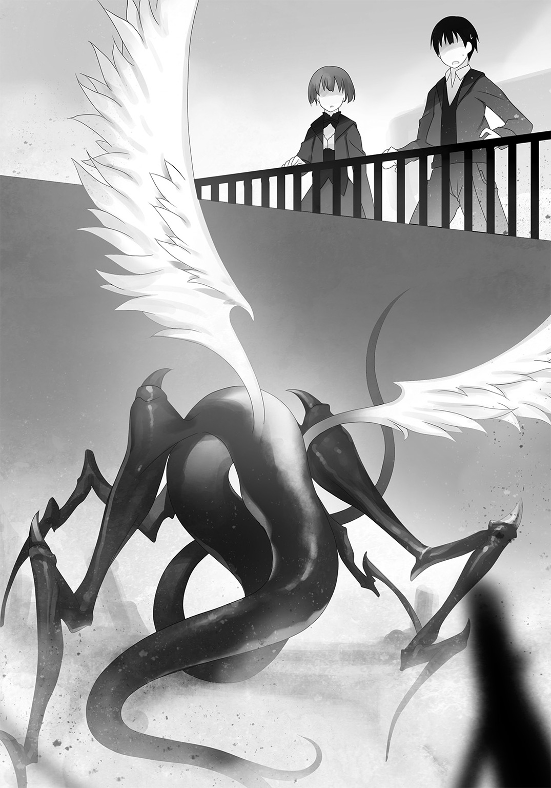
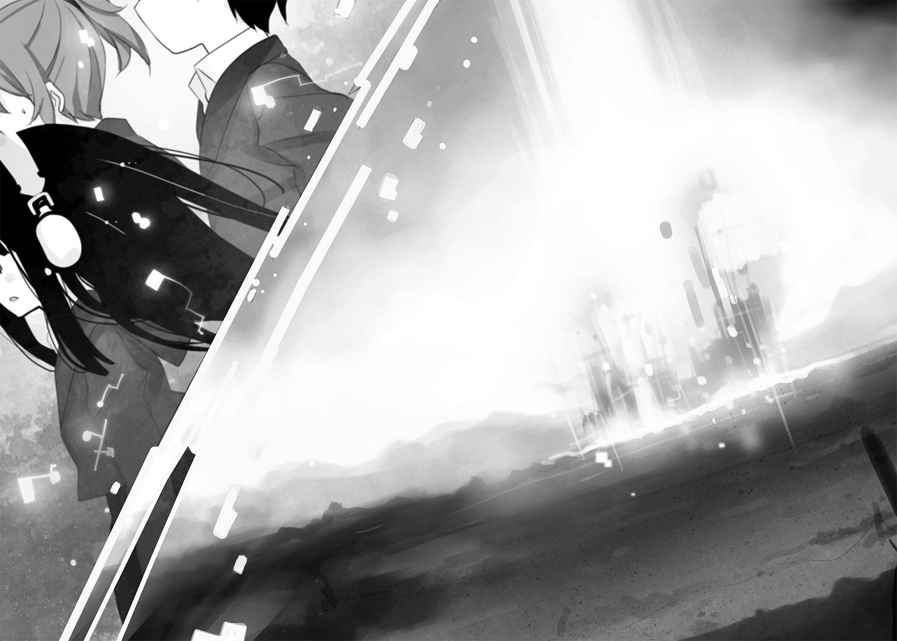

| 放課後アポカリプス | |
| 杉井 光 | |
この本は縦書きでレイアウトされています。
また、ご覧になる機種により、表示の差が認められることがあります。
 ダッシュエックス文庫DIGITAL
ダッシュエックス文庫DIGITAL
放課後アポカリプス
杉井 光
１
保健室登校、という言葉があるらしいけれど、僕の場合は司令室登校だった。
＊
不登校寸前になったきっかけは、高校に入学してすぐにこじらせた風邪だ。二週間くらい休み、四月末に病み上がりで登校してみると、一年Ｂ組の教室はとても居づらい場所になっていた。授業には全然ついていけないし、体育の時間も僕だけペアの相手がいなかったし、教室移動の際にも不案内な僕だけがクラスに取り残された。
もちろん、クラスメイトにノートを写させてもらうなり移動先を訊くなりすればいいだけの話だ。そもそも人に自分から話しかけることが苦手だった僕は、病気をしていなくてもいずれなにかしらの些細なきっかけで孤立していたのだろう。
とどめになったのは生物の時間だった。実験授業にはじめて出席したら、六人ずつの実験班がすでにできあがっていて、僕はどこの席に座ったらいいのかもわからなかった。
「ああ、藍沢は休んでたんだっけか？」と先生はのんびり言った。「それじゃあ、どこかの班にてきとうに混ぜてもらえ」
クラス全員が迷惑そうな顔を僕に向けてきた気がした。僕はトイレにいくと偽って生物室を出ると、そのまま戻らなかった。
それ以来、登校してもクラスに顔を出すのが気詰まりで、かといって不登校になってしまうほどの勇気も持てず、僕は図書室や裏庭で時間を潰すようになった。
陽当たりの悪い湿った土の上で、遠くチャイムを聞きながら弁当をもくもくと食べていると、中学のときとなにも変わっていないな、と情けなくなってくる。とくにいじめられていたわけでも無視されていたわけでもないけれど、どうしてもクラスになじめなかった。同級生たちが無言で僕を詰っているように思えてしかたなかった。なんでおまえはここにいるんだ、と。だから休み時間はトイレの個室にこもって本を読んだり音楽を聴いたりして過ごした。司書の先生がいないときには一日中図書室で時間を潰した。
高校でなにもかも心機一転やり直そうと、僕の中学からはまずだれも進学しなそうな東京の高校を無理して受けてやっとの思いで合格したというのに、けっきょく同じ繰り返しだ。考えてみれば当たり前だった。僕自身が変わっていないのに、僕を取り巻く世界がそう簡単に変わるわけはないのだ。
人生はゲームじゃない。ボタン操作ひとつでリセットはできない。これが、僕の生きてきた十五年間で学んだいちばん大切なことだ。
でも僕は間違っていた。人生は実にそのままの意味でゲームだった。
最悪なことに、リセットできない点に変わりはなかったけれど。
＊
未咲と出逢ったのは、五月はじめの月曜日のことだった。どこかのクラスが図書室で自習だったので、居場所を追われた僕がふと思いついて北校舎の屋上にいってみたところ、先客がいたのだ。
最初は彼女の存在に気づかなかった。剝き出しのコンクリートを踏む新鮮な感覚を味わい、手すりに近寄っていつもよりずっと広く見える空をぐるりと見渡し、眼下の校庭から聞こえてくるホイッスルと砂っぽい足音のリズムを聞くともなしに聞き、手すりに背を向けて寄りかかって大きく息をついたところでようやく気づいた。
階段室の屋根の上に、人影があった。僕はびっくりして後ずさった。女の子だ。うちの制服を着ているからにはうちの生徒なのだろうけれど、その目つきはなんだか高校生とは思えないくらい大人びていた。いや、大人びていたというのは正確な表現じゃない。もっと深くて厳しい、一切の生物の存在をゆるさない塩湖みたいに澄んだ眼だった。
だからだろう、僕はしばらく魅入られてしまった。
彼女はだいぶ前から僕に気づいてたらしく、身を低くして警戒の色もあらわにこちらをにらみ下ろしていた。長いすべらかな黒髪を無骨なまでに大きなヘッドフォンでおさえつけているせいで、人を寄せつけない雰囲気はいっそう際立っていた。
「......あ、ああ、ごめんなさい」
ようやく我に返った僕は言った。
「その、人がいると思ってなくて」
すぐに校舎内に戻るべきだったのだろうけれど、そのためには彼女の見ているすぐ真下を通過しなければならず、気詰まりで手すりを離れられなかった。
彼女はむっとした顔で階段室の屋根から飛び降りた。黒髪とスカートが春風にひるがえって大きく広がる。僕が気圧されて言葉を失っている間に、彼女はさっさと校舎に入っていってしまった。
扉がつっけんどんに閉められた後で、僕は大げさに息をつく。視線が合っている間まわりの音が聞こえなくなるくらいの強い瞳だった。
だれだろう、あれは。こんな時間に屋上にいたということは、僕と同じく授業をさぼっていたということだろうか。
ともかくこっちの校舎の屋上を使うのはやめよう、と僕はドアをくぐった。
でも彼女とは翌日すぐに再会することになった。南校舎の方の屋上なら大丈夫だろうと思って二時限目の終わりに行ってみたら、やはり階段室の上に黒い影がうずくまっていたのだ。膝を抱えてしゃがんでいた彼女は、身を乗り出してきて僕を見る。ヘッドフォンに挟まれた不機嫌そうな顔がむっとしかめられる。
「あ、あのっ、......ごめん」
僕はあわてて言った。
「こっちならいないかと思って、その」
彼女がまたも屋根から下りようとしたので僕は両手をばたばた振って制止した。
「い、いや、いいよ、僕がいなくなるから、ほんとごめん」
首が痛くなるくらい顔を伏せたままドアに飛び込んだ。少しでも視線を上げたら彼女の太ももとかスカートの中身が目に入ってしまいそうだったからだ。一階まで足を止めずに駆け下り、階段の裏側の埃っぽい空間に身を押し込んでようやく一息ついた。
屋上は彼女のテリトリーなのか。しかたない、あきらめよう。
三度目の遭遇も信じがたいことにその翌日だった。司書がいなかったので図書室で一日過ごそうと決め、最近お気に入りの怪奇小説のシリーズを読み進めようと棚を探したら、読み途中の三巻だけがなかった。しかたない、飛ばして読むか、と四巻を抜き取り、他にも何冊か選んで重ねて抱え、机の並ぶスペースに行ったら見憶えのある人物が座っていた。彼女だった。
あちらも驚いていたが僕の驚きはそれ以上だった。三日連続で顔を合わせたのもそうだが、彼女が読んでいたのがまさに僕が探していた三巻だったからだ。僕は口をぱくぱくさせて、自分の手の中の一冊と彼女の手元の一冊を何度も見比べる。彼女も気づき、むうっと唇をすぼめ、立ち上がった。
「この栞、ひょっとしてあなたの？」
はじめて聞く彼女の声だった。しばらく、それが僕に対する質問だということを理解できなかった。彼女がページの間から引っぱり出した細長い和紙片は、たしかに僕がついこないだ挟んでおいたものだ。
「......う、うん」と僕はうなずく。
「じゃあ早く読んじゃって」
彼女は本を僕の方に押しやってくる。
「いや、いいよ、先に読んでも」
というか僕は出ていくよ、と言いかけた僕を無視して彼女は本棚に向かった。僕は途方に暮れてしまう。このまま彼女の厚意――といっていいのかわからないが――に甘えてこの三巻を今ここで読むのもなんだか気が引けるし、かといってさっさと出ていくのも気持ちを踏みにじるみたいで失礼だし......。
ちらと彼女の様子をうかがう。そこで僕ははじめて、彼女がブレザーの左腕に巻いている赤い布帯に気づく。腕章だ。白抜きで『１Ｃ 学級委員』とプリントされている。学級委員なのか。ていうか授業しょっちゅうさぼってるくせに、どうして学級委員の腕章なんてちゃんと着けてるんだ？
と、そんな疑問がどうでもよくなるくらい重大なことに気づいた。さっきから彼女は本棚の同じ箇所を何度も何度も指でたどって探しているのだ。まさか、と思いつつも、僕は思いきって声をかけた。
「あの」
ヘッドフォンをしているから聞こえないかな、と心配したけれど、彼女はこっちを見た。
「ひょっとして、探してるの、これ？」
さっき一緒に持ってきた恋愛小説シリーズの二巻を持ち上げてみせる。自分でも読んでおいてなんだが、こんなべたべたに甘いのも読むのか、と意外に思った。彼女は目を見開き、頰を染めて横を向く。
「ち、ちがっ、そ、そんな恥ずかしいの読まない。だいたい主人公が鈍くていらいらするやつは大嫌い」
「読んでんじゃん」
思わず口に出してしまった。彼女は真っ赤になって、大股で図書室を出ていった。
僕は椅子に腰を下ろして頭を抱え、盛大に後悔した。怒らせてしまった......。たまに勇気を出して人に話しかけてみればこれだ。もう僕なんて一生無言でいた方がいいのかもしれない。いや、でも、今のって僕がなにか悪いのか？
まあいいや。とにかく結果的に図書室でひとりになれたんだ。続きを読むか。
ページをめくってはみるものの、彼女のことが気になって小説の内容なんてちっとも頭に入ってこなかった。あいつはなんなんだろう。僕と同じようにクラスになじめなくて授業にも出ずにひとりで時間を潰しているかわいそうなやつだろうか。あのつんけんした態度なら孤立するのも無理はない、自業自得だ。......と考えたところで、全部自分にも当てはまるので落ち込んできた。
１Ｃと腕章に書いてあったっけ。一年Ｃ組なら隣のクラスか。でもお互いにほとんど教室に顔を出していないとなれば見憶えがないのも当然だった。
それ以上彼女について考えていてもしかたがないので、僕はむりやり小説に意識を戻そうとする。でもなにかがまだ引っかかっている。一年Ｃ組。......Ｃ組？
たしかこの高校は一学年が二クラスずつじゃなかったか。Ｃ組なんてあったか？
＊
翌日、他の生徒がまだ一人も登校していない早朝に、僕は登校した。南校舎二階、東側の階段から数えて三番目が僕の一年Ｂ組だ。その隣の教室には、室名プレートが掲げられていなかった。そうっと戸を引いて中を覗いてみる。
ぎょっとした。教室は空っぽだった。
......いや、教壇の前にひとつだけ、机と椅子がぽつんと置かれている。
それだけだ。教卓もないし、掃除用具入れにはなにも入っていないし、黒板消しもチョークも見当たらないし、掲示板はまっさらだ。
おそるおそる足を踏み入れる。早朝の静けさがしんと肌に染みいってくる。
あらためて見回す。ほんとうに、机ひとつを除いてなにもない。壁際の床には埃がたっぷりたまっている。日焼けして変色したカーテンが束ねられもせずだらりとレールからぶら下がっている。黒板の粉受けはきれいなままだ。
なんだこの教室......。
机に近づいてみる。深緑色のファイルが一冊、のっている。出席簿だ、と気づく。
取り上げてめくってみると、四十いくつに行分けされたリストのいちばん上の欄にぽつんと一人分の名前だけが記されていた。
『七連坂 未咲』
しちれんざか・みさき。
これがあの女の子の名前なんだろうか。一人だけしか載っていない出席簿っていったいどういうことだ。
くだらない妄想が次々に湧き起こってくる。あいつ、ひょっとして幽霊じゃないか。ずっと昔、在籍数が多くて一年Ｃ組が存在した頃の生徒で、自殺かなんかで地縛霊になって学校をずっとうろついている、とか。あるいはもう少し現実的に、ひとりぼっちをこじらせすぎて、空き教室を使って自分だけのクラスを捏造した、とか――
背後で戸が開く音がして、僕は驚いて振り向いた。
戸口のところに彼女が立っていた。口を半開きにして僕を見つめ、それから首にかけていたヘッドフォンを急いで耳に着ける。
「なっ、なんでこんなところにいるの！」
視線をそらし、ぶっきらぼうな声で彼女は言った。
「あっ、ご、ごめん、勝手に入って」
憤然と歩み寄ってきた彼女は、僕の手から出席簿を引ったくると、『七連坂未咲』の名前の横、今日の日付の欄に丸印を書き込んだ。それから机に鞄を下ろす。
やっぱりこいつが七連坂未咲なのか。
「......あのう、ここって......空き教室、だよね？」
そうっと訊いてみた。七連坂未咲は首を振った。
「教室じゃない」
「......え？」
「ここは司令室」
ぽかんとした間があった。
言われたことが理解できなかった。シレイシツ、というその単語が頭の中でしかるべき漢字に変換されるのにかなりの時間を要した。
「......司令室？ えっと、どういうこと？」
「わからないならいい」
七連坂未咲は首を振り、出席簿を持ったまま教室の戸口に向かおうとした。
いけない、昨日怒らせてしまったことをせめて一言でも謝らなければ、と僕は思い、どう言葉にすればいいのかも深く考えずに呼び止めていた。
「あ、あの、ちょっと待って」
未咲は足を止めて振り返った。露骨に不機嫌そうなので僕はたじろぐ。
「なに？」
訊かれ、答えに窮し、なんでもいいから言わなければと焦って口を開き、出てきたのはこんな言葉だった。
「......あのシリーズ、二巻からは主人公がちょっと鈍くなくなってるよ」
なに言ってんの僕？ 謝るんじゃなかったのかよ？
しかし発した言葉を引っ込めることはできない。未咲は一瞬面食らった表情になり、それからぷいと横を向く。
「だからなんなの。あ、あんな甘ったるいの、読むわけない」
わざとらしいくらい足音を大きく響かせて未咲は廊下に出ていった。僕は様々な後悔にまみれて床にしゃがみ込んだ。
しかしその日の三時限目、図書室に行ってみたら、例の恋愛小説のシリーズは五巻までごっそり貸し出し中になっていたので、ちょっと笑ってしまった。
＊
そうしてすべてが始まる――あるいは終わる――水曜日がやってくる。
水曜日は、校舎裏に積まれた廃棄予定の古い机に腰掛け、ぼんやり音楽を聴いて過ごすことにしていた。ちょうど曲の切れ目にチャイムの音が重なり、イヤフォンを外して時刻を見る。六時限目が終わるところだった。
さて家に帰るか、と机の山の上から降りようとしたときだった。
「あーっ、いた！ 藍沢！」
やかましい女の声が耳に突き刺さり、僕は転げ落ちかけた。重なった机が軋んだ。校舎の角から姿を現し、こっちを指さして近づいてくるのは、髪を茶色く染めて制服を大胆に着崩した女子生徒だった。
「ほんッと捜したんだからね！ サボるなら同じ場所でサボれっての、いつどこにいるかもわかんないんだから！」
「え、あ、あの？」
捜した？ 僕を？ ていうか――だれ？
「信じらんない！」とその女子生徒は目を見張る。「同じクラスなのに憶えてないの？ あんたも三回か四回は授業出てるでしょぉ？ あたし有間、後ろの席の！ 有間くるみ！」
三回か四回で同級生の顔と名前が一致するようなまともな人間なら、今ごろ僕はこんな場所でサボってたりしない。
「ほんっとに憶えてないの？ こんな可愛くて読モまでやってて最近マスカラも思い切ってパール入りに変えちゃったくるみさんを憶えてないの？」
「初対面のときにその痛い自己紹介やってくれてたら憶えてると思うけど」
「なんだと」と彼女は僕の襟首をねじり上げた。細腕に見合わず怪力だった。「痛いんじゃないの、こういうキャラ作りがティーン誌では受けるの！」
「ごめん、ごめんってば！」
僕、どうやら胸の内にしまっておけばいいことをぽろっと漏らす癖があるらしかった。未咲にもそれで怒られたし、人と喋っていないとこういう悪癖も治らないまま成長しちゃうのか、と暗い気持ちになる。
「って、こんなことしてる場合じゃなかった。早く来て、この後ホームルームなんだから！ 今まで学級委員がいなくて全然なんにも話が進まなかったんだからね！」
「......学級委員？」
有間くるみは、答えるよりも早く僕の左腕をつかむと、なにか赤いものを取り出して巻きつけてきた。
「な、なにっ？」
「暴れるなっての、安全ピン刺さるよ！」
腕章だった。『１Ｂ 学級委員』という文字が白く染め抜いてある。未咲がつけていたものと同じだ。
「......なんで僕が学級委員なの？」
「委員決めるときに休んでたでしょ。だからみんなやりたがらなくて押しつけたの」
僕は天を仰いだ。横暴にもほどがある。くるみは僕の手首をつかんでずんずん歩き出した。僕は足下に置いてあった鞄をあわてて取り上げると、彼女の手の感触にどぎまぎしながらもついていく。引っぱらなくても歩ける、という言葉さえ口にする勇気が持てない。二階の１Ｂ教室にたどり着くまでの間、すれちがう他の生徒たちの視線が痛かった。
「藍沢見つけた、連れてきたよ！」
くるみは教室の戸を開けてそう言うと、僕を中に引きずり込んだ。たちまち視線が集まり、僕の身はすくみあがる。まばらな机と、十数人の男女たち。僕を見る目は不審と不安と猜疑と好奇が四分の一ずつだった。僕の被害妄想かもしれないけれど。目を伏せると、視界の端、教壇の隅で担任教師がパイプ椅子に座って苦笑しているのが見えた。まだ赴任してきたばかりの若い女の先生だ。僕が授業に出ていないのを知っていてもなにも言ってこない内気そうな人だから、この場でもたぶんなんの助けにもなってくれないだろうな、と思う。
「......藍沢？」「へえ、学校には来てたんだ」「何度か見たよトイレとかで」
クラスメイトたちが交わす言葉の端々が聞こえてきて、僕は真剣に逃げ出すことを検討し始める。でもくるみが僕の背中をずいずいと押して教壇の向こう側に立たせる。
「生徒会に怒られちゃったんだから、うちのクラスだけ学級委員が全然働いてなくて決めるものも決めてないって！ 今日のホームルームはあんたがちゃんと仕切ってよ！」
「い、いや」
僕は言い返そうとして咳き込む。みんなから注がれる視線に憐れみが混じり出す。
「仕切れって言われても、なにやればいいのか」
「いいから早く始めろよ学級委員」「俺さっさと済ませて部活行きたいんだよ」「あたしも」
野次が飛び、僕はまたも顔を伏せてしまいそうになる。
「でも、あの」からからの声をなんとか押し出す。「まだクラス全員集まってないみたいだから、その」
なんとか時間を稼ぎたい一心で言った。でも、教卓のすぐ近くの席のくるみも、教壇の脇の先生も、そしてクラスメイトたちも、怪訝そうな顔になる。
「そろってるよ」とだれかが言った。
「サボってたのはおまえだけだよ」とべつのだれかが言い、笑い声がいくつもあがる。
僕は身をすくませながらも教室を見回す。だって、どう見ても十何人しか――
そこで気づく。
机が足りている。
くるみの前の空席は、彼女の話からして僕の席だろう。そのひとつを除いて、すべての椅子に生徒が着席している。全員、そろっている......？ 目で生徒を数える。十六人だ。
「うちは十六人学級だよ」「授業出てないからって、だいたいの人数くらいわかるでしょ」
「そ、そうなんだ」
僕は出てもいない額の汗を拭うふりをした。十六人学級？ そんなに少なかったか？ おかしい。憶えている限りでは、普通に四十人弱はいたはずだ。いくら僕が入学直後からほとんどクラスに顔を出していないといっても、倍以上も数を勘違いするものだろうか。
「だから早く始めろってば」
「もーっ、しゃあないから手伝うよ」とくるみがげんなり顔で立ち上がった。「あたしが黒板書くから、藍沢はほら、そこ、議題がファイルにまとめてあるよ」
「あ、う、うん」
「くるみが最初から学級委員やればよかったんじゃないの」
女子生徒のだれかが冷やかした。
「やだよ！ 中学でずっと出席番号１番で、色々雑用押しつけられてきたんだから」とくるみは口を尖らせる。「せっかく藍沢がいるんだから全部押しつけるの！」
出席番号１番だから僕は学級委員にさせられたのか、と絶望的な気分になる。それじゃあ委員決めの日にたとえ出席していたとしても、どうせこうなる運命だったってことか。
しかたない。
教卓の上に置いてある『１Ｂ』というラベルの貼られた水色のファイルに目をやる。なにをどうすればいいのかはよくわからないけれど、とにかくこの場をなんとか切り抜けてさっさと帰ろう、そして明日から完全に不登校になるべきか検討しよう――と、ファイルをつかみ上げた、その瞬間だった。
チャイムが鳴るのが聞こえた。
メロディこそ同じだけれど、ひどく不愉快に割れた響きだった。しかも、一打ちごとに音が大きくなってきている。僕はなにごとかとスピーカーを見やる。クラスメイトたちも表情をこわばらせてあたりを見回している。頭痛がしてきた。頭蓋骨をハンマーで直接叩かれているみたいだ。両手で耳をふさいでも音量は堪えがたいほどになり、僕は歯を食いしばって教卓に突っ伏した。なんだこれ？ なにが起きてるんだ？
チャイムが止んだ。
僕は顔を上げる。
骨の内側でまだ痛みが反響していて、頭がくらくらしていた。目もいくぶんかすんでいて、あたりが薄暗く見える。......いや、ほんとうに薄暗いのか。窓ガラスの向こうの空がどんより灰色に塗りつぶされている。さっきまで晴れていたはずなのに。
クラスメイトたちはみんな椅子からずり落ちたのか机の間の床に倒れていた。かすかなうめき声があちこちから聞こえ、制服の背中がもぞもぞ動いている。さっきのひどい大音量のせいで気を失ったのだろうか。
「う、......ぅ......」
「......っく」
一人、また一人と目を開け、机に手をかけて身を引き起こそうとしている。くるみは僕の足下で苦しげに身をよじっている。助け起こそうかとかがみ込んだとき、緑色の烈しい光が僕の視界の上半分を灼いた。
「......ぅッ」
目を手で覆ってまぶたを閉じる。ところが信じがたいことに緑の光は視界から消えなかった。真っ暗闇の中で、変わらずそこにぎらついている。
なんだこれ？
目を開き、あちこちを見回す。どちらを向いてもその横長の緑の光帯は僕の視界の上半分、距離でいうと二メートルくらい先に浮かんでいた。眼球がどうかしてしまったのだ、と思った。後に、それが視神経に直接送り込まれた映像だとわかるのだが、そのときの僕には知るよしもなかった。とにかく気持ちを落ち着かせるので精一杯だったのだ。
光の帯は、よく見てみれば、文字だった。アルファベットだ。
RESTART THE GAME
そう読める。
......ゲーム再開......？
文字列が数万のドットに砕けたかと思うと、視界の隅に散って、ワイヤーフレームやごちゃごちゃとした数値表記の羅列に変わった。もう僕は混乱しきっていて、教卓にしがみついたまま口を半開きにし、視界に躍る数字やアルファベットや円や直線に見入っていた。
クラスメイトたちが起き上がる。男子の一人が毒づいた。
「......今日のリスタートは早ぇなおい、まだホームルーム中だぞ！」
べつのだれかが髪を搔きむしりながら言う。
「全員起きてるか？」「点呼！」「装備と残弾を確認しろ」「ちょっと待ってよ、前回のゲームから装甲値が変わってないよ、ひどい！」「いいからさっさと索敵しろって！」
剣呑とした言葉が飛び交う教室の黒板前で、僕は啞然としたまま立ち尽くす。いったいなにが起きているのかはまったくわからなかったが、僕以外のみんなはこの異常事態にどうやら慣れているらしいということだけわかった。
「ああッ」そばにいた男子の一人が僕の手元を見て素っ頓狂な声を上げる。「やっぱり藍沢がコマンダーだ」
「マジか」「やっぱりな」「学級委員がコマンダーって決まってるんだね」「やべえよ」
クラスメイトたちが寄ってきて僕を取り囲むので、僕は気圧されて後ずさる。
「藍沢、さっき笑ったりして悪かった！」「マジおまえが頼りなんだ」「藍沢さんって呼ぶから勘弁してくれ！」「コマンダーだって知らなかったんだよ、ほんとごめん」
男子たちのあまりの急変ぶりに僕は目を白黒させる。
「あ、あのっ、......コマンダー？ ていうか、な、なにがどうなってんの？」
だれかが答えるよりも早く、校舎が大きく揺れた。耳障りな軋みが四方八方から押し寄せ、女子たちの小さな悲鳴が混ざる。地震？
「やばいって時間ないよ」と男子のだれかが言った。
「おい有間、藍沢を屋上に連れてけ、ついでに手っ取り早く色々説明しろ！」
「なんであたしがっ」とくるみが唇を尖らせる。
「出席番号２番だろ！」
「もーっ、けっきょくそれなのーっ？」
くるみは僕の左手首をつかんだ。そこで気づく。僕の視界の左上に、白熱する文字が浮かび上がっている。
1B Commander
司令官――この一年Ｂ組の？
「ほら藍沢、行くよ！」
僕はまたも手を引きずられて廊下に出た。他のクラスの生徒たちもせわしなく廊下を駆けていくのが見えた。視界内の緑色の各種表示はまだ消えていない。ところどころ赤い文字が点滅しているのが不安を誘う。
「いい、藍沢、あんたはうちのクラスのリーダーなの！ ぐだぐだ言ってないでさっさと状況を把握してちゃきちゃき働いてね！」
「......状況、って」
僕らは階段を駆け上がり、屋上へと出る重たい金属扉を押し開いた。
すでに何人もの生徒たちが屋上にいた。手すり越しに、どっぷりと曇った暗い空をじっとにらんでいる。僕もくるみに促され、手すりに近づき、眼下に広がる光景に息を呑んだ。
学校の敷地のすぐ外にあるはずの、家も道路も寺も墓地も商店街も竹林も雑木林も、なにもかもが消え失せていた。見渡す限りに広がっているのは、荒涼とした褐色の岩場だった。喉をこわばらせて視線を持ち上げ、首を巡らせる。どちらを向いても同じだ。地平線まで、岩だらけの荒野が続いている。
なんなんだ、これは。
僕の混乱は限界点に差しかかっていた。ひととき平衡感覚さえも消えかけていた。指一本で背中を押されるだけで真っ暗闇の中に転げ落ちていってしまいそうだった。
「あのね、藍沢」
くるみのひそめられた声が耳に引っかかる。すぐ隣にいるはずなのに、遠く聞こえる。
「先に言っとくけど、あたしらだってコレなにが起きてんのかよくわかってないの。でもはじめてじゃないの。このゲーム、ええと、もう六回目なの」
僕はくるみの横顔を見つめた。彼女は手すりの向こうに広がる荒れ地と曇天の接線をじっと凝視している。
「あんたも、このへんに――」とくるみは手を伸ばして自分の前を指さす。「色々見えてるでしょ、緑色の文字とか数字。燃料、兵器データ、それからレーダーサイト」
唾を飲み下し、うなずく。くるみにも見えてるのか。いや、他のみんなにも、か？
「ほんとに、なんでこんなゲームやらされてんのか、全っ然わかんないんだけど」
くるみの手がなにもない空間をまさぐった。と、彼女の指先で光る矩形が何度か明滅したかと思うと、次の瞬間、目を疑うことが起きた。くるみの手のひらに忽然となにか細長いバトン状のものが現れ、その両端が枝分かれしたりねじくれたり新しい被膜に覆われたりしながら伸び、彼女の身長とほとんど変わらないくらいの長さになったのだ。
彼女が握っている部分は、今や斜めに突き出したグリップとなっている。引き金に指がかけられる。
長大な、銃砲――だ。おそらく。金属ともプラスティックともつかない不思議な光沢の素材でできていて、奇妙なパーツがあちこちに装されているせいで、なんだか前衛美術の彫刻作品みたいだったけれど、全体から漂う威圧感は兵器が放つ特有の凶気だ。
なにもない空中から、たしかに現れたのだ。あり得ない。もう、目の前で起きているなにもかもが僕の常識をせせら笑っていた。
ゲーム。その響きだけが、かろうじて僕の現状と認識とをつなぐ。
くるみは砲身を手すりに置いて、砲口を垂れ込めた雲に向け、言葉を続ける。
「週に一回、放課後にいきなりこれが始まるの。学校中がこれに放り込まれてね。全滅させるまで戻れないわけ」
「......全滅？」
なにを？
気づけば、屋上にいた他の生徒たち――二年生も三年生もいる――もくるみと同じように空中から次々といかめしい機器を引きずり出して手際よく構えている。形状こそ、円盤状のものや両肩で支えるもの、全身をほとんど覆うようなもの、と様々だったけれど、素材や部品の細部がどれも共通していると一目でわかる。見た目に反して重量はあまりないのか、ただの高校生のはずの生徒たちが自分の身体と同じくらいの大きさの兵器を軽々と扱っていた。
ゲーム。ゲームだから......？
「反応あったぞ。方角２２７」とだれかが大声で言った。僕の視界内、右隅の方眼になった部分が急激にズームして地形をスキャンし始める。
「......でかいな」「全長18メートル、三体......か」
「いや四体目も確認した」「接近中？」「あと一分半てとこだ」
「すげえ速いな」「四体かよ......やれんのか」「前は二体でもかなり――」
張り詰めた言葉が屋上で飛び交う。僕らの頭上で雲が重苦しく北へと動いている。
接近中、って、なにがだ？ 僕は自分の鼓動を痛いほど感じる。
「いーい、藍沢、あんたはうちのコマンダーなんだから絶対にやられないで」
くるみの平手が僕の背中に叩きつけられる。
「やられる、って......なにに」
彼女は地平線を指さした。
「なにかは、よくわかんないんだけど、あたしたちは――」
視界内に警告色のメッセージが躍る。兵器の安全装置が外れる音が一斉に響く。階下で生徒たちの足音と警戒を呼びかける声。
やがて――
それが地平に現れる。
最初は、白いしみのような影だった。みるみるうちに岩の大地の褐色と曇天の灰色とを食いつぶしながらそれは肥大化する。巨大ななにかがすさまじい速度でこちらに近づいてきているのだ、とわかった次の瞬間には、それは僕の眼前にそびえ、僕を圧し潰そうとするほどに視界を埋めていた。
四つ脚の獣にも、蜘蛛にも、百足にも、また這いずる人の姿にも見え、それらのどれでもなかった。剝き出しの筋と腱がぬらぬらと濡れてグロテスクに光っていた。多関節の肢は無秩序に胴から突き出て大地をえぐっていた。どこが頭なのかもわからなかったが、体表のあちこちに眼球とおぼしき器官が埋め込まれてぎろついていた。それを形容する言葉など、僕らはまったく持っていないはずだった。けれど。
ひとつだけ、あまりにも、あまりにも明確な、おぞましいくらい荘厳な外見的特徴を、それは有していた。見間違いようもなかった。胴の、おそらくは背にあたる部分から、天に向かって高く衝き伸ばされ、雲を払うかのように羽ばたいている――
一対の、真っ白な翼だ。
くるみが震える声で続けた。
「――天使、って呼んでる」

２
汗だくで目を醒ますと、自宅のベッドの上だった。
毛布をはねのけて起き上がる。うまく呼吸ができない。身体が熱い。カーテンの隙間から射し込んだ陽光が目に痛い。
枕元に置いてあったスマートフォンをひっくり返して見た。......午前七時。
朝だ。
......朝？
じゃあ、あれは夢？ 夢だったのか。
僕はベッドから床に両脚を下ろし、ため息をつく。夢か。そりゃそうか、学校のまわりが見渡す限りの荒れ地になってたり、空中からばかでかい武器が現れたり、挙げ句の果てにあんな校舎よりもでかいような化け物が襲ってくるなんて――あり得ない。
そこで僕は考え込む。
どこから夢だったんだ？ 昨日の出来事を朝からひとつずつたどってみると、起きて、朝食を摂って、登校して、校舎裏で音楽を聴いて時間を潰して......それから、そう、クラスメイトのあの女の子が僕を捜しにきたんだった。有間くるみ、だったっけ。あの娘に教室まで連れていかれて、ロングホームルームの進行役をさせられて――
そこで、あの『ゲーム』が始まったんだ。
おかしい。朝からちゃんと記憶が連続している。それに、帰宅した記憶がない。
もしかして起きて学校に行ったというところからすでに夢だったのか。そうすると辻褄が合う。そもそもクラスメイトが僕を捜しにくるわけがないし。
「ひいろ！ ひいろ、起きなさい！ 七時過ぎてるわよ！」
ドアの向こうから母の声が聞こえ、僕はベッドから転げ落ちた。
「もう起きてるよ！」と叫び返し、急いでパジャマから制服に着替える。
それにしても、あんなに大声で名前を呼ぶのはやめてくれないだろうか。マンションなんだからまわりの部屋に聞こえてしまうじゃないか。
部屋を出ようとして鞄がないのに気づく。持って帰ってきていない？ あれ？
記憶をもう一度たどってみると、くるみに引っぱられて教室に行ったときには手に持っていたことを思い出す。教室に置きっぱなしか。いやいや、あれ自体がすでに夢だったんじゃないのか？ そうすると鞄はどこにあるんだ？
考え込んでいてもしょうがなかったので、家を出て自転車に飛び乗った。クラスメイトと顔を合わせたくなかったので、だれよりも早く教室に行って鞄の所在を確かめたかったのだ。
校門横の駐輪場に自転車を入れ、校舎の手前部分をまじまじと見つめる。
壊れていない。崩れた痕跡すらない。当たり前か。化け物に叩き壊されたのは僕の夢の中の校舎なのだ。現実じゃなかった。
１Ｂ教室にはまだだれも来ていなかった。僕はほっと息をついて自分の机のところまで行った。鞄が机の横のフックに掛けてあった。
見つかりはしたものの、複雑な気分だった。自分で教室に来た憶えはない。ということは昨日くるみに連れてこられたところまでは夢じゃなかったのか。
「あれ？ 藍沢」
後ろから声をかけられ、僕はびっくりして膝を机にぶつけてしまう。
振り向くと、僕以上に驚いた顔のくるみが立っていた。
「......な、なんなの、そんなに驚かなくてもいいじゃん」とくるみは言った。「どうしたの、これまでずーっとサボってたのに、授業出る気になったわけ？」
「え、あ、いや、あの」
どう接していいのかわからない僕は、曖昧な言葉しか返せない。
「まあいいんだけどね、あたしが出席番号２番だからってなにかと押しつけられるのがなくなるし。前の席にいたら居眠りしやすくていいし。水曜日は毎週ロングホームルームなんだから昨日みたいにちゃんとやってよ？」
僕はくるみの胸のあたりを見つめる。ロングホームルーム。昨日みたいに。
やっぱりあそこまでは夢じゃなかったのだ。それじゃあ僕はいつどうやって家に帰って眠ったんだ？
「だからって授業に出てほしいとかってわけじゃないからねっ？」
くるみがいきなり頰を色づかせて声を荒らげる。
「藍沢の世話係とかみんなに言われてほんと迷惑なんだから！ 藍沢がいなくてももう捜しにいったりしないからねっ？」
「......はあ。ご迷惑おかけしました」
なんでこんなに怒ってるんだろう、と僕が訝しんでいると、さらに数名の女子生徒たちが教室に入ってきた。
「くるみ、おはよー」「おはよー」「あれ、また藍沢と一緒だ」「二人っきりだー」
女子生徒たちはくすくす笑い、くるみは真っ赤になって椅子をがたつかせ立ち上がる。
「ちがうから！ ぐーぜん！」
「くるみがお世話すると不登校君でもちゃんと学校来るんだね」「すごいね」
「世話してない！ 捨て猫拾ってきたみたいに言うな！」とくるみは憤慨した。それから僕に向き直って言う。「猫の方がずっと可愛いしっ」
知らないよ。なんなんだよさっきから。
僕がまごついている間に教室にはどんどんクラスメイトたちが入ってきた。男子も女子もほとんど顔をそろえてしまう。
「昨日のホームルームで出た課題、書いてきたか？」
「やってるわけないじゃん」「三年間の目標、とか意味わかんない」
「『彼氏作る』とかどうだよ」「それウケる」「男に言われたくない！」
みんなごく普通にホームルームの話をしているので、僕はなけなしの勇気を振り絞っておそるおそるくるみに訊いてみた。
「あの、昨日のホームルームってけっきょくどうなったんだっけ」
くるみは「はあ？」という顔をした。
「生徒会行事の予定とか課題の用紙とか配って終わったでしょ。ていうかあんたが学級委員なんだから仕切ってたじゃん」
「あー、そう。そうだよね」
やっぱりあの『ゲーム』は夢だ。ホームルームの後で疲れて帰ってすぐ寝たから記憶がごっちゃになったのかな。あんなの現実に起きるわけないしな。いやだなあ、僕、あんな願望があるってことなのか。そりゃクラスには全然なじめてないけど、学校に化け物が襲ってきて倒す役目としてようやくクラスに参加できる夢なんて、惨めすぎる。
「あれ？ 藍沢、今日も来てるの？」「ほんとだ」
男子たちも、ようやく僕の存在に気づいたようだった。
「なんで来てんの、人生捨ててたんじゃなかったん？」「俺も毎日愉しくサボりてえわ」
にやにや笑いがそろってこっちに向けられるので僕は顔を伏せた。
「有間が優しくしてやったからじゃねえの？」「ああ、あるあるそういう勘違いな」
「あたし関係ないでしょ！」とくるみが怒る。
僕は床木の継ぎ目を必死に凝視しながら後悔した。鞄は見つかったんだからさっさと教室を出ていけばよかった。クラスじゅうの視線が集まるのを感じる。朝から教室にいてごめんなさい、と謝ってしまいたくなるが、そんなことで謝ったらもっと笑われるだろう。どうしよう、今から出ていったらまた変な目で見られるだろうし。
予鈴が鳴った。
「一時間目、生物室だ！」「やっべ教科書ない」
「急がないとあの先生キレやすいし」
椅子が鳴る音が教室を埋め、クラスメイトたちが立ち上がってノートや教科書を小脇に抱えて戸口に向かう。教室移動か、じゃあこの隙に校舎裏にでも逃げようかな、と思って座ったままでいたら、くるみが僕の肩をつついた。
「なにしてんの藍沢、生物室だってば！」
「あ、ああ、うん」
くるみのお節介のせいでこっそりフケるわけにもいかなくなってしまった。僕は真っ暗な気持ちでくるみに続いて教室を出た。
１年Ｂ組の生徒は16名で、残酷なことに16を５で割ると３余り１である。
大きな実験机の並ぶ生物室で、僕以外のクラスメイトたちは五人ずつの班をつくって席に着いていた。僕はさんざん迷った挙げ句、だれも座っていない机にひとりで席を確保した。頼むからだれも僕に興味を持たないでくれ、と祈りながら教科書を開く。
それにしても、と生物室を見回した。
実験机は六人掛けだ。僕の記憶では、最初の実験授業のときに六人ずつの班に分かれたと思ったんだけど、気のせいだっただろうか？ どちらにせよ、椅子が空いているからといってどこかの班にしれっとした顔で加わるなんてできるはずないんだけど。
授業が始まってみると、しじゅうやらなきゃいけないことがあるぶん、実験というのは気が楽だった。先生も手順を説明するのに忙しくて、三週間ぶりに出席した不良生徒である僕を気に掛けている余裕がないようだった。僕はひとりで顕微鏡を用意し、スライドグラスの上にタマネギの切片を載せてカバーグラスを貼りつけ、プレパラートをつくった。見回してみると僕の班（僕ひとりだけど）だけあきらかに作業完了が早かった。それはそうだ。分担して捗るような作業じゃないし、僕はだれとも喋らずに黙々と手を進めていたのだから。
「あれ？ 藍沢の、もうできてんの？」
隣の机の男子生徒が僕の顕微鏡をのぞき込んで言った。
「じゃあこれもらってってもいい？ 俺らよくわかんないし」
「え？ ......ああ、うん、はい」
彼は悪びれもせずにプレパラートを持っていってしまった。
「敷島ぁ、ちょっと強引すぎじゃね」と他の班員が半笑いで僕を見て言う。
「だって藍沢ああいうの得意そうだし」
敷島、と呼ばれた男子はしれっとした顔で顕微鏡に僕のプレパラートをセットする。女子班員たちも僕にちらと視線を投げてくるが、薄笑いを浮かべただけでなにも言わない。
まあいいか。急ぐものでもないし。僕は新しいグラスとタマネギ片を教卓から取ってきてまた作業をやり直す。
ふと顔を上げると、二つ向こうの机のくるみがこっちをにらんでいるのに気づいた。
「なんで怒らないの、ばかじゃないのっ？」
実験授業が終わって教室に戻るときに、くるみが嚙みついてきた。
「なんで怒るの？」と訊き返そうとしたが、ますます機嫌を損ねそうだったので言葉を呑み込んだ。
「いや、まあ、べつに......大した手間じゃないし」
「いいように使われてんじゃん！」
あなたも僕をいいように使ってませんでしたか？
「藍沢を見てるとなんかほんと腹立つんだよね！ べつにいいんだけど！ 藍沢が奴隷になろうがイヌになろうがあたしには関係ないし！」
「ならないよ......」
「あたしネコ派だし！」
知らねえよ！
さんざん勝手なことを言ってくるみはさっさと教室に入っていった。
その日はそんな調子でくるみがしょっちゅうからんできたので教室を抜け出すタイミングがつかめず、ようやく解放されたのは昼休みだった。購買部でのパン争奪戦に参加する気にもなれず、空腹を抱えて図書室に行った。
しんとした静けさが肌の火照りに心地よい。僕は書架に寄りかかって息をついた。うちの図書室はなぜかいつも司書の先生がいないので、僕にとっては天国だった。やっぱりひとりきりが落ち着く。
ところがひとりきりではなかった。背後でかた、と音がする。書架の裏に回ってみると、ちょうど本を棚から抜き出そうとしていた未咲がこちらを振り向いて固まった。
「あ......」
僕がすすめてやったあの恋愛小説のシリーズだった。しかも彼女が手をかけているのは八巻だ。僕の視線に気づいてあわてて本を押し戻す。
「ちっ、ちがうの。整理してただけ！」
なぜ取り繕うんだ。そんなに恥ずかしい小説じゃないよ？ 七巻まで読んだんだからわかってるだろ？
「ごめん。出てくからひとりでゆっくり読んでよ」
「読まないの！ わたしが出ていこうと思ってたの！」
そんなことを言われるとますます申し訳なくなってくる。
「......いつも......わたしがいるところに来るんだから......」
未咲は目を伏せて不満げにつぶやく。
ひとりきりで過ごせる場所なんて学校にはそうそうないから、あるていどはしかたのない偶然なのだろうけれど。
出ていく、と言いながら未咲は動かなくなってしまう。沈黙がやってきて、僕は気まずくなって後ずさり、本を探すふりをする。けっきょく出ていかないの？ やっぱり僕が出ていった方がいいってこと？ と素直に訊けばいいのに、声をかけられない。どうしても変に意識してしまう。
なぜって、昨日の『ゲーム』の夢に未咲も出てきたからだ。
夢の中の未咲は――僕を助けてくれたのだ。
彼女と話していたら、ふとしたはずみに「昨日はほんとにありがとう」なんて言ってしまいそうで、口を開けない。夢の話なんだ。意味がわからないだろうし、説明したらきっと馬鹿かと思われる。
未咲がようやく図書室の出入り口に足を向けた。でも僕の傍らを通り過ぎようとするとき、ふと足を止めて言う。
「......昨日」
「――え？」
「昨日のあなたは、つまんないミスしすぎ。全然だめ。あんな動きじゃすぐ殺される」
僕は立ち尽くし、未咲の顔を呆然と見つめていた。
「スティンガーを撃ち込むときは敵の駆動をシミュレートして相対速度をゼロに近づけて皮膚に対してなるべく直角に撃つの。わかった？」
彼女が図書室を出ていき、足音が遠ざかって聞こえなくなってしまったところで、ようやく僕は我に返った。急いで追いかけて図書室を飛び出したけれど、廊下に彼女の姿はなかった。脳味噌が汗になって耳から噴き出してしまいそうだった。
まさか。まさか、だって――
僕は図書室の戸に背中を押しつけ、『ゲーム』のことを思い出す。
＊
北校舎の屋上は、生徒たちの逼迫した声と足音、固定砲台の駆動音で張り詰めていた。警報は鳴りっぱなしで頭痛がするくらいだった。視界に投影されたレーダーサイトには真っ赤な光点がぎらついていた。中央の円形にじりじり近づいてくるその赤い光がなにを意味するものなのかは疑いようもなかった。
前方にそびえる巨大な影。蠢き、迫り来る四肢と地響き。
生き物なのか、機械なのか。筋や腱の動き方はいかにも生物的だけれど、金属光沢めいた体表だし、あちこちにぎょろりとのぞいた眼球はサーチライトみたいにはっきり発光している。ただ、背中――なのかどうか定かではないが――に突き出した二対の純白の器官だけは、僕らのよく知っているそれだった。柔らかい羽毛に包まれた鳥そっくりの翼だ。なにかたちの悪い冗談みたいに美しい。翼は体長とほとんど同じだけの長さがあり、ゆっくりと羽ばたいている。遠近感がまったく働かない。どれだけの大きさでどれだけの距離なのかさっぱりつかめない。校舎よりも大きいのだろうか。
「もう一匹見えた」
「どっちも虫っぽいタイプだな」
「急所がお腹側だと厄介だね......」
生徒たちが口々に言う。たしかに、眼前に迫っている一体のはるか後方に、もう一対の翼が揺らめくのが見えた。レーダーサイトのレッドポイントとも一致している。
「うっわー、気持ち悪っ」
すぐ隣でくるみが言った。
「あれ近寄ると表面がぬるぬるしててほんときもいんだよね。あたしも遠距離戦タイプがよかったなあ」
右手ですさまじい轟音が響いた。驚いて見やると、屋上の隅に突き出した固定砲台が火を噴いている。曳光弾を織り交ぜた真っ赤な砲火が宙を斬り裂き、《天使》の体表で弾けて白煙にまみれさせる。心なしか脚部の動きが鈍っている。
ほんとに――実弾で戦ってるのか。
僕が啞然として屋上を見渡していると、さらに驚くべきことが起きた。
「ちゃっちゃと偵察してくる」
「ちゃんと掩護しろよ！」「早くコマンダー呼んできてくれ！」
小銃を手にした男子生徒たちが何人か手すりに足をかけると、ぐっと身体を持ち上げ、そのまま跳び越えて虚空に身を躍らせたのだ。
「――ッ？」
思わず叫びかけ、しかし僕はその声を呑み込んだ。
彼らの身体がそのまま落下することなく、さらなる高みへと力強く投げ上げられたからだ。
飛んでいる――というよりは、跳んでいる。
空中に浮かんだ見えない足場を蹴るようにして、右へ左へと跳ねながら《天使》の巨木のごとき前脚に近づいていく。
呆気にとられている僕に気づいたのだろう、くるみは言った。
「あれは全員できるよ。あたしもできるし、あんたも」
「ええっ？」
僕の目の前でくるみは垂直に跳んでみせた。軽くコンクリートの床を蹴っただけなのに、僕の身長くらい跳び上がる。さらに、なにもない空中でもう一段跳ね、速度を落としてまた僕の目の前に着地した。
啞然としっぱなしの僕は、彼女と自分の脚をおそるおそる見比べた。まわりの生徒たちの脚も観察する。ごく普通のスラックス、スカート、ハイソックス、上履き。なにも特別な装置はついていない。いやそもそも、人間の身体に取りつけられる機械くらいであんなに空中をぴょんぴょん跳び回れるわけがない。
もう一度手すりの向こうを見やると、跳んでいった生徒たちの姿が、今や綿毛ほどの小ささになって《天使》の脚部の付け根あたりに群れているのが見える。
と――
ぬらぬらと濡れて光る体表のあちこちに、亀裂が走った。
「衝撃波来るぞ離れろッ」
だれかが叫ぶ。くるみが僕の頭を押さえつけ、床に伏せた。僕はわけもわからないまま周囲のみんなにならって身を投げ出す。
裂け目が――開いた。
文字通り、口を開いたのだ。《天使》の胴体のそこかしこに、赤黒い裂け目ができて大きく広がる。中に並ぶ薄汚れた犬歯まではっきりと見えて僕はぞっとする。
「藍沢、頭上げちゃだめだって！」
くるみが叫んだ。次の瞬間、僕はすさまじい圧力を真正面から顔にもらい、床から引きはがされて吹き飛ばされた。階段室のドアに叩きつけられなければそのまま屋上の反対側の手すりを越えて十数メートル下の地面に真っ逆さまだったかもしれない。
全身がまくれ上がりそうな激痛の中で僕はかろうじて事態を把握する。《天使》のいくつもの口が、叫んだのだ。その異形の咆哮が衝撃波となってあたりを薙ぎ払った。
身を起こした。
「藍沢っ、大丈夫っ？」くるみが床から起き上がってこっちを振り向く。「だから言ったのに、もうっ」
「ごめん――」
這って彼女のそばに戻ろうとしたとき、手すりの向こうに見えた。《天使》の身体にとりついていた生徒たちが、煙に巻かれた蚊のように落ちていくのが。
「......あ――」
「至近距離で喰らったのか」「やばい」
悲痛な声がいくつもあがった。
それから目の当たりにしたできごとは、思い出すのがつらい。でも、記憶に焼きついて消えそうにない。
岩場に墜落した生徒たちのうちの一人が、よろけながらも起き上がろうとした。そこに覆い被さる巨体の影。《天使》が脚を畳んで胴体を――開いた口の一つを地面に寄せたのだ。
後から考えれば、このとき僕は無意識に視覚を強化していたのだと思う。なにもかもがすぐ目の前で行われていることのようにはっきりと見てとれた。
ひとつひとつが人間の胴回りよりも太い乱杭歯の間から、紫色に脈打つ舌が伸ばされるところも。男子生徒がその舌にからめとられ、もがきながら口の中に引きずり込まれるところも。歯が彼の身体を圧し砕き、血しぶきが岩場に散るところも。
「うわ」「喰われた」「一人喰われたぞ」「だれ？」「２Ｂの――」
過熱し始めた意識に、まわりの生徒たちの声が爆ぜるように反響する。
喰われた。
喰われた......？
重苦しい摩擦音とともに《天使》の脚が岩盤に深々と突き立てられ、巨体が再び浮き上がってこちらへと迫ってくる。口はどれもぴったりと閉じて体表に走る皺と見分けがつかなくなっているが、あの男子生徒を貪り呑み込んだ箇所だけははっきりとわかる。おびただしい血でべっとりと汚れているからだ。
胃袋も喉もねじくれそうだった。
喰われて――死んだ？
「まずいって、まだ二人、倒れてる」「喰われるぞ、ブースター起動して逃げろ！」
「あんなに開口部が多いなんて聞いてねえよ」「次の衝撃波までどれくらい余裕あるかな」
僕は痙攣する唇を嚙みしめてまわりの生徒たちを見回す。
なんなんだこいつら。なんでこんな平気そうな顔してるんだ？ 同じ学校の生徒が化け物に喰い殺されたんだぞ？ そいつがこっちに向かってきてるんだぞ？
固定砲が再び火を噴く。《天使》の足下に着弾し、岩が砕け、砂煙が立ちのぼり、巨体がのけぞって宙を足先で搔く。何本かの足先がもげ落ちて、真っ赤な体液が噴出しているのが見えた。やがて巨体が岩の上に崩れ落ち、その衝撃が激しい揺れとなって校舎を襲う。ちぎれ飛んだ脚の一本が敷地内に落ちてきて校舎の端の物理実験室のあたりを叩き潰した。瓦礫が降り注ぎ、中庭の生徒たちが悲鳴をあげて逃げ惑う。
ひときわ大きな揺れがあり、僕は再び手すりの向こうを見やった。どろどろに濡れた肉塊が白煙にまみれて岩の間に沈んでいる。
仕留めた？
いや――
《天使》の巨体のあちこちが毛羽立ち、震えている。脚部の血まみれの切断面がうぞうぞと蠢き、骨らしきものが突き出てきて、それをてらてらと光る肉が覆っていく。
「もう再生が始まってる」とだれかが歯嚙みした。「二、三分でまた動き出すぞ」
「弾幕もっと分厚くしろ！」「三年生のガナー呼んできてよ、三連砲ないと無理！」
砲手たちが口々にわめいている。足止めがきかなくなってあれが校舎に到達したらどうなるんだ、と僕は総毛立つ。鉄筋コンクリートなんてやすやすと踏み砕かれるだろう。
「くるみ、どうだった？」「おい、だいぶ接近してんじゃんかよ」
声がして、振り向くと階段室のドアからうちのクラスの男女数人が屋上に出てくるところだった。《天使》を目にして全員の顔に戦慄が走る。でも僕の違和感はなおふくれあがる。
「二年生が五人、威力偵察でつっこんで一人食べられちゃった」とくるみが言う。
「敵の脚の陰に隠れながら近づけば」「ライフルで眼を先に潰した方がいいんじゃねえの」
どうしてこんなに緊張感も恐怖もないんだ？ 信じられない。人が死んでるのに、どうしてよくあること、しかたない、みたいな態度で対策を話し合えるんだ。
「今んとこ足止めできてるけど、やばいね」
くるみが頰の汗をぬぐって言う。
「この距離で次の衝撃波がきたら校舎が保たないよ」
「俺らで行くか」「うちも今回からコマンダーがいるからな」
男子たちが言って、ちらと僕を見る。なんの話をしてるんだ、と困惑している間にも、クラスメイトたちは次々にそれぞれの銃を空中から出現させた。どれもくるみのものと同様に、奇妙に装飾過多なパーツでできている。
「待って、行く、って？」と僕は混乱しきったまま訊ねた。
「あいつらには急所があんの」とくるみが言う。「身体のどこかに変な模様の斑点が必ずついてる。そこにスティンガーを撃ち込まないと倒せないわけ。だからどこのクラスも真っ先に急所を見つけようとして偵察を飛ばすの」
「......スティンガー？」
「コマンダーしか使えない武器。早く出してよ。言ってることわかる？ とどめ刺すのは藍沢しかできないっていうこと」
「おまえが仕留めないと俺らのポイントにならねぇんだよ」
「マジ頼むよ、俺たちこれまでコマンダーいなくてほとんど参加できなかったんだ」
「視覚リンクしといてね、急所見つけたらすぐ離れて掩護射撃に回るから」
もはやなにを言っているのかほとんど理解できなかったが、それでもひとつだけ言わずにはいられないことがあった。
「あっ、あのっ、なにがなんだか全然わかんないけどっ、......て、偵察？ さっきの見てなかったの、喰われたんだよ？ 血、血も、あ、あんな」
「見てたよ」とくるみは肩をすくめた。「だから相手の戦力知らないうちに突っ込むのはリスク高すぎるんだよね。全方位衝撃波なんてはじめて見たよ」
僕の戸惑いは底の方から怒りに変わりつつあった。
「だ、だからっ、なんでそんな平然としてんの？ 死んだんだよっ？」
冷ややかな視線が僕に集まる。
「死んでないよ」と男子の一人が億劫そうに言った。
「......え？」
「死なないの。ゲームから脱落するだけ」とべつの女子があきれた口調で言った。
「ゲームなんだよ、超リアルなゲーム。終われば藍沢もわかるから。死んだやつも平気な顔で学校来てるから」とくるみは肩をすくめて言う。
僕は口を半開きにしたまま、かなたの《天使》と、目の前のクラスメイトたちを見比べることしかできなかった。
ゲーム。ただのゲーム。死んだりしない。
「それより藍沢、スティンガー出してよ早く！」と女子がきつい口調で言う。
「......出せ、って言われても」やり方がさっぱりわからない。
「もぉ！」とくるみが頰をふくらませた。「このへんにコマンドキーが出てるでしょ？」
右手をちょっと持ち上げ、指先で空中にぐるぐる楕円を描いている。そこでようやく気づいた。視界に投影されたレーダーサイトのずっと下の方に、暗い緑色の矩形が縦にずらりと並んでいる。上から四つ目にこう表示されていた。
"STINGER"
そっと手を持ち上げ、指で矩形に触れてみた。
明るい緑色に発光し、左側にさらに二つの矩形が現れる。
「......"COMMANDER"と"SOLDIER"っていうボタンが出てきたけど」
言ったとたん、くるみたちの顔色が一変した。
「コマンダーの方！」「ソルジャーの方は押しちゃだめ、絶対！」
必死の形相で迫ってくるので、びっくりした僕は言われた通りに"COMMANDER"の方に指で触れた。
ずしり――と、右半身に重みを感じ、膝をつきそうになる。
右の手のひらの中に現れた懐中電灯くらいの大きさの金属棒がみるみるうちに伸び、膨張し、展開され、瞬く間に三メートルほどもある長大で無骨な装置へと変貌する。
僕みたいな非力な人間が片手で持ち上げられるものとはとても思えなかった。重量数百キロはくだらないだろう。けれど、たしかに僕はそれのグリップを右手だけで握り、床面に平行にして提げ持っていた。
よくよく見れば、太くなった胴体部分の四箇所に小さなノズルが取りつけられていて青白い炎が噴き出し、装置を空中に支えている。
武器――なのだろう。砲口からは、腰回りほども太さのある巨大な金属杭の先端部分が突き出している。そう、杭だ。
これは銃砲というより――杭打ち機だ。
「出せたじゃん」
くるみが笑って僕の二の腕を叩いた。
「んじゃ、行こうか」
ちらとうつむいて見ると、校舎の屋上がはるか眼下後方へと遠ざかっていくのが見えた。少し力を込めて床を蹴っただけなのに、信じられなかった。
身体は風圧とＧで圧し潰されそうで、右腕はスティンガーの重みで肩からちぎれそうだった。現実じゃない、ゲームなんだ、と言い聞かせながら、僕は爪先にイメージを固めて虚空をもう一度蹴る。横向きの加速度に背骨が軋み、僕の身体はさらに上空へと投げ上げられる。
眼前に、油膜で覆われた《天使》の巨軀が巌のようにそびえている。みしみしと音を立てながら脚の切断面から新しい組織が伸び、岩盤に爪を立ててえぐり、全身を引き起こそうとしている。赤くどろりとした光をためた眼のひとつが僕を捉えた気がした。僕は苦い唾を飲み込み、横様に宙を蹴る。きつい斜面となった脚部を伝って《天使》の胴体へと駆け下りていくくるみたちの背中が見えた。まとわりついてくる太い鞭毛のような副肢を銃撃で薙ぎ払いながら体表にたどり着く。
『見つけた！』回線を通したくるみの声が頭蓋骨の中に響く。『藍沢、見える？ あの模様、三本脚の真ん中！』
僕の視界に、彼女の視覚情報が挿入される。《天使》の後方の脚が三本固まって生えているその付け根だ。硬質化した体表に、黒ずんだ斑点がいくつか並んでいる。......十個だ。十個の黒い星が、幾何学的な配置で描かれている。
あれが――急所？
『あれの真ん中スティンガーでぶち抜け！』
『俺ら離脱しながら掩護すっから』
男子たちの声も入ってくる。山のような巨体の影の向こうで、いくつもの制服姿が高く跳躍するのが見えた。眼下に向けて青白い砲火が走り、開きかけていた口の裂け目から血しぶきがあがる。
僕はあわてて宙を二度蹴り、高度をとってクラスメイトたちの群れているあたりに追いついた。見下ろすと、《天使》が前脚の再生を終えて身を引きずり、こちらを見上げようとしている。脚の付け根に見えるのはくるみが撃ち込んだペイント弾の真っ黄色な目印だ。
黒い斑点の並びの端から端までは、おそらく二メートル足らず。
あんな場所を――ピンポイントで撃ち抜け、だって？
『藍沢、早くッ』『衝撃波やられたらやばいんだってばっ』
僕ははっとして、スティンガーを身体に引き寄せて空を蹴った。《天使》がその枝分かれした二つの首をもたげるよりも早く、落下速度も利用して背後に回る。
『触手を焼き払うからその隙に胴体に着地して急所まで走れッ』
声が意識に突き刺さる。もうためらっている余裕はなかった。降下するにつれ、じくじくと濡れた肉の表面が迫ってきてあっという間に僕の視界を埋め尽くす。着地寸前、太い脚が突然僕の目の前に現れて行く手を遮った。軌道を変えるひまもなかった。横殴りに打ち据えられた僕は体頂部あたりに叩きつけられた。スティンガーの固い砲身が脇腹に食い込む。
「――がッ」
灼けた味で口の中がいっぱいになり、僕は粘液まみれになって《天使》の体表を転がった。そのまま転げ落ちずに済んだのは、すんでのところでスティンガーの杭の先を肉に突き込んでしがみついたからだ。
世界が大きく傾いだ。
《天使》が完全に身を起こしたのだ。僕は頼りない止まり木となったスティンガーの砲身に両手だけでぶらさがっていた。全身が揺さぶられ、空が右に左にと回転する。
落ちる。岩に叩きつけられて死ぬ。恐怖のせいで、空中を蹴って跳ぶやり方もそのときの僕の頭からは消し飛んでいた。だれかが頭の中で僕の名前を何度も呼んだ。ぬめる肉の壁のそこかしこが裂けて開き、ぞろりと歯の列が剝き出しになるのが見えた。嚙み砕かれた生徒の姿がフラッシュバックし、僕の全身をすくませた。
死ぬ。ここで死ぬ。ゲームだからどうしたっていうんだ、食いちぎられてすり潰されて血まみれの肉塊にされて死ぬんだぞ？
僕は絶望に引きつって目を閉じようとしたそのとき――
「――どいて」
しんとした少女の声がすぐ背後から響いた。
そちらに顔を向ける余裕もなかったけれど、影が僕の視界の半分を覆った。空を裂く音がして雷光が走り、いちばん近くの開きかけた口を打ち据えた。穴だらけになってちぎれた赤黒い舌がのたくりながら落ちていく。
《天使》の身体の傾きが止まる。
僕はようやく、そちらを見た。
脚部の付け根に足をかけて立つ、奇妙なシルエット。装甲板の隙間からのぞく、爆風になぶられてはためく長い黒髪。ヘッドフォンにからみつき、たおやかに踊っている。
声も出せなくなる。
未咲だ。
要塞をまとっている――それが、彼女を見て真っ先に涌いてきた言葉だった。装甲板と弾倉と球状関節とでつなぎ合わされた榴弾砲、三連砲、長短様々な小銃。おびただしい数の火器が未咲の細い身体を猛禽の翼みたいに取り囲んでいる。啞然とする僕の目の前で、それらの銃身のひとつひとつがまるで意志を持っているかのように跳ね上がり、あらゆる方向に続けざまに火を噴いた。
血しぶきが激しい風の中に散る。
未咲の身体をからめとろうと伸びてきた無数の鞭毛が、舌が、偽肢が、銃撃でずたずたにされてちぎれ、風に巻かれて吹き飛ばされる。
僕はもう息もできない。あれだけの数の火器をひとりで操作しているのか。背後の目標も見もせずに正確に撃ち抜いた。人間業じゃない。
未咲が見据えている先――険しい斜面となった《天使》の胴体の中程、三本の脚部の付け根が集中したあたりに、黄色いペイント弾でマーキングされた黒い斑紋の星団がある。
骨と腱の軋みが足下から響き、僕らが張りついている《天使》の胴体が再び大きく傾いた。天地が入れ替わる――地面に叩きつけて圧し潰そうとしている！
肉の大地を爪先でえぐり、未咲が――鋼の翼を持つ鳥が跳んだ。
僕のつかんでいた砲身の先の杭が肉壁からずるりと抜けた。宙に放り出され、熱風になぶられてはるか眼下の地面へと落ちていきながら、僕は見た。
差し伸べられた未咲の手の先にきらめきが走り、殺意に黒光りする槍が――スティンガーが実体化するのを。彼女の細い指先がトリガーを引き絞るところを。そして、放たれた針が空間そのものを穿つかのごとく黒い十の斑星の真ん中に突き立ち、肉片を撒き散らしながら深々と埋め込まれるところを。
僕の記憶がたしかにつながっているのは、ここまでだ。
その後を思い出そうとしても、断片的な記憶しか出てこない。岩の上に仰向けに倒れ、背中の激痛に身が真っ二つに引き裂かれそうになり、意識が遠ざかりかけていたこと。顔や腕に熱い雨粒を浴びていたこと。
あれは――いま考えてみれば、頭上でどろどろに溶けて降り注ぐ《天使》の肉だった。崩れ落ちてくる巨大な骨格の致命的な軋みもかすかに耳に残っている。
それから――
だれかが、僕の手をつかんで引き起こそうとしてくれていた気がする。
＊
僕は我に返り、生々しい記憶のぬかるみから意識をずるりと引き抜いた。
汗ばんだ手のひらをスラックスの太ももにこすりつける。まわりを見回す。高校の校舎だ。図書室前の廊下だ。
窓に歩み寄り、空が青いことを確かめる。窓ガラスを開いて身を乗り出し、校門の向こうに車道や寺の森や工場の棟が見えることも確かめてしまう。
息をついて窓を閉めた。
未咲は、どうして『ゲーム』のことを知っていた？ 僕の夢じゃなかったのか？
混乱した頭を抱え、窓枠の下にうずくまった。やがて昼休みの終わりを告げる予鈴が鳴り響いても、僕は立ち上がることもできなかった。
３
その日はけっきょく午後の授業にも出席することにした。あの『ゲーム』について未咲以外にも知っている人間がいないかどうか気になってしょうがなかったからだ。
休み時間になると、くるみの席には男子も女子もよく集まってお喋りをするので、僕は前の席で予習するふりをしながら息を殺して彼らの会話に耳をそばだてた。昨日の放課後、部活がどうだったとか、どこそこへ買い物に行ったとか、そういう話ばかりだ。銃だの学校を取り囲む荒れ野だの人を喰い殺す巨大な化け物だのの話はまったく出てこない。
やっぱり夢だよ。
未咲がなぜか僕の夢を知っていたのは......僕が憶えていないだけで彼女に話したことがあったとか？ あるいは共通して読んでた小説の話だったりして。......と、僕は自分をむりやり納得させようとした。
休み時間、二階のトイレが満員だったので三階のトイレを使った。教室に戻ろうしたとき、見憶えのある男子生徒と廊下ですれちがった。
僕は声をあげそうになった。
向こうはぼんやりと僕を見て、それからなにも言わずにトイレに入っていった。
もちろんあっちは僕のことなんて知らないのだ。僕だって名前も知らない。ただ、見かけただけだ。あの『ゲーム』の中で。《天使》に喰われた二年生だ。
血まみれの歯や岩盤を思い出して僕は気分が悪くなり、階段まで逃げて壁にもたれ、息をついた。
驚くようなことじゃないだろ、と自分に言い聞かせる。夢でなにが起きたって現実とは関係ないんだから。
けれどその日の放課後、僕はさらなる混乱の中に突き落とされることになる。
チャイムが鳴り、教師が出ていってすぐのことだった。黒板の上のスピーカーから簡素なメロディが流れる。続いてはきはきとした女の声。
『１年Ｂ組の藍沢緋色くん、１年Ｂ組の藍沢緋色くん――』
僕はびっくりして立ち上がり、膝を机の裏にぶつけてしまった。
『至急生徒会室まで来てください。繰り返します、１年Ｂ組の藍沢緋色くん』
あわあわと教室内を見回す。呼び出しに驚いたのではない。緋色、という下の名前が全校放送で流れたせいだ。僕は自分の変な名前が大嫌いなのだ。
クラスメイトの視線が集まる。
「藍沢？」「呼ばれてるよ」
「珍しいね生徒会室に呼び出しなんて」
「あんた学級委員の仕事サボったんじゃないの」
女子たちが口々に言う。
「あ、ああ、うん」
どうやら僕の下の名前についてなにか言ってくるやつはいないようだった。まったくもって被害妄想だった。こういうところがいけないんだろうな......と反省する。
鞄に教科書を乱暴に詰め込み、教室を出ようとしたところでくるみが言った。
「生徒会室の場所知ってるの？」
はっとして戸口で立ち止まる。
そういえば知らない。入学してから二ヶ月、隠れ場所や穴場には詳しくなったが、校舎のどこになんの部屋があるのかはさっぱりなのだ。
「まったく。西校舎の三階のいちばんこっち寄り！ 早く行ってきなよ」
「あ、ありがと」
廊下に出ると、背後に女子たちの声が聞こえた。
「くるみ甲斐甲斐しいよね」
「藍沢のかわいそうなポイントによく気づくよね」
かわいそうって言うな。泣けてくるだろうが。
「校内に詳しくないのなんてべつにかわいそうなとこじゃないでしょ！」とくるみが擁護してくれた。「藍沢のかわいそうなとこはもっと他にいっぱいあるんだから！」
擁護じゃなかった。なおさら泣けてきたので僕は廊下を走り出した。
西校舎は、北校舎と南校舎をつなぐ渡り廊下的な短めの建物で、視聴覚室やコンピュータ室といった特殊教室ばかりが並ぶ棟だった。三階のいちばん手前の部屋に、生徒会室というプレートが掲げられていた。
ノックすると、「どうぞ」という女性の声が返ってくる。
「失礼します......」
おそるおそるノブを回して引く。
薄灰色のカーペットを敷き詰めた、こざっぱりした部屋だった。両手の壁には金属製の無骨な棚が並び、手前には白いソファが二つ向かい合って小さなテーブルを挟んでいる。奥に簡素なデスクがあって、一人の女子生徒がノートＰＣのキーボードを叩いていた。ほとんど金髪といっていい明るい髪をアップにしていて、冴えた顔のラインがよく見えている。伶俐そうな眼差しが画面から僕に移された。
「藍沢緋色くん？」
「......え、あ、はい」
彼女の左腕に巻いてある青い腕章には『生徒会役員会 代表』と書かれているので、たぶんこの人が生徒会長なのだろう。よく見るともう一枚、赤い腕章を下に重ねて巻いている。僕が持っているのと同じクラス委員のものだろうか。
「３Ａの姫木薫子です。そこに座って」
僕がソファに腰を下ろすと、薫子先輩もデスクの椅子から立ち上がり、閉じたノートＰＣを小脇に抱えてこちらへやってくる。むちゃくちゃスタイルがいい。３年Ａ組。僕よりたった二つ歳上なだけなのに、こうも大人びるものなのか。
向かい側のソファに掛けるのかと思いきや、先輩は僕のすぐそばに寄ってきた。ノートＰＣをテーブルに置き、顔を近づけてくる。
「......あの？」
「脱いで」
「......え？」
「服を脱いで」
意味がわからなかった。僕が啞然としたまま固まっていると、先輩は手を伸ばしてきて僕のブレザーの襟をつかむ。
「い、いや、ちょ、ちょっとッ？」
信じがたいことだが先輩は細腕一本で僕の両手を完全に押さえ込み、もう一方の手でブレザー、ワイシャツ、肌着までをいとも簡単に抜き取ってしまった。肌寒さと無防備さで混乱のどん底に蹴落とされた僕はソファの上に組み敷かれ、胸や脇腹や背中をぺたぺた触られ、もはや声を出すことも忘れてしまった。
「もう着ていいわよ」
先輩は僕から離れて立ち上がり、服をほうってくる。
「......な、なんなんですかいきなり一方的にッ」
「一方的？」と先輩は首を傾げる。「私も脱げばよかったってこと？」
「そんなこと言ってません！」
「怪我がないか調べていたの。コマンダーがあれだけの負傷をするケースははじめてだったから。でも、やっぱりこっちの生活にはなにも影響がないみたいね」
僕は呆然として先輩を見つめた。先輩は向かいのソファに腰を下ろして、すらりと長い脚を組んだ。
「服、早く着たら？」
我に返り、あわててシャツを首からかぶる。
この人も『ゲーム』のことを知ってる？ ......僕の夢なのにどうして？
「たぶん、きみはあれを夢だと思ってるのでしょうね」
僕が着衣を正すと、先輩はいきなり言った。頭の中を覗かれた気がして僕はどきりとした。
「昨日がはじめての参戦だったみたいだから、無理もないわね。私たちも最初はそうだった」
「......私たち？」
「クラスの他の人たちは昨日のあれをなにも憶えていなかったでしょう？」
僕は固い面持ちでうなずく。
「戸惑っているきみを見るのは気分がいいわ。まわりが混乱していたときは私も事情を呑み込めてなくて一緒に混乱していたから、愉しむ余裕もなかったもの」
この人、ちょっと――というか、かなり変な人だ。笑わないで言うのがますます怖い。
「じゃ、右往左往するきみを観察してもう少し愉しみたいから、今日は帰っていいわよ」
「ちょ、ちょ、ちょっとっ？」
僕はテーブルに両手をついて身を乗り出していた。
「教えてくださいよ、僕より色々知ってるんでしょ？」
先輩は目を細めて視線で僕の顔を幾筋も引っ搔く。
「お願いするならそれなりの態度というものがあるんじゃない？」
ほんとにこの人はなんなんだろう。
いらだちを腹の底に押し込んで僕は言った。
「......お願いします。教えてください」
「おねえさま、をつけて」
ほんっとになんなんだよ？
「お願いします、おねえさま」
「私はきみを弟に持った憶えはないけれど？」
「あんたが言えっつったんだろうが！」
我慢の限界に達した僕をさらっと無視して薫子先輩は話し始めた。
「あの『ゲーム』が始まったのは、私が憶えている限りでは、この新学期から。毎週水曜日の放課後、きまって全校生徒が巻き込まれる。昨日ので六回目ね。まだわからないことだらけなの。ゲームだからって面白がっている人たちも多いけれど――」
先輩の表情がかすかに曇る。
「この先なにが起きるのかわからない。だから可能な限り情報を集めたいの」
なんだか安堵している自分に気づいて、僕は奇妙な気分になった。
冷静になってみれば、夢だとしか考えられないことについてこんなふうに大真面目に話している方がおかしい。まず自分の脳味噌の心配をするべきだろう。でも不思議なことに、僕はあの『ゲーム』がただの白昼夢じゃない方が安心できた。
たぶん――だれかと共有できるからだ。ひとりで抱え込まなくて済む。
「ええと、情報......って？」
訊ねると、先輩はノートＰＣを取り上げ、画面を開いて僕に見せた。僕は息を呑む。
翼のある異生物の画像がいくつものウィンドウに分割表示されている。《天使》だ。僕が見たものとは形がややちがう。脚は四本だけだし、胴体は寸詰まりだ。でも、全体的な造形はよく似ている。
「これは初回のゲームで現れたやつ」と先輩が言った。「一体だけだったわ。でも、急所のこともわかっていなかったし、みんなパニックになっていたし、倒すのにものすごく時間がかかった。被害も大きくて、南校舎は全壊だったわ」
先輩がキーを操作するとウィンドウが切り替わる。次の画像の《天使》は胴がずっと長くて節に分かれており、ムカデのようだ。頭部にはっきりとわかる十個の星がある。
「これが二回目。二体いて、大きさのわりに動きが鈍かったからなんとかなったわ」
三回目、四回目、と先輩は次々に《天使》の画像を表示させていく。
六枚目は僕も見憶えがあった。形容しがたい多関節の脚がうじゃうじゃ生えた不気味なシルエット。
「あ、あの、この画像どうしたんですか？ ゲーム中に写真撮ったんですか？ どうやってこっちに持ってきたんですか」
「思い出して描いたのよ」
描いた？
僕は画面を凝視する。たしかに、よくよく見てみれば写真じゃない。リアルな彩色で陰影をつけたＣＧだ。
「最初のゲームに放り込まれたときは、私だってむやみにリアルな夢だと思っていたわ。終わった後でそれとなくまわりに確認してみても、だれもそんなの憶えてないし」
僕と同じ状況だ。この女にも少しは人間らしいところがあるんだな、と思う。
「でも次の週に二回目があって、これはどうもただの夢じゃないと思って、思い出せる限りの記録をつけることにしたの。少しは役に立ったわ。急所があることも確かめられたし」
ため息が出てくる。あんなわけのわからない状況に放り込まれて、二回目にしてすでにそんなところにまで頭が回っていたのか。
「記録をつけようなんてよく思いつきますね......」
「きみの裸も記録してあるわよ」
「それは残さなくていいですッ！」ていうかいつ描いたんだよ？
「良い身体してるわね。背中に面白い形に並んだほくろが」
「消してください即刻っ」
僕がキーボードに手を伸ばすと、先輩は手早くノートＰＣを閉じた。
「きみはこうしてゲームに入っていないときにも情報交換できる貴重な相手だもの、弱みは握っておくわよ」
「弱みって――」
いや、待て。僕は言いかけた感情的な言葉を呑み込む。
今、先輩はかなり核心的な話題に踏み込んだ。
「――そこです。いちばん訊きたかったのは」
僕は唾を飲み下して言葉を続ける。
「なんでまわりはみんなゲームのこと憶えてないんですか？」
「なぜかは、わからない」
先輩は長いまつげを伏せた。
「むしろ私は、なぜ私たちだけが憶えているのか、そちらが気になるわね」
私たち。
薫子先輩や、僕、それから未咲。
「こっち側に戻ってきてもゲーム中のことを記憶しているのは、コマンダーだけなの」
先輩は自分のこめかみに指をあてて言う。
「コマンダーというのがなにかは聞いてるわよね？ きみも昨日のゲームでスティンガーを使ってたみたいだし」
「え、ええ、......でもそこまで詳しくは」
「あの『ゲーム』はクラス単位のチーム戦なの。各クラスに一人、コマンダーが配置されている。他の人たちはソルジャーって表記されてるわね。コマンダーはいくつか専用の権限を与えられていて、スティンガーの使用もそのひとつ。でも最大の特権は、憶えていること」
先輩の手が再びノートＰＣに置かれる。
「全クラスのコマンダーに確認したから、今のところ間違いないわ。なぜか――必ず学級委員がコマンダーになっている。最初からそう。理由はわからない」
「じゃあ、ゲームのこと憶えてる人が、他にも......ええと、全部で六人いるわけですか」
「七人」と先輩は訂正した。「あの１Ｃの娘もいるでしょ」
未咲。
存在するはずのない一年Ｃ組の、孤独な学級委員。
「あとの生徒は全員ソルジャー。こっち側に戻ってくると、ゲームのことはなにも憶えていない。それはきみも確かめたわよね？」
「え、ええ」と僕はうなずいた。
たった七人だけが憶えている。それって、むしろ――
「きみの考えてることはわかるわ」
先輩がしんと冷えた声で僕の思考を切り取った。
「『ゲーム』とかいう変な共有夢を見せられているのはその七人だけで、他の生徒たちはそもそも関係ないんじゃないか、ってことでしょう」
「え、ええ」
あれがみんな夢の中の登場人物なのだとしたら、こっち側の現実の生徒たちが『ゲーム』のことを知らないのも当然、という話になる。その方が筋道は通っている。
「私だってもちろんその可能性は考えたわ。完全には否定できない。でも、ソルジャーたちもやっぱりこっち側の現実の生徒たちが参加しているんだと思う」
「どうして......ですか」
「いくつか理由があるのだけれど」
そこで先輩は言葉を濁し、しばらく考えてからまた口を開いた。
「ゲームに入ったときのことを思い出して。ソルジャーたちも以前のゲームのことをちゃんと憶えていたでしょう。だから経験が蓄積されて、なんとか敵に対処できている」
僕はゲーム中のくるみたちクラスメイトの様子を思い出す。そう、みんな慣れていた。全然パニックになっていなかった。敵のことも武器のこともよく知っていた。それまでの五回ぶんの経験があったからだろう。
「だから、ゲームが終わって現実に戻るとゲームのことを忘れる――というのは正確な言い方ではないわ。ゲーム外ではゲームに関する記憶は一時的に凍結されている、という方が正しいわね」
なるほど、たしかにその通りだ。
昨日、あのやかましいチャイムが鳴り終わってみんなが起き上がった直後のことを思い出す。クラスメイトの男子たちがこんなことを言っていた。
『藍沢、さっき笑ったりして悪かった』
『コマンダーだって知らなかったんだよ』
彼らは、ちゃんと自覚していたのだ。ゲームが再開される直前までの、記憶を凍結されていた自分を。
つまり、現実の彼ら一般生徒の人格と、ゲームに入ってからの彼らソルジャーの人格とは、ちゃんと連続している。だとすればソルジャーも『ゲーム』が作りだしたＮＰＣのようなものではなく、現実の生徒たちだと考えた方が辻褄が合う。
状況はだいぶ整理できた。
でも、まだわからないことだらけだ。どうしてこんなややこしい仕組みになっているのか。そもそもあの『ゲーム』はなんなのか。だれが作って、どういう理由で僕らを巻き込んでいるのか......。
僕が考え込んでいると、先輩が低い声でふと言った。
「で、きみはほんとうになにも知らないの？」
「......え？」
先輩の目にいつの間にか冷たい光が湛えられている。
「『ゲーム』について、ほんとうはなにか知っているんじゃないの？ あれがなんなのか、だれのどういう意図でやっているのか」
僕は大げさなくらい首を振った。
「し、知りませんよ。なんでそんな」
「きみはただ一人の途中参加なの」
見据えられ、息が詰まる。
「二回目以降、全クラスに連絡を回して点呼しているから、確かよ。きみ以外の全校生徒が参加してた。どうしてきみだけは参加せずに済んでいたの？」
「い、いや、そんなこと言われても」
「なにか重要な操作方法を知っているんじゃないの？」
「し、知りませんってば！」
先輩の形相が怖いので僕は必死に言った。
「あの、僕ずっと授業サボってばっかりで、ロングホームルームも出ないでいつも図書室とか体育館裏とかで時間潰してたから、そのせいじゃないですか。開始時間に教室にいないと参加できないんじゃ」
先輩はますます剣呑な表情になってテーブルに手をついて身を乗り出してくると、僕の襟首をつかんでねじり上げた。
「そのくらい検証してるわ。どうやったらゲームに巻き込まれずに済むかをこれまでずっと探してきたんだもの。教室の外にいても、校外に出ていても、水曜日は朝から休んでいても、みんな無駄だった。時間になるとあのチャイムが頭の中で聞こえて、気がついたら教室にいるの。きみだけなの、巻き込まれないでいられたのは。どうして？」
「わかんないですよ、ほんとです！」
「知っていて隠しているなら殺すわよ？」
「こ、殺すってっ、なんでそこまでっ」
変な脅かし方しないでください、と言おうとして、言えなかった。先輩の目に本物の殺気が見えたからだ。どうして？
「なにか知ってて黙ってるなら、きみは私たちの敵よ。わかってるの？」
「敵、って、なんなんですかさっきから、そんな大げさな」
「大げさ？ きみはあの『ゲーム』をその程度のものだって考えてるわけ？」
先輩はほとんど鼻先が触れあいそうなくらい顔を寄せてくる。
「い、いや、だって......そりゃ、大変なことが起きてるってのはわかってますけど、でも、ゲームですよね？ 死ぬわけじゃないんだし――」
僕は先輩ににらまれてぐっと言葉を呑み込み、遠慮がちに吐き出し直す。
「......し、死なない、ですよね？ 昨日も喰われた人いましたけど、さっき全然平気そうにしてるの見かけましたし」
「......そうね。今のところ、ゲーム中の被害が現実に影響を及ぼした例は確認されてないわ」
なんだその言い方は。
もちろん、この先なにが起きるかはわからない、下手な断言はできない――のだろうけれど、先輩の今の言い方はそういう慎重論とも少しちがって聞こえた。
確認されていないだけで、被害は絶対に出ているはずだ――とでも言いたげだ。
「それについては、わかっていないことが多すぎるから、今はこれ以上言えない」
先輩は僕の襟首を放してソファに突き飛ばした。
「今いちばん重要なのは、ゲームの終了がいつも敵を全滅させた後だということよ」
僕は目をしばたたく。
それは、たしかくるみも言っていたことだけれど......。
「ひょっとしたら、時間切れとか、そういった他の終了条件もあるのかもしれない。でも、ないかもしれない。わかる？ 敵を全滅させるだけの戦力がなくなってしまったら、私たちは二度と現実に戻れないかもしれない」
「あ......」
そうか。その可能性は考えていなかった。
「......すみません。それは、その......思いつきませんでした。甘く見てました」
「謝るならそれなりの態度というものがあるんじゃない？」
「......申し訳ございませんでした」
色々と言ってやりたいのをこらえて僕は頭を下げた。
「おねえさま、をつけて」
またかよ？
「申し訳ございませんでした、おねえさま......って言ったら、弟に持った憶えはないって言うんでしょ」
「じゃあ『弟にしてください』って言えば？」
「弟にしてくだ――なんなんですかこれは！」
ていうかそもそも僕そんなに謝るようなことしてないよね？
「こんなになんでもほいほい乗せられて言う通りにしてしまう子が、隠しごとなんてできるはずないか......」
「信用していただいてどうもありがとうございますね！」
「じゃあ、私の下僕になるという話がまとまったところで」
「言ってねえよ！ 弟になるって言ったんですよ！」
「弟にはなるのね？」
「え？ あれ？ ええと、いや、その」
じゃあ弟になるという話がまとまったところで、と先輩は勝手に話を進める。僕は啞然とするばかりで口も挟めない。
「ともかく私はあの『ゲーム』を終わらせる方法を早く知りたいの。喜んで遊んでいる人たちの気が知れないわ。毎週あんなのがあったんじゃ落ち着いて受験勉強もできないでしょう」
「え、ええ、まあ」
いきなり現実的きわまりない話が出てきたので僕は目まいをおぼえる。超然としているんだか俗っぽいんだかよくわからない人である。
「そのためにはきみにも最大限協力してもらうわ。いい？ 隠しごとは絶対にしないで」
「......わかりましたよ......」
「それじゃあ本題に入りましょう」
今までのは前振りだったのか。僕もう帰って寝たいよ。
「きみは生徒の中でゲームに巻き込まれずに済んだ唯一の例だから、今後も水曜日の放課後はゲーム参加を回避する方法を探して」
「探して、って......だって、もう昨日は巻き込まれちゃいましたよ」
「きみなら教室外や校外にいれば巻き込まれないのかもしれない。どうせずっと授業に出ていないのだからロングホームルームを欠席したところでだれも怪しまないでしょう」
それはまったくその通りなのだが、『どうせ』と言われると僕も少し傷つく。
「とにかく色々試しなさい。そして逐一報告すること。わかった？」
「わかりました」と僕は肩を落として答えた。「でも、僕は学級委員なんですけど、クラスメイトからホームルームに出ろって言われたらどうしましょう」
「出たくないから出ない、って断ればいいじゃない」
「僕は先輩とちがって心が傷つきやすいんですよ！」
あ、思わず本音を口に出してしまった。
「しかたないわね」と先輩は嘆息した。「用事があって私に呼ばれていると噓をつきなさい」
「そうします......」
「生徒会長の下僕で逆らえないんですって言えばみんな納得――」「言わねえよ」僕にだって体面というものがあるんですよ。
そこで僕はふと思いついて訊ねた。
「あのう、ゲーム中って、こっち側の現実の方はどうなってるんですか？」
先輩は首を傾げた。
「どうなってる、って？」
「僕らがあの変な荒れ地で敵と戦ってる間、現実の方の僕らの身体はどうなってるのかなってことです。眠ってるんですか？ たしか昨日はホームルームの真っ最中でしたけど、先生はなにも言わなかったのかな......」
「どうもなっていないわよ」
先輩は不思議そうに小首を傾げた。
「ゲームの中でどれだけ時間がたっていても、こっち側では一瞬なの。昨日もそうだったでしょう？ ゲームが終われば、あの変なチャイムが鳴った直後の状態に戻ってる」
「え？ あ、ああ。......そう、そうなんですか」
先輩のしろがね色の細眉が寄る。
「どうしたの？ なにか気になることがあったの？」
僕は昨日自分の身に起きたことを正直に話した。ゲーム中で《天使》の身体から転落して気を失い、目を醒ましたのは今朝で、自宅のベッドの上だったこと。登校してみてクラスメイトたちに確認したところ、学級委員としてつつがなくホームルームを最後まで仕切っていたというが、自分ではその記憶がないこと。
話を聞き終えた後も、先輩はかなり長い間考え込んでいた。ちょっと心配になってくるぐらい沈黙が続いたので、「あの、先輩？」と声をかけてみる。
「興味深いわね」
彼女はようやく口を開いた。
「はあ」
「その現象も、はじめて聞いたわ。鍵になるかもしれない」
鍵......。
あの『ゲーム』がなんなのかを暴くための、鍵。
「再現性があるのかどうかも確かめたいわね。次にきみがゲームにまた入ることがあったら、昨日と同じような状況を作って試しなさい」
「同じような状況、って」
「敵に突っ込んでいってスティンガーを撃ち損なって叩き落とされて腹部を半分くらいえぐられて血まみれで倒れて気絶しなさいってこと」
「いやですよ！」
ていうか僕そんなにひどい怪我だったのか。
「ゲーム中の記憶をこっち側に持ち込めるコマンダーなら、ひょっとして怪我も持ち込めるんじゃないかと思ってさっき身体を調べたわけ」
先輩はそう言ってノートＰＣに手を置く。
「残念ながら無傷だったわ。だから安心してやられなさい」
残念じゃねえよ。ゲームでよかったよ、ほんと。
話も終わったようなので僕が生徒会室を出ていこうとすると、先輩が呼び止めてきた。
「あの、１Ｃの娘とは知り合いなの？」
「......未咲、ですか？ 知り合いっていうか......まあ、何度か喋ったことがあるくらいで」
「生徒会室に来るように説得してくれない？ 何度か呼び出したり直接話をしにいったりしているのだけれど、まるで相手をしてくれないのよ」
気むずかしいやつだから無理もあるまい。薫子先輩とはいかにも相性悪そうだし。
「あの娘も絶対に核心に近いところにいるはずなのよね......」
「先輩は未咲についてなにか知ってるんですか？」
「ほとんどなにも」と先輩は首を振る。「そもそもあの娘はうちの生徒じゃないのよ」
「え？」
僕は目を剝く。
「職員室に確認してみたわ。一年Ｃ組なんてクラスが存在しないのはもちろん、七連坂未咲という生徒も在籍していなかった。先生たちもだれひとりとしてあの娘のことを知らなかった」
背中がぞわぞわした。
存在しないはずの生徒......？
「でも『ゲーム』には参加してる。しかもコマンダーとして」
率いる兵も持たない孤独な司令官として――。
「絶対になにか知ってるはずだから、ここに連れてきて」
「い、いや、あの、僕だってとくに親しいわけじゃないですよ」
「そう？ だって図書室で並んで座ってベタ甘の恋愛小説を回し読みするような仲でしょ？」
「してねえよ！ ところどころ捏造しないでください！」
「あのシリーズは私も全巻読んだけど、あれ人に薦めるなんて直筆のラブレター渡すより恥ずかしいわよ。よくできるわね」
「え、と、そ、そうですかねっ？」ていうか先輩も読んでたんだ？
「ちなみにヒロイン最後死ぬわよ」
「さらっとネタバレすんな最終巻まだ読んでないんだから！」
「主人公とヒロインが実は腹違いの兄妹だったってことまでネタバレされたくなければ七連坂さんを連れてきなさい」「もうしてるじゃん」「まあ今のネタバレは全部噓だけれど」「あんたが小説家になれ！」
「とにかくあの娘を連れてきて。わかった？ きみはなんだか余計なことばかり言う傾向があるわ」あんたに言われたくないよ！「はい、とだけ言いなさい」
そう言って、薫子先輩は僕の頭を両側からつかんで顔を近づけてくる。至近距離から青い瞳に見つめられると逆らえない。
「......はい」としか答えられない。
そのとき、生徒会室のドアが開いて入ってきた人影がある。
「薫子ねえさま、あの１Ｂの人呼び出したんですか？ なにがあるかわからないんだから私がいるときにしてくれっていつも――」
薫子先輩にそっくりの女の子だった。さらに細身で、金色の髪はつるりと短く刈り込み、顔立ちは薫子先輩よりやや幼いけれど険が強い。腕に巻いた腕章には『２Ａ 学級委員』とある。部屋に踏み込んできて僕に気づき、目を剝く。
「なっ、薫子ねえさまになにしてるんですかッ！」
「なにもしてないわよ、茜子」と薫子先輩が僕から身を離して代わりに答えた。
「今っ、密着してたじゃないですか、けだもの！」と彼女は僕に嚙みついてくる。なぜこっちが罵られなきゃいけないんだ。薫子先輩の方から寄ってきて顔をつかんだんだよ。
「ねえさまになにかしたらただじゃおきません！」
「なにもしてませんってばっ」
「そうよ。服を脱いだのも彼の方だけよ」
「なんでそう誤解を招くようなこと言いますかね！」
「ほんとうのことじゃない」そりゃそうですけど！ いやむしろ脱がされたんですけど！
「ぬ、ぬ、脱いだ？ どういうことですかッ」ほらほら茜子先輩がものすごい形相で迫ってきたよ！
「ああそうだ、紹介するわ。私の妹の茜子よ。生徒会の副会長をやってもらっているわ」
「紹介してないで助けてくださいっ」
つかみかかってくる茜子先輩の手から逃げながら僕は懇願した。
「じゃあ頼んでいたこと色々とお願いね」
薫子先輩は例によって僕の言葉を完全無視で言った。
「わかりましたからちゃんと妹さんに説明してあげてくださいってばっ」
「ああ、言い忘れていたけれどアンダー70のＦカップだから」
「だからどうしてそう余計なことをッ」「なにを頼んだんですかッねえさまッ」
「それと茜子、藍沢くんがさっき私の弟になりたいって言ってたのだけれど、あれは茜子へのプロポーズってことになるわよね」
「えっ、な、なっ」
茜子先輩は真っ赤になって一瞬固まった。全力で訂正してやりたかったが厄介ごとがさらに増えそうだったので僕は這々の体で生徒会室から逃げ出した。
「――今度ねえさまに近づいたら叩きのめしますからッ」
茜子先輩の声が背中にぶつけられる。
西校舎と北校舎の境目あたりまでやってきてから、壁にもたれて息をつく。ひどい目に遭った。なんだったんだ一体。十五分くらい話していただけなのにどっと疲れが噴き出てきた。もちろん話し相手があの先輩だったせいもあるが――
それ以上に、『ゲーム』のことだ。
わかったことは多かったけれど、わからないことはその五倍くらい増えた。頭がパンクしそうだ。
ともかく、毎週水曜日の放課後をぼんやり過ごしている場合ではないらしい、という点だけは肝に銘じなければ、と思う。あんな荒廃した世界から戻れずに飢え死にするか化け物に喰われるかを待つなんて絶対にいやだ。
それから、未咲のこと。
一度『ゲーム』について話さなきゃな、と思う。薫子先輩の言う通り、僕らの知らないことをいくつも知っていそうだし、それでなくとも僕をあのとき助けてくれたのだ。ちゃんとお礼を言わないと。
鞄を置きっぱなしだったのを思い出し、教室に戻った。
女子たちがまだ僕の席のそばにたむろっていて、僕が入っていくと一斉に振り向いた。
「あ、藍沢戻ってきた！」
「ねえねえ呼び出しって生徒会長だったんでしょ？」
「生徒会長に逢った？ 喋った？」
僕は面食らって後ずさる。女子の輪の真ん中でくるみは椅子に腰掛けてあきれた顔で頰杖をついている。
「......まあ、逢ったけど」
「なに話したの？」「やっぱりあの人ハーフなの？」
「英語喋ってた？」「フランス語でしょ？ なんとなく」
めちゃくちゃ食いついてきた。こいつらひょっとして暇なのか？
「会長ほんと美人だよねえ」「妹さんもそっくりなの、二年の」
「並べると人形みたいでさー」「お嬢様だよねきっと」「上品すぎてガン見できないよね」
外見だけで上品なお嬢様だと思うのか。いきなり服をひんむかれたことを教えてやろうかと一瞬考えたが思い止まった。
「くるみ、会長とか妹さんとか読モに誘ったら？」
「知り合い勧誘するとお金もらえんでしょ？」
「うーん」とくるみは気乗りしなさそうに小首を傾げる。「うちの雑誌とはカラー合わないんじゃないかな」
「ああ、くるみんとこは遊んでる系だもんね」「ヤリマン専門誌だもんね」
「ヤリマンじゃねーし！」くるみは激怒して立ち上がり、なぜか僕に向き直る。「ほんとにちがうんだからねっ？」だからなぜ僕に言う。どうでもいいよ。
女子の壁のせいで自分の机に近づけないということに気づいてくれたらしく、くるみは僕の鞄を投げてよこした。ありがとう、と言って僕はさっさと教室を出た。
それから校内のあちこちを回って未咲を捜した。隣の空き教室にも、図書室にも、校舎裏の陽当たりの悪い隠れ場所にも、体育館裏にも彼女の姿はなかった。四時半を回ったあたりで僕はあきらめて家に帰った。
４
翌朝早くに登校した僕は、再び一年Ｂ組の隣のあの教室に行ってみた。
うちの高校は生徒数が少ないので使われていない部屋だらけで、空っぽの教室など見慣れているのだけれど、不思議なことになにもないがらんどうの空間よりも机が一つだけぽつんと置かれている方がずっとうら寂しく見えた。
出席簿はその朝も机の上に置かれていた。中身を見てみると、ちゃんと『七連坂未咲』の昨日までの欄にそれぞれ出席のチェックが入っていた。
どうして彼女一人のための出席簿なんてものがあるんだろう......。
机から離れ、教壇の隅っこに腰を下ろす。
教室じゃない、司令室だ、と未咲は言っていた。
あれは『ゲーム』のことを言っていたんだろう。《天使》との戦いの最中は、教室はそれぞれのクラスの拠点となるから。
生徒ではない、『ゲーム』に参加するためだけに学校にいる不思議な存在。
ひょっとして、と僕は背筋に冷たいものをおぼえる。
未咲は――『ゲーム』の運営側から送り込まれた人間じゃないのか？ 調整役とか審判役とかそんな目的で。だとしたら『ゲーム』の正体も、終わらせる方法も知っているはずだ。
でも僕はふと顔を上げ、しんとした部屋を見回し、べつの可能性に思い至る。
この寂しさは知っている。肌で感じたことがある。そう――
僕らの一年Ｂ組の教室にも漂っていた空気だ。
十六人しか生徒がいない、やけに机の間隔が広いクラス。なんでもなさそうに愉しげな毎日を送っている同級生たち。いや、うちのクラスだけじゃない。この寂寥とした冷たい空気は学校全体に満ちている気がする。
ぬくもりが喪われたあとの、ぽっかりと虚ろな寒気。
どうしてこの学校はこんなに生徒数が少ないんだ？ 北と南と西と校舎が三つあって一学年八クラスぶんの教室があるのにどうして四分の一しか埋まっていないんだ？ 少子化のせい？ 東京なのにこんな人数で学校が成立していいのか？ だいたい十六人学級ってなんなんだ。他のクラスもちょっとのぞいてみたけどあちこち人数少なすぎるだろう。ほんとうに最初からこの人数だったのか？
......落ち着け。
落ち着け、落ち着け、落ち着け。僕は自分の口元に手のひらを強く押しつける。想像を逞しくしすぎだ。なんの確証もないのに。
「なにしてんの藍沢」
声にはっとして顔を上げると、教室の後ろの戸が開いてくるみが顔をのぞかせていた。
「うちのクラスは隣だよ？ 頭大丈夫？」
今日は一時限目から視聴覚室だよ場所わかってんの？ と心配され、僕は彼女に気づかれないようにこっそりため息をついた。こうなっては今日もサボるわけにはいかなくなってしまった。二日続けて授業にちゃんと出るなんて自分でも信じられなかった。
その日もけっきょく教室を抜け出すタイミングをつかめず、ずるずると授業に出続けた。四時限目、僕はおよそ二ヶ月ぶりに体育の授業に出席した。
「ああ、藍沢？ おまえストレッチのやり方とか憶えてんのか？」
ごま塩頭の体育教師は僕の顔を見てなんでもなさそうに言った。入学してから初回の授業に出たきりであとはずっと無断欠席していたのだけれど、ことさら咎め立てするつもりはないらしく、僕は心底安堵した。
体育の授業は一年の二クラスが合同で行う。体育館の隅っこで見よう見まねの体操をしながら、僕はジャージ姿を数える。Ａ組と僕らＢ組が七人ずつで十四人か。
「よし、ボール用意しろ」
先生の指示で、倉庫からカートいっぱいのバレーボールが運び出される。そこで、うちのクラスの男子の一人が、少し困った顔で体育館を見渡し、まとめ役である敷島君に言った。
「敷島、どうしよう、うちのクラス一人余るんだけど」
僕はびくっと首をすくめた。
そうか、バレーボールか。七人だと、二人一組でトスの練習をするときも六人でチームを組むときも僕が余計だ。みんなの視線も当然のように僕に集まる。
「いいんじゃねえの、べつに」と敷島君が面倒くさそうに言った。「余っても、ほら、Ａ組もどうせ一人余るし」
他の男子たちも、ああ、とうなずいた。それから六人とも、僕の存在などさっぱり忘れてしまったかのように三つのコンビに分かれてトス練習を始める。
僕は途方に暮れてＡ組の集まっているあたりを見た。
Ａ組も七人なので、同じように一人があぶれて壁際に追いやられていた。色白で背が低く、でっぷりと肥った生徒だった。僕と目が合うと卑屈そうな薄笑いを浮かべる。ジャージの胸には『大松』と刺繡されていた。
これが僕と大松の出逢いだった。
僕は先生や他の生徒たちの視線をちらちら気にしながら、大松に近寄った。生徒数が偶数なのにぼんやり見学しているわけにはいかない。
「あの、......」
大松に話しかけてみたが、言葉が続かない。向こうも、「ああ、うん」としか答えなかった。でも意図は通じたようで、ボールを投げてよこした。僕らはなるべく他の人たちの邪魔にならない壁際でトス練習を始めたが、お互いに運動神経が絶望的らしく、ラリーが三回以上続いたためしがなかった。
やがてスパイクを打つ練習になる。敷島君といつも一緒につるんでいる宇田川君（ジャージの胸のネームで名前がわかった）がなんでもなさそうに僕に言った。
「じゃあ藍沢が球拾いやれよ」
よろしくー、と敷島君が笑って手を振った。他のみんなもそれが当たり前だと言いたげな目で僕を見た。異を唱えるのも面倒だったので僕はネットの向こう側に行った。まあ、下手くそなスパイクを見られて笑われることもなくなるので気が楽でいいや。
ふと隣のコートを見ると、大松も同じようにボールを拾って投げ戻す作業にかかりっきりにされていた。
授業の後半は試合をしたのだけれど、僕も大松も出番がなく、壁に寄りかかってずっと見ているだけだった。Ａ組における僕みたいな立ち位置のやつなのかな、と思いながら僕はときおり彼の様子を横目でうかがった。たまに含み笑いをしたり、口の中でもぞもぞとなにか独りごとを言っていたりして、たいそう不気味だった。顔をしかめて目をそらしたところで、ぞっとする可能性に思い至る。実は僕もあんなふうに見られているんじゃないのか。言わなくてもいいことをたまにぽろっと漏らすし。これからは気をつけよう、と心に決める。
しかし、大松の立場が僕など比べものにならないくらい酷いものであることを、僕は授業の終わりに思い知らされることになる。
チャイムが鳴り、体育教師が解散を告げたところで、Ａ組の背の高い男子生徒が言った。
「先生、昼休みだし、もうちょい自主練していいスか」
「べつにいいが、ちゃんとネットもボールも片づけてモップ掛けしとけよ」
教師が体育館を出ていってしまった後でその『自主練』は始まった。
「おい太松、真ん中立ってろ」
「動くなよデブ松」
「ブタ松、じっとしてろ！ 的にならねえだろ！」
Ａ組の連中は大松をエンドライン際に立たせると、彼めがけてスパイクを打ち始めたのだ。みんなかなり上達していて、バレーボールは大松の顔や腹に何度もぶち当たった。大松が身を屈めたり半歩退がったりするだけで叱責が飛ぶ。そしてボールが尽きたら拾い集めるのは大松の仕事だ。
「あれやってるからＡ組は強いんじゃねえの」
「んなわけあるか」
敷島君や宇田川君はそう言い合い、笑いながら『自主練』を眺める。
「だいたい的はだれがやるんだよ」
「ほら、授業にも出るようになったしさあ......」と宇田川君がちらと僕を見た気がした。僕はいたたまれなくなって早足で出口に向かった。なにより怖かったのは、顔を伏せた大松がにやにや笑っていることだった。
昼休み、僕は三階の吹きさらしの渡り廊下で弁当を食べていた。薄曇りの日は気分がいいので空の下で昼食を摂るのが好きだった。
中庭の木陰や駐輪場の裏手まで見渡せるので、僕は無意識に未咲の姿を捜してしまう。
あとでもう一度あの空き教室に行ってみよう、と思う。存在しないはずの一年Ｃ組に。今日も学校に来ているのだとしたら、出席簿にチェックが入っているかもしれない。
「――藍沢、......だっけ？」
声に振り向き、ぎょっとした。
大松だった。制服姿だと、でっぷりした体型がいっそうアンバランスに見える。
「......な、なに？」
声が上ずってしまった。
「ちょっと、......いいかな」
大松は背後の校舎への入り口を指さした。
あまり近寄りたくない相手ではあったけれど、素直についていくことにしたのは、彼が左腕に巻いている赤い腕章のせいだった。『１Ａ 学級委員』。
薫子先輩は言っていた。コマンダーはきまって学級委員だと。
彼は僕を連れて校舎に入り、屋上への階段をのぼり、踊り場で足を止めて振り返った。僕の背後をちらちらうかがっているのは、人に聞かれたくない話をするからだろうか。
「藍沢、......ええと、藍沢って呼んでもいいのかな」
おどおどした口調で彼は言った。目つきが定まっていない。こんな僕にさえも、下手な言葉遣いをしたら殴られるとでも思っているのだろうか。
「いいよ。ええと......」
こっちもなんと呼べばいいのか迷ってしまう。
「昨日、生徒会長に呼ばれただろ？」と彼は言った。「だから、つまり、藍沢も......」
彼の視線は僕の腕章に粘りつく。
「え、あ、ああ、......うん」
やっぱりその話か。
「藍沢はこないだがはじめてのゲームだったんだよね？」
僕はうなずいた。彼の表情からだんだん締まりが抜けていく。
「見てたよ、アラクネ型に突っ込むところ、ああそうだアラクネ型っていうのは俺がつけた名前なんだけどさ、だめだよあれは、多脚タイプはソルジャー全員使って関節を一斉射撃させてから最速で仕留めないと」
喋り方も妙に活き活きしてきたので正直ちょっと怖い。
「そっちも、......コマンダーなんだよね？」
「そうだよ。わかんないことあったらなんでも訊いてよ、俺さあ撃墜数三位なんだよ、三位。会長と、あとあの七連坂ってのはほとんどソロプレイで好き勝手やってるから俺よりスコア出してるのもしょうがないけどさ、俺はクラスの無能クズどもをちゃんと使いこなして二桁倒してるから」
なんと返していいかわからなかったので僕は黙ったまま曖昧にうなずいた。
ゲームだからと面白がっているやつもいる、と会長は言っていた。大松がそのたぐいなのはわかった。でも、それだけじゃない。さらにべつの異常なものを感じた。無能クズどもを使いこなした？
「学級委員なんて面倒な仕事押しつけられてさ、腹立ったけど、今はほんとラッキーだったって思ってるよ。藍沢もそうだよね？」
「......え？ ......ああ、うん、......僕も知らないうちに押しつけられてたけど、ええと、ラッキーってなにが？」
「だからコマンダーだよ、俺ら選ばれたんだよ」
僕はいやそうな表情が顔に出ないようにとつとめ、苦笑いしてみせた。
「自分でとどめ刺せる役だから、とかそういうこと？ 僕べつにそういうの、あんまり興味なくて......やらなくていいならやらないで済ませたいし」
「ちがうって！ それもあるけどそれだけじゃないんだって！」
大松は顔を真っ赤にして大げさな身振りで言う。
「コマンダーって司令官どころか王様だろ？ ......あれ？ そうか藍沢はまだコマンドを全然知らないのか？ だよね？ こないだすぐ死んだもんな？」
「う、うん」
なんでこいつはこんなに嬉しそうなんだろう、と僕は思う。
「そうかあ、ははっ、そうだよなあ。でもスティンガー出せたんだからその前に二択のコマンドあったの見ただろ？」
「ああ、うん......コマンダーとソルジャーってボタンが出て......でもソルジャーは絶対押すなってクラスの人に止められて」
大松は壁に巨体をこすりつけてげらげら笑った。
「そりゃ止めるよな！ 知らないままの方が雑魚どもにとっては都合いいもんな！」
気持ち悪さが堪えがたくなってきたので一刻も早くこの男から遠ざかりたかったけれど、僕は薫子先輩の言葉を思い出して留まった。
『ゲームに入っていないときにも情報交換できる貴重な相手』
そうだ。今なによりほしいのは情報だ。僕はまだまだなにも知らなくて、コマンダーは貴重な情報源なのだ。
「あのソルジャーってボタン押すとどうなるの？」
「どうなる、って、クラス名簿が出てきて選べるんだよ」
まだ笑いがおさまらないらしい大松は肩を痙攣させながら答える。選べる？ それでどうなるんだ？
でも大松は僕の疑問には答えてくれなかった。
「スティンガーってどういう意味か知ってる？ 針だよ、蜂とかの。それでさぁ、あいつらソルジャーは蜜蜂なんだ、俺らとちがって。雑魚だからさ」
意味がわからなかった。来週のゲームで色々教えてやるよ、と言って大松は階段を下りていった。僕はあわてて追いかける。北校舎二階に戻ったところで、１Ａ教室前のロッカーにかがみ込んで教科書を取り出そうとしている大松を見つけた。
でも声はかけられなかった。Ａ組の女子二人が彼の近くにいたからだ。
「どいてよブタ」
「横幅でけぇんだから座り込むな、迷惑だから！」
大松はなにかもぐもぐつぶやきながら小さく頭を下げ、脇にどいた。
「なんであたしブタの隣なんだろ、においがうつるっての」
女子はいらだたしげにロッカーから荷物を取り出し、１Ａ教室に入っていった。そのときの大松の顔に浮かんでいた憎悪と怒りに満ちた薄笑いを僕は忘れられない。
＊
週末は調べ物で潰れた。
土曜日は朝からネットのあちこちを検索して、僕らの学校と同じようなことが他でも起きていないか探して回った。まず見つかるわけはないだろうと思っていたけれど、結果は逆だった。学校生活の最中に変なゲームにいきなり巻き込まれるという話はそこらじゅうに転がっていた。もちろんどれもフィクションか、すぐに噓だとわかる妄想体験談だった。僕は丸一日かけてそれらのひとつひとつを精査した。十件目あたりから馬鹿馬鹿しくなってきて何度も投げだそうとしたが、ひょっとしたら本物の体験談だって紛れているかもしれない、と言い聞かせてマウスを握り直した。僕が食事も摂らずに部屋に籠もりきりになるのはよくあることだったので両親もなにも言わなかった。
夕方、さすがにマウスホイールを回す気力すらもなくなって僕はベッドに身を投げた。
みんなそんなにゲームの中に放り込まれたいのか。代われるものなら代わってやりたいよ。僕の人生だって今のところたいがいろくでもないけれど、だからってこの日常を放棄してあの岩塊ばかりの世界でずっと過ごしたいとは思わない。なんの愉しみもなさそうだし、化け物がしょっちゅう襲ってくるし。
そうだ、化け物だ。
翼の生えた敵生物――《天使》。
もしあの『ゲーム』がだれかの作ったものだとしたら、敵もなにかを参考にしてデザインしたはずで、類似のものがこっちの現実側で見つかれば『ゲーム』の正体の手がかりになるかもしれない。そうだ、敵だけじゃない、僕らに支給された武器もだ。
少しやる気を取り戻した僕は再びＰＣに向かったが、三十分もたたないうちにベッドに戻る羽目になった。翼の生えた巨大生物も、きれいな装飾の施された巨大武器も、そこらじゅうにあふれかえっていた。さすがゲーム大国の日本だ。
日曜日、新宿に行ってみた。大型書店を巡り、昆虫図鑑、深海生物図鑑、架空の生き物に関する本などを立ち読みして回った。ネットに落ちている情報では限界があると思って何冊か買った。天使に関する本も一冊買ってしまった。しかしよく考えてみればあれを《天使》と呼び始めたのはうちの学校のだれかであって、ゲーム中になにかしら明記されていたわけではないんだよな、と少し後悔する。
帰宅し、午後いっぱい読書で潰した。どれもたいへん面白い本だったけれど役に立つ記述はひとつも見つけられなかった。
月曜日、また学校が始まってからも、僕は早朝に登校して１Ｃ教室に顔を出すという日課を繰り返した。司令室登校だ。でも未咲の姿はあれ以来一度も見かけなかった。出席簿にチェックが一つずつ増えているのを見るのだけが慰めだった。
どうしたんだろう......。
うちの生徒じゃない、という薫子先輩の言葉を再び思い出す。
いついなくなっても不思議じゃない。
『ゲーム』に関する情報を聞き出そうなんて理由はもうどうでもよかった。とにかくもう一度逢って、ちゃんとお礼を言いたかった。ゲーム中のこととはいえ、助けてくれたのだから。それとも僕に腹を立てて僕を避けているのだろうか。だとしたらしかたないな、と思う。顔を合わせるたびに怒らせるようなことばかり言ってしまったし。
そうしてまた巡ってきた、水曜日の放課後――
僕はいつかの大松の言葉の意味を理解することになる。痛いほどに。
＊
薫子先輩に言われた通り、僕はその水曜日、昼休みに学校を抜け出した。ゲーム再開の瞬間になるべく学校から離れていれば参加せずに済むのではないか、という推論に基づき、一度帰宅して私服に着替え、中野駅まで出かけて古書店を巡って時間を潰した。
ゲームセンターに立ち寄ったときだった。不意に頭の中で不快なチャイムの音がやかましく鳴り始めた。僕は息を詰めて階段脇の壁際にうずくまった。音はどんどん大きくなり、店内でやかましく混在するゲームのＢＧＭをかき消していく。
こめかみに痛みをおぼえ。僕は歯を食いしばって目を閉じた。背骨が身体からめりめりと引きはがされていくようなおぞましい感触があった。血が沸騰するのではないかと思うほど身体が熱くなり、次の瞬間には冷え切って暗闇の底へと引きずり込まれていく。
チャイムが止んだ。
いくつものうめき声に薄目を開く。
黒板、教卓、なにも貼られていない掲示板、クリーム色のカーテン、そして机――
起き上がった。頭痛でくらくらした。教室だ。見慣れた一年Ｂ組。まわりに倒れていたクラスメイトたちが一人また一人と身を起こす。
「......っ痛ぇ」
「今週もか......」
「これほんと毎回どうにかなんないの、なんで始まるときにぶっ倒れなきゃいけないの」
「点呼！」「点呼して、くるみ」
「藍沢っ？ なんでいるの？」
くるみの素っ頓狂な声がした。彼女は椅子の下から這いずり出てきて立ち上がるところだった。僕を見て目を丸くしている。
「あんた午後フケたんじゃなかったの？」
「ああ、うん......」クラスじゅうの目が集まってくるので僕は恥ずかしくなって教壇の裏にそっと身を引っ込める。「外にいたけど、チャイム鳴って、気づいたらここにいたんだ」
「へえ......」「なんでだろ」
女子たちはなんでもなさそうだったけれど、敷島君や宇田川君といった男子たちは気まずそうにこっちをちらちら見ている。
「そうか、藍沢は今日も参加か......」
「コマンダーだし......」
「前回から出られるようになったってこと？」「マジ？」「やばいな」
やがて敷島君が近づいてくる。
「藍沢、ああ、ええと、その、マジ悪いと思ってる。でもしょうがないよな、ほら、憶えてないんだから」
僕は目をしばたたく。なんなんだ？ どうして謝られなきゃいけないんだ？
でも問いただしている余裕はなかった。警報音が頭の中で鳴り、視界に緑の光のラインが躍る。レーダーサイトや各種パラメータが展開されていく。
「敵......いないな」
「レーダーの範囲外？」「たぶん」
クラスメイトたちが囁き合う。たしかに、赤い光の点がまだどこにも見えない。
「だれか強化版のレーダーが使えるんじゃなかったっけ」
「野々宮だろ」
「のの、黒板に出せる？」
野々宮、と呼ばれた小柄な女子生徒が、自分の目の前の空間をなにやら手でまさぐり、それから黒板を指さした。驚いたことに黒板上にも緑色に光るワイヤーフレームが表示される。どうやら学校を中心とした周囲の地形らしい。視点も縮尺も野々宮さんの任意で指定できるようで、立体的に表現された校舎がぐるぐる回りながら小さくなっていく。なるほど、こんな機能もあるなら、実際的な意味で教室は『司令室』なわけか。
「まだ百キロ圏内にもいないみたいね......」
「作戦話し合う時間ありそうだね」
「そうだよ、せっかく藍沢いるんだからうちらもちょっとは頑張ろうよ」
「スコアまだゼロだしね」
女子たちが話し合っている。僕としてもみんなに色々聞きたいことはあったけれど、そのとき視界の左端に明滅するメッセージが走った。
"from 3A COMMANDER"......３Ａのコマンダーから？
『藍沢くん？ ゲームに入ってるの？』
頭の中で聞き憶えのある声が響いた。
「――薫子先輩っ？ な、なんですかこれ、どうして声が」
『これコマンダー間の専用通信回線よ。それより、今日は学校にいたの？』
「いえ、先輩に言われた通り外でサボってましたけど、いきなりチャイムが聞こえて気づいたら教室にいました」
薫子先輩のため息が伝わってくる。
『そう。けっきょく参加拒否はできなかったのね。まあいいわ、クラスの点呼が終わったら３Ａ教室に来て』
「藍沢、出かけんの？ いつ敵が来るかもわかんないのに！」
教室を出ようとする僕にくるみが言う。
「生徒会長が呼んでるんだよ」
くるみは一瞬むっとした顔になる。
「じゃああたしとの回線つなぎっぱにしといて、なんかあったらすぐに呼び出すから！」
例によってやり方がわからなかったが、くるみがいらいらしながらも懇切丁寧にコマンドの切り替え方を教えてくれた。視界の左下に"linked 1B-02 ARIMA"という表示が固定化される。僕は「ありがと」と言って廊下に出た。
１Ｂ教室の前を通り過ぎようとしたとき、声が聞こえてきた。
「――それが謝る態度かよ！ 床ぁ舐めてみせろよ！」
ぎょっとした。引きつって裏返ってはいたけれど、大松の声だった。
開きっぱなしの戸から覗くと、教壇の上に仁王立ちになった肥った制服姿が見えた。その足下に、何人ものＡ組生男子が並んで土下座している。大松が一人の頭を踏みつけている。
寒気がした。なんだこれ。......なにやってるんだ？
「クズのくせによぉ！ クズ、クズ、クズ！」
大松の足が土下座している連中の背中や肩に振り下ろされる。男子たちは苦々しい顔をしながら這いつくばって耐えている。
「......大松、やめなよ、そのへんにしておきなよ......」
怯えて遠巻きに見ていた女子たちの一人がおそるおそる言った。
「あぁ？」
大松はその女の子に歩み寄り、髪の毛をつかんで床に引きずり倒した。
「だれに向かって口きいてンだよ！ だれが呼び捨てにしていいっつった！」
女の子の腹に何度も何度も大松の爪先が突き入れられる。ごめんなさい、ごめんなさい、ごめんなさい、という彼女の声が血混じりの唾液と一緒に床に吐き散らされる。
「な、なにやってんだよ、やめろよ！」
僕は１Ａ教室に踏み込んで大松の背中に怒鳴った。振り向いた彼の顔にはぞっとするくらい残忍な笑みが浮かんでいた。
「......なんだよ藍沢か。邪魔すんなよ、うちのクラスの問題だよ」
「なに――なに言ってんだよ？」
「見ろよこの糞雑魚ども、ゲームが始まるたびに雑巾みたいに這いつくばって俺に謝るんだよ、毎回毎回さぁ！ ゲーム終われば全部忘れるからさあ、また一週間俺をブタ扱いしやがるから教育しなおさなきゃいけないんだよ、おまえも！ おまえも！ おまえもだよ！」
大松は不気味に上ずった声をあげ、クラスメイトたちを手当たり次第に蹴り、殴り、首根っこをつかんで机に叩きつけた。見かねて止めに入ろうとした僕も突き飛ばされて黒板に背中をぶつける。大松は僕を一瞥してからすぐにクラスメイト男子に向き直る。
「俺のことなんて呼んだ、このクズが！ おい、トイレで俺になにしやがった？ 思い出させてやろうか？ クズ、ゴミ、カス」
罵倒語をひとつ吐くたびに大松は容赦なくクラスメイトの頭に蹴りを浴びせる。上履きの爪先から血が床にぽたぽたと垂れる。そのときの僕を支配していたのは、恐怖だった。それも、はじめて《天使》を目の当たりにしたときと同種の感情――未知の異物への恐怖だ。
なんなんだこれは？
たしかに大松はクラスでひどい扱いを受けていた。僕も実際に目撃した。鬱憤はたまっていただろう。どうせソルジャーは現実に戻ればゲーム中のことを憶えていないからここで心ゆくまで復讐している――のか？ だとしても、どうしてみんな無抵抗でされるがままになっているんだ？
「言っただろ、藍沢」
大松が肩で息をしながら僕を見る。
「コマンダーは王様なんだよ」
まだ意味がわからなかった。そのとき、大松に踏みつけられていた体格のいい男子がいきなり立ち上がった。大松はたたらを踏んで教卓に手をつき倒れそうになるのをこらえる。
「ブタ松てめえ調子こいてんじゃ――」とその男子が青筋立てて歯を剝く。
大松の手がすぐ眼前の宙を搔いた。なにかコマンドを入れたのだ、とわかった次の瞬間には、いきり立って大松につかみかかろうとしていた男子の身体がくしゃりと脱力して床に崩れ落ちている。
「はははははははッ」
大松がけたたましい笑い声をあふれさせる。
「なに逆らってんだよ、おいクズ？ 逆らえると思ってんのか、コマンダー権限でおまえの動力供給を最少に絞れば指一本動かせなくなるんだよ！」
そんな機能があるのか、と僕は愕然とする。動力供給だって？ 僕らのゲーム内の身体はどういう仕組みで動いているんだ？ コマンダーはソルジャーをそこまで支配できるのか。大松の足下で生徒が歯嚙みして首をねじろうとしているが、手も足も細かく痙攣するばかりでまったく動かない。
「この際だから教えてやるよ藍沢――」
大松がにたりと笑って僕を見た。
そのとき、頭蓋骨の内側がすさまじい警報音で満たされる。レーダーサイトの中央付近にぎらつく赤い点がいきなり大量に固まって表示される。
「なっ――」「敵？」「すぐ近く」「なんで」「さっきまで――」
教室の内も外も驚愕の声でざわつく。僕はレーダーの視点を切り替え、気づいた。
「上！ 降下してくる！」
次の瞬間、校舎が揺れ、僕も大松も他の生徒たちもよろけて床に膝をついた。ガラスの割れる音が響き、続いて女の子の悲鳴が空気をつんざく。見やると、遮るもののない窓のすぐ向こうに大きな影がへばりついていた。人の頭ほどもある眼球がぎょろつき、白い翼が打ち振られてカーテンが風圧で内側にちぎれ飛ぶ。
――《天使》だ。
「やあああああああああっ」「ぃひいいいいいいいッ」
窓際にいた女子たちが腰を抜かし、床を這い、転がって逃げようとする。《天使》のシルエットはまるでヒトデのようで、その五方に枝分かれした脚の一本が振り下ろされ、窓のまわりの壁が砕けて室内に瓦礫が吹き込んでくる。
「撃て！」「引っぺがせェッ」
張り詰めた声に、激しい銃撃音が続く。男子たちが床に腹ばいになり、大型銃を並べて斉射しているのだ。飛び散った火花が僕の顔にまで吹き寄せてきてちくちくと肌を刺す。《天使》の身体はびくともしない。前に見たやつとは比べものにならないくらい小型だけれど、それでも脚の一薙ぎで教室にいる全員をまとめて叩き潰せるほどの体軀だ。
上下の脚も教室内に突き入れられ、天井と床に先端の鉤爪が埋め込まれる。中に入ってこようとしている。眼球の左右に亀裂が生まれ、ぞろりと歯の列が見える。
「や、やべえ」「大型砲持ってこれないのかッ」
「逃げようよ無理だよ」「隣にも来てる」
「いやぁああああ」
歯の間、舌の付け根にあの十個の黒い斑点の紋様が見えた。僕はほとんど無意識にスティンガーのコマンドを呼び出す。でも開口部はすぐに閉じてしまう。どうやってこじ開ける？ 近づこうにも教室内はすべてあの脚の届く範囲内だ、ほんの一振りで弾き落とされて――
「見てろ藍沢」
大松が黒板のふちに手をかけて身を起こしながらうめいた。
「おい立てクズ、コマンダーに逆らうとどうなるか全員に見せてやる」
動力供給を切られて床に伏せたままだった男子生徒がなんとか顔だけ持ち上げる。
「やっ、やめてくれよ大松、謝る、謝るから！」
「俺が何度やめろって言っても謝っても便器の水を飲ませたよな、おまえらクソどもは」
大松の指先が宙を衝く。なんのコマンドだ？
「謝るって！ ごめん、ごめんなさい、ごめんなざいぃいあああああ」
男子生徒の声が途中からねじくれ、引きちぎられそうなほど高まる。彼の身が折れそうなくらいえびぞりになり、ブレザーの胸を突き破って太い金属の円錐の先端が現れる。他のクラスメイトたちの悲鳴が吹き荒れる。僕も息を凍らせてその一部始終を凝視する。
スティンガーだ。男子生徒の体内から現れたのは、間違いない、あの杭打ち兵器だ。
「ぁああああああああああああ」「きぃいやははははははははは」
犠牲者の悲痛な声と大松の凶気に満ちた哄笑が重なる。胸から巨大な杭の先端をひり出した生徒の四肢が、びくんと引きつって虚空を叩いた。次の瞬間にはその「人間スティンガー」は背中からブースター炎を吐き出し、すさまじい加速度で身体ごと《天使》の眼球の脇に突っ込んだ。硬い肉片が飛び散り、杭全体がスピンしながら深く深く埋まっていく。回転に耐えきれずに生徒の腕と脚がちぎれ飛び、血まみれの肉塊を矢羽根とした矢に変わり――
「――ァッ」
大松の陶然とした叫び声と同時に閃光が僕の目を貫いた。
スティンガーが爆発したのだ。
両手で顔を覆う。指の隙間から、爆風に引き裂かれる《天使》が見える。そのとき、大松の言葉がまざまざとよみがえる。
――『あいつらソルジャーは蜜蜂なんだ、俺らとちがって』
思い出した。
蜜蜂は一度刺すと死ぬのだ。
"STINGER - SOLDIER"コマンドとは、すなわち玉砕攻撃指令。コマンダーはソルジャーの命そのものを握っている――。怖気が僕の全身を覆い尽くし、爆圧が僕の足を床から引きはがし、教室の反対側の壁に叩きつける。
圧力が消え、激しい耳鳴りの中で僕は瓦礫から身を引き抜き、痛みに歯を食いしばりながら立ち上がろうとする。鼻が灼けるような刺激臭に僕はむせた。
どろどろに熔け落ちていく《天使》の体表が見えた。教室の中に深く突き入れられていた三本の脚部も見る間に黒ずんだ粘液に変わり、ねじくれた骨格をさらし、干からびていく。
「――十四匹目ゲットォオオオオっ」
大松が反っくり返ったような声で叫んだ。
「おまえらなにボケっとしてんだよ、びびってんじゃねえよカスども！ 次！ 次来てるぞ、今回のは急所がわかりやすいからガンガン稼ぐぞ！」と彼は床に伏せていたクラスメイトの背中を蹴飛ばす。「なんだよその反抗的な目はよぉ！ おまえらもスティンガーにされてぶち込まれたいのか！」
なんでこいつはこんなに愉しそうなんだ、と僕は呆然と大松の背中を見つめる。
もう一度、ほとんど溶けきった《天使》を見やる。飛び散った制服の切れ端が血の海のそこかしこに見つかる。苦い唾を飲み込んで大松に目を戻す。
おまえ、いま人を殺したんだぞ？ ゲームだから？ 終わればどうせ生きてるから平気だっていうのか？ さっきのあの死に方を見てそんなことがまだ言えるのか？
僕は警報音に我に返る。一匹だけじゃない、上空からまだ何体も降ってきている！ 窓側の壁がほとんどすべて吹き飛んでおり、外が見える。向かいの南校舎の壁面にも不気味な青黒いヒトデ型が二匹、へばりついて翼を打ち振っている。
黒板の向こうから破砕音と悲鳴が聞こえた。隣の１Ｂ教室だ。僕は廊下に飛び出し、パニックを起こしている生徒たちを押しのけて部屋に転がり込む。
「ゃああああああああ」「来んな、来んな、来んなよぉおおおおおおっ」
追い詰められた男女の声が僕の顔に吹きつける。すでに壁は破られ、脚の四本までが室内に深く食い込んでいた。充血した眼球が獲物を求めて僕のクラスメイトたちをねめ回している。何人かがライフルで応戦しているが、《天使》の青黒い体表で火花が爆ぜるばかりで効いた様子がまったくない。今さら僕は気づく。うちのクラスの武装が明らかに貧弱なのだ。大型の速射砲を何基もそろえていた１Ａですら足止めさえもできなかったのに、こんな豆鉄砲みたいな反撃が効くわけがない。
「廊下に逃げろ！」と僕は叫んだ。「隣に移れ、早く！」
半泣きになった女子たちがまず僕を押しのけるようにして廊下に飛び出す。でも男子たちの動きが鈍い。プライドが許さないのか女子たちの逃げる時間を作ろうとしているのか、弾倉を忙しく交換しながら机の陰からまだ弾幕を浴びせている。敷島君や宇田川君だ。
「逃げろってばッ」
僕が叫んだとき、天井に食い込んでいた《天使》の脚が落ちてきて机の列を叩き潰した。舞い上がる粉塵がひととき視界を遮る。やられたのか？
頭を血まみれにした敷島君が瓦礫の下から這い出てくる。腕をやられているが、なんとか立てるようだ。安堵し、もう一人の姿を捜そうとしたとき――
「――宇田川ァッ」
だれかが叫んだ。《天使》の脚から枝分かれした触手が机の残骸の下に潜り込み、制服姿のぐったりした身体を引きずり出したのだ。宇田川君だ。
「ぅうううあああああああああッ」
宇田川君の引きつった声が僕の耳に突き刺さる。銃を握った右手を持ち上げようとするが、ぞろりと裂けて開いた《天使》の口の奥の赤黒い闇を目にしたとたん、恐怖が彼を完全に塗りつぶす。銃を握った手がだらりと垂れる。
いや――塗りつぶされたのは、僕もだ。
「やああああああああ」「あああああ」「やだああぁッ」
飛び交う悲鳴の中、歯の列の間へと引きずり込まれていく宇田川君を、僕は奇妙に冷え切った気持ちで見つめていた。恐慌が振り切れてしまい、時間の流れが遅く感じられた。
今なら――と僕の頭のどこかで囁く声があった。
宇田川をスティンガーにしろよ。このままじゃどうせ喰い殺されるんだから自爆兵器にして役立ててやった方がいいだろ？ 気に食わないやつだったじゃないか。心も痛まないし、すぐ終わる。やれよ。どっちみちただのゲームなんだ。ほんとうに死ぬわけじゃないんだよ。ほら、コマンドを押せよ。今すぐ。
「――藍沢っ」
声が僕の無意識に突き立てられた。
頭の中に響く声。網膜上でぎらつく"linked 1B-02 ARIMA"の表記。耳ではなく聴覚に直接つながれたくるみの声だ。
啞然とする。僕は今なにを考えていた？
僕を覆っていたぬめぬめとした脱力感が砕け散る。時間の流れが再び加速する。《天使》の歯が宇田川君の腰に食い込み、絶叫が彼の喉から絞り出される。
僕は宙を蹴って跳んでいた。《天使》の口との間の数メートルの距離を一瞬で詰め、巨大な眼球を踏みつけ、呑み込まれかけていた宇田川君の腕をつかむ。間に合った、あとは引っぱり出しながら離脱すれば――
宇田川君の身体はなんの抵抗もなくずるりと歯の間から抜けた。虚を衝かれた僕は床の上に転がり落ちて肩をしたたかに打った。なにが起きたのか一瞬わからなかった。回路を通じてくるみのぞわぞわした嫌悪感と吐き気が頭の中に流れ込んでくる。
「......ぃっ」「あ、あれ......」「もぉぃやぁ......」
女子たちのわななく声が聞こえ、舞う粉塵の中で痛みをこらえて起き上がる。
握りしめていた宇田川君の腕を持ち上げ、僕は絶句する。
彼の身体は三分の一ほどしかなかった。首、血まみれで空っぽの肋骨、そこにわずかな皮膚でかろうじてつながっている左腕――それだけが僕の手元に転がっていた。うつろな目が僕を見上げていた。
もはや僕は声をあげる気力さえもなかった。
死んでいる。強固に、完璧に、疑いようもなく。
寒々しい違和感が蛆虫の群れみたいに僕の身体を這い上ってくる。
なんなんだこれは。ちゃんと死んでるじゃないか。こんなのを何度も目の当たりにしてきて、どいつもこいつもなぜ「ゲームだから」「ほんとうには死なないから」なんて戯れ言を吐き散らせるんだ。
床が揺れ、ず、ず、と湿った軋りが聞こえ、ぼんやりと頭を持ち上げると、すぐそこに青黒く濡れた爬虫類めいた《天使》の身体が壁のようにそびえていて、濁った眼球が僕を見下ろしていた。僕もここで......喰われるか叩き潰されるかして......死ぬのか。
だれかが僕の名前を何度も呼んだ。僕は《天使》のどろりとした闇を湛えた瞳に魅入られていた。ふと、これで終わるんじゃないのか、と思った。死ねばゲーム終了で、ベッドで目を醒まして、またなんでもない水曜日が毎週巡ってくる生活に戻れるんじゃないのか。
でも、右腕がもげ落ちそうなほどの重みがやってくる。
僕が無意識に発現させたスティンガーが《天使》の巨大な眼に映り、とたんに口がぴったりと閉じて裂け目すら判別できなくなる。
ああ、こいつらは知性があるんだ、と僕は思った。
自分に急所があることも、この武器がそこを攻撃するものであることも、どうやれば防げるかもわかっている。もう急所がどのあたりのあるのかもわからない。無理だ。《天使》の細い触手が伸びてきて僕の腕にからみつく。べつの一本が脇腹を打ち据え、激痛で身が真っ二つにへし折られそうになる。なんでゲームなのにご丁寧に痛みがあるんだ。視界が赤く染まっていく。膝から力が抜け、僕の身体は床に崩れ落ちようとする。
もういいよ、早く終わらせろよ。
でも、そのとき――
視界の左端に緑色の光が突き刺さる。"from 1C COMMANDER"のメッセージだ。
そして頭蓋骨の内側に響く声。
『――カートリッジを起爆して！』
未咲の声だ。僕の意識をつかみ、爪を立て、引きずり戻す。僕は顔を上げた。《天使》の眼がすぐそこにある。電流が全身を駆け巡る。視界にコマンドラインが躍る。ソルジャー全機能委譲、"1B-03 UDAGAWA"火器管制解放、セイフティ解除――第一――第二――第三。意思が光の速さで許諾要求の複雑な迷路を走り抜け、雷管にたどり着く。
《天使》の全身が軋み、鉤爪状になった腕の先端部が僕の脳天をえぐろうと振りかぶられ、空を裂いて迫る。
システムが最終質問を投げかけてくる。
銃に装塡された状態の弾倉をほんとうに起爆するのか？
ＹＥＳ、ＹＥＳ、ＹＥＳ、ＹＥＳださっさとしろ！ 僕は回答信号を何度も何度も何度もキックする。今すぐそれを――食いちぎられた宇田川君の身体の三分の二と一緒にやつの口の中にある銃をぶちまけろ！
鉤爪が僕の頭をかすめたその瞬間、眼前の《天使》の青黒い皮膚が内側からふくれあがって弾け、爆散した。肉片が爆風とともに僕の顔に吹きつけ、肌を灼く。首が真後ろに折られそうになり、歯を食いしばってこらえる。まだだ。ここで倒れるわけにはいかない。ほとんど感覚のなくなっている僕の右腕がスティンガーを持ち上げる。視界に光の円が現れ、爆発で穿たれた穴の奥の肉塊に刻まれた十個の星を捉える。
トリガーを引いた。
僕の身体は巨大な杭を撃ち出すときのすさまじい反作用で後方に吹き飛び、壁に激突した。瓦礫と粉塵が降り注ぐ中、床を転がり、全身がまくれあがりそうな激痛を意識の外へと必死に蹴り出し、机にしがみついて身を起こし、そして――見た。
熔け落ちていく《天使》の皮膚、肉、さらけ出される骨、腐ってねじくれる関節。爛熟した果実のような甘い腐臭が教室に満ち、クラスメイトたちが何人か嘔吐する。
「......殺った......？」「......うん......」
疲労と緊張とで萎えきった声がいくつか背後で聞こえる。
意識を保っているのがやっとだった。ほんの少し気を抜いただけで倒れそうだった。視界の上の方に、金色に輝くメッセージが表示されている。
"KILL +1 // SPECIAL BONUS +400"
見下ろすと、うつろな胸部の切断面をさらした宇田川君の無残な骸が目に入る。
くそったれ、と僕は心の中で毒づいた。なにが撃墜数＋１だ。なにが特殊ボーナスだ。こんなのを毎週続けろっていうのか。
細かい崩壊音が重なり、高まる。見やると、《天使》の巨大な骨格が朽ちて砕け、支えを失って中庭の方へと落ちていくところだった。
なにかが骨格の間から滑り落ち、僕の足下にごとりと転がった。血と溶けた肉にまみれた、一握りほどの長さの金属部品。
銃のグリップだ。宇田川君の使っていた――そして僕がたったいま爆破した、その残骸。拾い上げると、視界の隅で"STORED"のメッセージが光り、燃え滓となり果てたグリップは僕の手のひらに吸い込まれて消えてしまった。
荒い息をつき、目に投影された各種情報を見回す。
頭の中の警報は鳴り止み、レーダー上にレッドポイントは一つもなくなっている。
あれだけ大量に上空から降下してきていたはずの《天使》が、もう全滅した......？
僕は痛む身体を引きずって、大穴の穿たれた窓側の壁へと近づき、粉塵にむせながらも中庭を見下ろした。
白煙をもうもうとあげる骨が庭の真ん中にうずたかく積み上げられていた。溶け残ってこびりついた肉が滴り落ち、地面を焦がしている。骨の山の頂に立つ制服姿の少女は、大小さまざまな火器を並べて身体のまわりに浮遊させていた。
振り向き、僕と目が合う。
彼女も天使なのだろうか、と僕は未咲を遠く見下ろしてふと思う。彼女が肩のまわりに連ねた数十の兵器は、まるで翼みたいだ。破壊のためだけに産み出された鋼鉄の翼は、いびつで冷酷で無機質で――けれど純白の羽毛に包まれた本物のそれよりも、ずっと美しく見えた。
５
チャイムの音が唐突に途切れ、やかましい音楽の洪水が僕を押し包んだ。僕は我に返り、あたりを見回した。
ずらりと並んだ色とりどりの大画面、透明筐体の中にぎっしり詰まったぬいぐるみ、プリクラに群がる女子高生たちの背中、メロディもビートも無数に混じり合って渾然としたＢＧＭ。壁に押しつけ、目まいをこらえ、何度も息をつく。
ゲームセンターだ。......ゲームセンター？ なんで？
自分の手を見下ろす。
握りしめていた無骨な兵器は影も形もない。制服も、粉塵と《天使》の体液とでべっとり汚れていたはずなのに、きれいなままだ。
さっきまで学校で血みどろになって化け物と戦っていたのに。
ああ、あの妙なチャイムが鳴って『ゲーム』が始まる直前、僕は中野に来ていたんだった。けっきょく教室にいきなり引き戻されて参加させられた。薫子先輩の言っていた通りだ。
時計を見る。たしかに、まったく時間が経過していない。
近くの椅子にぐったりと腰を下ろした。
宇田川君の死体が、胸の切断面からどろどろこぼれていた血まみれのものが、まだ頭から離れない。目を閉じたらよみがえってきそうで瞬きをするのも怖い。少し下を向いただけで吐き気がしそうなので天井をじっとにらむ。
ゲームなんだ。喰い殺されたのもゲームの中のことなんだ。どんなに言い聞かせても、記憶にこびりついた生々しい血のにおいは拭い取れそうになかった。
＊
翌朝登校してみると、例の空き教室に未咲がいた。出席簿を開いて一心にペンを動かしているところだった。僕に気づいて顔を真っ赤にして出席簿を叩きつけるように閉じる。
「......なっ、なにっ？ なんでこっち来るの！」
「ああ、ごめん、その......」と僕は目をそらして頭を搔く。「学校来てるかどうか確かめたくて、毎朝チェックしてたんだ」
未咲は口をぱくぱくさせて僕の顔と出席簿を見比べる。
「やっぱり自分でチェック入れてたの？」
「ち、ちがうの！ ち、ちがわないけど、その、これはべつに寂しいからとかじゃなくてっ」
そんなにうろたえるようなことだろうか。
「なんとなくやってるだけっ」
「ああ、うん......」
踏み込んで訊ねていいものなのだろうか、と僕は迷う。
きみは一体何者なのか。どうして存在しないクラスに出席簿と机だけがあるのか。
言い出せない。それに、今日はまず言わなきゃいけないことがある。
「......昨日は、ありがと。また助けてくれて」
未咲はそっぽを向いてぶっきらぼうに言う。
「助けてない。通信入れただけ」
「だから、それでなんとかやれたんだよ」
「全滅させないと終わらないんだから！ チャンスはできる限り使うし、損失も少ない方がいいにきまってるでしょ」
「そ、そう......だね」
彼女は僕に背を向けた。そのまま教室を出ていくのかと思ったら、戸口のところでまた立ち止まってちらとこちらを振り向き、なにか言いにくそうに視線をさまよわせている。
「どうしたの」
「昨日の、ゲームで」と彼女はかすれた声で言った。「あなたのクラス、だれか死んだ？」
どきりとした。彼女の口から出てきた『死んだ』という言葉が、生々しくて、けれど異質に聞こえたからだ。
「......うん。宇田川君て人が」
僕が答えると、未咲は「そう......」となにか考え込む。やがて意を決したような顔になって口を開いた。
「あの、ね」
ところが彼女はすぐに言葉を切って口をつぐみ、うつむいてしまう。
「......なんでもない」
そう言うと、踵を返して早足で教室を出ていってしまった。
なんだったんだ。なにを言いかけていたんだろう？ ゲーム中に死んだ人間について、なにか僕に伝えようとしていたのだろうか。
その日もちゃんと１Ｂ教室に行った。
登校してきたくるみには「藍沢も真面目に授業出るようになったねえ」と感心したように言われたが、授業に出る気になったのではなく、宇田川君が生きていることを確認したかったのだ。彼は始業ぎりぎりに教室にやってきた。出席番号三番、僕の二つ後ろ（つまりくるみのすぐ後ろ）の席だ。安堵した。やっぱりゲームなんだ。どれだけリアルにできていても、抜け出しさえすれば元通りの日常に戻れるんだ。
チャイムが鳴り、授業にもけっきょく出るはめになってしまう。出欠をとるときに先生にも驚かれた。
「あれ？ 藍沢、今日もいるのか」
「はい」出席しててすみません、と言いそうになる。
「有間」
「はぁい」とくるみが真後ろで眠たげな声。
「嘉山」
「はい」
「佐伯」
「はーい」
「敷島」
「うス」
出欠確認をぼんやり聞いていた僕は、気づいてはっとする。
宇田川君が飛ばされなかったか？ そっと振り向き、くるみの肩越しに二つ後ろの席の様子をうかがう。宇田川君は教科書もノートも出さずにぼんやり窓の外をながめている。本人も先生も他のクラスメイトも気づいていないのか。
僕の勘違いだったら困るので黙っていることにした。
でも、勘違いではなかった。はっきりと異変に気づいたのは一時間目の生物の授業だった。前週に続いて生物室での実験だったので、僕らはぞろぞろと生物室に移動し、教師からの説明もそこそこに顕微鏡と試料の用意を始める。
隣の机の敷島君が、先週と同じように「あ、藍沢サンキュ」と言って僕の用意したプレパラートを奪っていった。それから女子たちと一緒にお喋りを始める。
敷島君と同じ班の宇田川君は僕にいちばん近い席で、実験準備が始まっても机に頰杖をついてぼうっとしていた。なにかおかしかった。だれも宇田川君に話しかけない。宇田川君も一言も話さないどころかノートも取らないし教科書も広げない。
具合が悪いのだろうか。
喰い殺されたのがゲーム内の話だといっても、ひどい悪夢から醒めた後はくたびれきっていることがよくある。記憶には残っていなくても精神的な影響はあるのかもしれない。
......と、そんな甘い推測はすぐに吹き飛んだ。
昼休み、宇田川君は昼食も摂らずに自分の席にじっと座って窓の外を見つめたままなので、僕は購買からパンを抱えて戻ってきたくるみを教室の入り口でつかまえて訊いてみた。
「ねえ、宇田川君がなんか具合悪そうなんだけど、昨日もあんなだった？」
くるみは目をぱちくりさせた。
「......うだがわ？」
訊き返され、僕は背筋がぞわっとなった。
「ああ、あたしの後ろの席の？」
なんだその――たった今ようやく思い出したみたいな言い方は。
「具合悪そう？ ふうん？ なんであんたがそんなの気にしてんの？」
なんでもない、と僕はごまかし、中庭に出た。敷島君をはじめ、うちのクラスメイト男女数人が木立のそばのベンチで弁当を広げて談笑している。勇気を振り絞り、近づいた。
「......藍沢？」と敷島君が最初に気づいて箸を持つ手を止めた。「なんか用？」
他の全員の視線も集まるので僕は自分の身がすくむのを感じる。でもこれは確かめなきゃいけないことだ。
「あの、......宇田川君の様子がちょっと変だと思わない？ 元気がないっていうか、ずっとぼおっとしてるっていうか」
敷島君たちの反応もやはりうそ寒いものだった。
「うだがわ？」「だれ？」
「ああ、うちのクラスの」「いたっけ？」「窓際の、ほら」
これはいったいなんなんだ、と僕は思いながら、にじみ出てくる寒気を必死に胃袋の方へと蹴り戻した。昨日まで休み時間ごとにおまえらと愉しそうに喋ってた男だぞ？
「それで？ なんで俺らにそんなこと言ってくんの」と敷島君が億劫そうに僕に言う。
「いや、だから、その......なにかあったのかなって気になって」
「俺だって知らねえよ、そんなの」と敷島君は困り顔になる。「同じクラスっつったって、全然喋ったこともないし」
「宇田川って今日学校来てたっけ」「休んでんじゃないのか」「どこの席だっけ？」
僕は悪寒に苛まれ、もそもそとなにか言いつくろってその場を離れ、校舎に駆け込んだ。
なにが起きてるんだ。全然喋ったこともない？ クラスでは敷島君の相方みたいな感じでだいたいあの一団にいてしじゅう喋ったりげらげら笑い合ったりしてただろう。
１Ｂ教室に戻った僕は、窓際の席で変わらず呆けた顔で外を眺めている宇田川君にそうっと近づき、唾を飲み込み、意を決して話しかけた。
「あの......」
彼は胡乱な視線を僕に向けてきた。
「......ん」
あやふやな声が返ってくる。
「お昼、食べないの？」
「......腹減ってない」
宇田川君はそれだけ答えてまた窓の方を向いてしまった。
「昨日、さ......」と僕は訊ねかけ、それ以上どう続けていいのかわからなくなって口ごもる。彼は僕に一度ちらと目を向けただけだった。すぐ近くの席で他の女子たちと昼食を摂っていたくるみが僕を不思議そうに見たけれど、その視線は宇田川君にかすりもしなかった。
その日の放課後すぐ、校内放送で呼び出しがあった。
『生徒会役員会を開きます。学級委員は小会議室に集合してください。繰り返します、学級委員は小会議室に集合してください』
薫子先輩の声だった。
「藍沢、小会議室わかるー？」とくるみが後ろの席から僕の背中をつっつく。
「わかんない。西校舎？」
「そう。生徒会室の隣の隣」
「くるみが連れてけばいいのに」「くるみが一緒に学級委員やればいいのに」「あたしだって忙しいの！ 今日は撮影もあるし！」
女子たちのおちょくりに言い返すくるみの声を背中に聞きながら僕は教室を出た。
廊下で、でっぷり肥った巨体の制服姿と鉢合わせする。大松だった。僕の顔を見てにたりと笑う。
「よぉ。昨日は初ポイントゲットおめでとう」と大松は言った。「でもやり方が効率的じゃないよ。あんなリスク背負って近距離攻撃してたらすぐ死ぬ。遠距離から無力化が基本だろ。それからどうせやられそうなソルジャーはさっさとスティンガーにして使い捨てろよ。あいつら消耗品なんだからさ。まあコマンダーが自分で撃墜した方がポイント倍だから――」
僕は大松をにらみ返した。色々と言ってやりたいことはあったが、いちばん重要な質問だけを口にする。
「昨日の、死んじゃったあの人、どうなった？ 今日、学校来てる？」
大松は眉を寄せる。
「どうなった、って、どうもなってないよ。教室にいるだろ」
大松の身体を押しのけ、１Ａ教室の中をのぞき込んだ。
昨日のゲームでスティンガーにされて杭ごと爆破されたあの男子生徒は、すぐに見つけられた。そこまではっきり顔を憶えていたわけではない。でも、まわりが鞄に荷物を詰め込んで帰りの支度をしていたり、三々五々集まって談笑したりしているのに、ひとりだけ教室の真ん中あたりの席にぽつんと座って黒板をぼうっと見つめている生徒がいたのだ。どうやったって目につく。
宇田川君と同じだ。様子がおかしい。他の生徒たちが彼をいっこうに気に掛けていないのまで含めて状況がそっくりだ。
大松を振り返る。
「なんか変だろ、あの人。今日ずっとああだった？」
「知らないよ。俺だって普段はあいつとは全然接点ないし」
「だって一言も喋らないし、まわりにも無視されてるし、ずっとぼうっとしてる。ねえ、こっちの生活に影響ないなんて噓だろ？ ゲーム中に死んだやつ、みんなああなるの？」
「知らないって。うちのクラスではあいつがはじめての死人なんだから」
と、大松は顔をこわばらせて口をつぐんだ。１Ａ教室から何人かの女子生徒たちが出てきたからだ。みんな大松に嫌悪感丸出しの目をちらと向け、通り過ぎる。廊下を遠ざかる彼女たちの会話が聞こえてくる。
「廊下に突っ立ってんじゃないっての」
「ただでさえ無駄に横幅あんのに」
「なんかさっきにらまれたんだけど」
「きもっ」「あいつ自分の立場わかってんのかな」
大松は壁の方を向いてうつむき、腕をわななかせる。
「......あいつら......水曜日になったら......見てろカスども。教室の床を舐め掃除させてやる」
こんなやつにかかずらっている場合じゃなかった。さっさと薫子先輩に報告した方がいい。僕は西校舎の方へと早足で歩き出す。大松の声と鈍重な足音が追いかけてくる。人気のない廊下の曲がり角でつかまった。
「おい藍沢、どこ行くんだよ、まさか役員会に出るんじゃないだろうな」
「そうだよ。呼び出しがあったじゃないか」
「アホかおまえ。役員会って『ゲーム』の情報交換のために生徒会長が学級委員を集めてるんだぞ？ ライバルにわざわざ情報渡してどうするんだよ」
「ライバル、って」
「ポイント入るんだから敵も取り合いなんだよ。藍沢は昨日が初ポイントだったから知らないんだろうけど、あのポイントで装備とか強化できるんだ」
ポイントで装備を強化、と僕は暗い気持ちになる。それでこんなに目を輝かせて鼻息を荒くしているわけか。それどころじゃないだろう、クラスメイトのあの様子を見てなんとも思わないのか？
「なあ、二人で組もうよ。隣のクラスだから連繫しやすいし、色々教えてやるって。最初のポイントはやっぱりさあ、スティンガーのリチャージ速度アップに注ぎ込むべきだと思うんだよね、俺はけっこう後回しにしちゃって後悔してんだけど。なあ知ってる？ 急所っつったってけっこうでかいだろ？ 正六角形になってる部分のちょうど真ん中をぶち抜くと一撃で倒せるんだけど、ちょっとでも外すとスティンガーを爆破しなくちゃいけなくて、これやると次弾がリチャージされるのに時間がかかるからロス大きいんだよ。あと雑魚どもが使い物になるように大型の弾幕張れるやつを――」
僕は大松を振り切って階段に向かった。
僕が小会議室に入っていくと、前の方の長机に固まって座って話し込んでいた三人が一斉にこっちを見た。薫子先輩は微笑んで手を振り、茜子先輩は露骨にいやそうな顔をする。もうひとり、眼鏡をかけた落ち着いた雰囲気の女子生徒が僕を見てにこやかに立ち上がった。姫木姉妹とは対照的に純和風のはんなりした雰囲気の人だった。
「藍沢緋色さんですよね。よかった、来てくださって」
彼女はそう言って、隣の椅子を引いて僕にすすめてくる。
「役員会はこれまでずっと三人しか集まらなかったんです、緋色さんも来てくださらないかと思ってました、嬉しいです」
「はあ、あの......」なぜ下の名前で呼ぶんだ。やめてほしい。
彼女の左腕を見る。『３Ｂ 学級委員』の赤い腕章が巻かれている。この人も学級委員、つまりコマンダーなのか。こんなにおっとりした人がクラスメイトを指揮してスティンガーを手に化け物に突っ込んでいくところというのはどうにも想像できない。
「志鶴先輩、その男に親切にしないでください。もっと遠くに座らせてください！」
茜子先輩が眉をつり上げて言う。
「ねえさまにふしだらなことをしようとしたけだものです！」
嫌われたもんである。けっきょく薫子先輩もあの後フォローしてくれなかったってことか。まあそうじゃないかと思ってたけど......。
「ふしだらなこと？ どんなことですか？」と志鶴先輩は首を傾げる。
「う、そ、それは......」茜子先輩は顔を赤らめて口ごもる。
「なんでもないわよ、志鶴」と薫子先輩が口を挟む。「世界中でだれもが当たり前にしていることよ。それがなければ私もあなたも産まれていないわ」
「まあ、まあ」「ふしだらですっ」「だからどうしてそういう誤解を招くようなっ」
「どういう誤解かしら？ 詳しく説明してくれる、藍沢くん」
「え、いや、だからその」
「茜子が説明してくれてもいいのよ」
「なっ、なにを言わせる気ですか、ねえさまっ」
「もう緋色さんはお二人とも仲良くなっていたんですね。よかった」
志鶴先輩が実に包容力にあふれた総括をしてくれたので、薫子先輩のおちょくりを終わらせることができた。しかし、かなり深刻な話をするつもりだったのに、緊張感がすっかり吹っ飛んでしまった。
先輩は「ああそうだ」と口元に手をあて、僕に丁寧に頭を下げてくる。
「申し遅れました、３Ｂの霧ヶ峰志鶴です。なにかわからないことがあったら訊いてくださいね。緋色さんも生徒会のお仕事なんてはじめてでしょう？」
「はあ。ありがとうございます」
僕は薫子先輩をちらと見る。生徒会の仕事？ って、『ゲーム』の話で呼ばれたんじゃないのか？ 宇田川君の異変を報告したいのに、どうにもそんな雰囲気じゃない。
「まず生徒総会の打ち合わせから済ませましょう」
薫子先輩が議題のプリントアウトを配る。ざっと読んだ僕は、生徒総会なんてあったのか、来月じゃないか、と驚く。
会場設営の人員配備や生徒たちの誘導、当日の連絡事項などを確認しあっていると、複雑な気持ちになってくる。なんだかまるで現実感がない。こんなこと話し合っている場合なのか、とさえ思える。でも考えてみれば僕らは高校生で、勉強とか部活動とか生徒会活動が本来やるべきことなのだ。今の僕の生活は、ゲームに――毒されている。
ほんとうに毒されているかもしれないのだ。宇田川君の空虚そのものの表情を思い出すと、ぞっとしてくる。
「じゃあ印刷して各クラスに配ってきますね」
連絡事項をテキストにまとめ終えた志鶴先輩が立ち上がって、電源コードを外したノートＰＣを閉じて抱え、会議室を出ていった。
「普通に生徒会の用事だったんですね」と僕は閉じたドアを見やって言う。「その、『ゲーム』の話をするものかと思ってました」
「これからするわ」
薫子先輩は自分のノートＰＣを開いた。
「志鶴には、あまり聞かせたくないから」
僕は薫子先輩の険しい顔を凝視した。妹の茜子先輩も同じように張り詰めた表情でメモ帳を開いてペンを握りしめている。
「まず、きみが昨日のゲームに巻き込まれる直前までの状況を詳しく話して」
言われた通り、昨日の放課後のできごとを話した。中野まで出かけてゲームセンターで時間を潰しているときに頭の中でチャイムの音がして......。
「距離の問題ではなさそうですね、ねえさま」
茜子先輩が眉をひそめて言う。
「そうね。場所も状況も問わず強制参加のようね。......そうだ藍沢くん、ゲームセンターには制服で行ったの？」
「いえ、一度家に帰って着替えてからです」と答えたところで気づく。そういえば、ゲーム中は制服だった。
薫子先輩も茜子先輩も、やはりそうか、という感じでうなずく。彼女たちも同じような経験があるのだそうだ。体育着で水曜日の放課後を迎えたことが一度あったが、ゲームが始まってみれば制服姿だったという。
「やっぱり『ゲーム』は物質的なものじゃなくて、全員で一緒に見ている夢みたいなものだと考えた方が辻褄が合うわね......」
「昨日のゲーム開始直前に、自分で指先をカッターナイフで少し切ってみたんです」
茜子先輩がそんな物騒なことを言って、絆創膏を貼った指を見せる。
「でもゲーム中の私の手には傷ひとつありませんでした。もちろんゲームが終わってこっちに戻ってきたらちゃんと血が出ていました。現実のこの身体とゲーム中の身体は別物、とみていいでしょうね。夢みたいなものかどうかは......まだ予断を許さないと思いますけど」
そこまでロジカルに色々と検証しているのか、と僕は感嘆してしまう。
「それで、藍沢くん」
薫子先輩の声がいきなりしんと冷たくなった。
「きみのクラスで死亡者は出た？」
茜子先輩も氷の視線で僕をじっと見据える。四つの青い瞳が僕の身をすくませる。
「......はい」
「名前と死亡状況を教えて」
「宇田川、です。《天使》が１Ｂ教室の窓を破って腕を突っ込んできて、応戦した宇田川君がつかまって、そのまま口に......」惨状を思い出し、僕は言いよどむ。「口から引っぱり出そうとしましたけど手遅れでした」
「茜子、職員室に確認してきて」
「わかりました」
茜子先輩は立ち上がって会議室を出ていこうとしたが、ふと足を止めて振り向き、僕に指を突きつけて言う。
「二人きりだからってねえさまに変なことしたらゆるしませんから！」
「......しませんってば」
「信用できません」と茜子先輩は椅子に置いてあったバッグからなにやら茶褐色のかたまりを取り出した。歯を剝いた虎だか猫だかのぬいぐるみだ。「私のティーゲル君に監視しててもらいます！ いい、ティーゲル君、彼がねえさまになにかしたら容赦なく嚙みつきなさい」
ぬいぐるみを僕の目の前に置くと、茜子先輩は会議室を出ていった。なんなんだ......。いまいち人物像の読めない女性だ。
薫子先輩がぬいぐるみの頭をなでながら言う。
「わかるわね？ 茜子になら変なことをしてもいいという意味よ」
「そのポジティブさはもっと他のことに使ってくださいよ！」
「もちろん、まともな学校生活を取り戻すためにも使うわ」
先輩があっさりと話を戻すので、僕は蒸気を抜かれてしまう。
「でもまずは茜子の確認待ち」
先輩の視線を追って、僕も出口のドアに目をやる。職員室、と言っていたっけ。
「茜子先輩は職員室になにを確かめにいったんですか？」
「一年Ｂ組に宇田川という生徒が在籍しているかどうか、よ」
先輩の言葉に、僕は一瞬呆気にとられ、すぐにその意味するところを悟ってぞっとした。
茜子先輩はすぐに会議室に戻ってきた。
「宇田川諒斗ですね。出席簿からは消えてました。生徒管理用のデータベースにはまだ残っていましたけど、宇田川という名前を憶えていたのはクラス担任の久里野先生だけで、それも思い出すのにだいぶ苦労してました」
「そう。......デジタルデータから先に消えると決まっているわけじゃないのね」
「コピーもとりましたしメモにも写しましたけど、これもたぶん全部消えますね......」
「私たちにあまり関わりのない場所に大量に記録すれば消えずに済むかもしれないけれど、そうすると今度は記録したこと自体を思い出せないからやっぱり無意味でしょうね」
「でも、色々やってみます。ネットのどこかに書き込むとか、学校の備品に刻むとか」
「お願い」
茜子先輩はまたしても僕をにらみ、虎のぬいぐるみをもう一匹追加してから会議室を足早に出ていった。
僕は苦い唾を飲み込み、薫子先輩の顔を見つめる。
「......あの、消える、って......」
「わかるでしょう？」
わかるわけないでしょう、説明してください、と言いたかった。でも自分の心は偽れなかった。僕は理解しつつあった。僕らの学校になにが起きているのか。
「きみのクラスのその宇田川君は、『ゲーム』ではじめての死亡者なの」
僕の喉がごろりと不快な音を鳴らした。
「......はじめて？ そんなわけ......」
「私も茜子も志鶴も、ゲーム中にだれかが死んだのを見たことがない。ゲーム中はソルジャーも記憶が保持されているから、戦闘の合間に色んな生徒に確認してみたわ。みんな答えは同じ。生徒が死んだところはだれも見たことがない。宇田川君がはじめてなの」
そんな――そんなはずはない。
僕だって先週はじめて参加したゲームで――
頭痛にも似た違和感をおぼえ、僕は息を詰まらせる。おかしい。先週のゲームでだれか死ぬところを見たはずじゃなかったか？ 何年生だった？ 男子？ 女子？ ゲームが終わった後でその人はどうなっていたっけ？ いや、そもそもそんなやついたのか？ おかしい、おかしい、おかしい、思い出せない。そんなはずないのに。
「そう。そんなはずはないのよ」
薫子先輩の声が僕の思考をなぞる。
「あんな状況にわけもわからないまま放り込まれて、最初のうちは敵についても武器についてもなにも知らなかったはずなのに、一人の被害もなかった、なんてあり得ない。おかしいことは他にもあるわ。私たちは、ゲーム中に死んだ人もゲームから脱落するだけで現実に戻れば変わらず過ごしている――と思って安心している。でも、これまでに一人の死亡者も出ていなかったなら、死んだらどうなるかなんてどうしてわかるの？」
戦慄がぞわぞわとうなじから背中、そして全身に伝わっていく。
「どうしてこの学校は一学年にたったの二クラスしかないの？ どうしてどこのクラスもあんなに生徒数が少ないの？」
ふと立ち止まって足下を見たら、そこに地面がなく虚空が広がっていた――そんな気分だった。呼吸もうまくできなかった。冷たい汗が噴き出すのがわかった。
「......消えてる......んですか」
やっとそれだけの言葉を絞り出せた。
「その推測が今のところいちばん妥当ね」
薫子先輩は固い表情で言う。
「ゲーム中に死亡した生徒は、こちら側でも消える。おそらく段階的に、ね。宇田川君は現時点で消えかけなのよ、たぶん。あちこちの名前がだんだん消え、持ち物や机やロッカーも消え、私たちの記憶からも消える」
「記憶......から......も？」
「今もだいぶ消えかかっているでしょう」
はっとする。その通りだ。昨日までクラスメイトの輪の中心にいた宇田川君が、今はだれからも話しかけられず、出欠さえとられず、名前を言ってもすぐに思い出してもらえず、一言も喋らないで椅子にへばりつき、呆けている。
「消えかけている、と認識できるのは、私たちがコマンダーだから。ゲーム中の記憶を保持していて、こちら側の状況と比較できるからでしょうね。ソルジャーは、クラスメイトの一人が消えかけているなんてわからないはず。だって記憶からも消えかけているんだから」
Ｂ組のみんなの宇田川君に関する記憶は、薄らいでいる。消えかけていることにさえ気づけない。今やクラスのみんなにとって宇田川君は『べつの学年のよく知らないだれか』くらいの存在になりつつあるのだ。
「今後もっと薄れてくってことですか」
僕はからからに乾いた声で訊ねる。『べつの学校の知らないだれか』になり、『べつの街の無関係なだれか』になり、『べつの国のどうでもいいだれか』になり――
やがて完全に、消える......？
「今みたいな中間的な状況があるということは、たぶんそういうことね」
薫子先輩はノートＰＣのテキストを読み返しながら答える。
「最終的にどこまで徹底して消えてしまうのかはわからないわ。戸籍はどうなるのか、銀行口座とかそういった登録されている個人情報はどうなるのか、写っている写真があったらどうなってしまうのか、とか......」
先輩の声はひそめられる。
「でも、『ゲーム』が始まってから一ヶ月半、この学校の生徒が失踪したなんてニュースはひとつもない。社会的にも完全に消えると考えるべきね。比喩ではなく」
皮膚をやすりで搔き削られるような凶暴な悪寒がやってきた。
人間が存在している痕跡なんて大きなものから些細なものまで数え切れないくらいある。それがみんな消えてしまう？
なんなんだ。ほんとうにこの『ゲーム』はいったいなんなんだ？
「このこと知ってるのって、他にだれがいるんですか」
急にこみ上げてきた心細さを腹に押し込めて僕は訊ねた。
「コマンダーはみんな知ってるんですか？」
「私と茜子だけ」
先輩は物憂げにまつげを伏せた。
「まだ仮説だし、あまり広めたくないのよ。とくに志鶴にはまだ知らせたくない」
「そう......ですね」
知らないうちに生徒が大勢消えていた、というショッキングな話なのだ。あの優しそうな先輩に教えたらひどく心を痛めるだろう。僕だってだいぶいっぱいいっぱいだった。
「......先輩は......」
声が震えている。
「よく平気ですね。なんでそんなに冷静に分析できるんですか」
「こう見えてもけっこう驚いてうろたえて怯えているのよ？」
噓つけ。この人たぶん核戦争が起きても平気な顔でキノコ雲をスケッチしてるぞ。
「でも、そうね。いくぶん冷静でいられるのも、記憶が消えているという証拠のひとつね」
先輩は淡い笑みを浮かべて言う。
「......え？」
「私と茜子はたぶん、これまでもゲームが終わるたびに死亡者を調べて、消えかけているのを確認して、この仮説を立てているのよ。でも、その記憶はいつも消えてしまう。今きみとこうして話している宇田川君のことも、じきにすべて忘れるわ。きみも私も、ね」
僕は二の腕を手のひらでこすった。寒気はいっこうに薄らがなかった。
「だから、慣れているのよ、きっと。憶えていないけれど」
慣れる。こんなのに慣れる？ 無理だ。僕には絶対に無理だ。
「あのっ、......色々とややこしいことが起きているのはわかりましたけど。つまりはこういうことですよね。ゲームの中で死んだら」
僕の声はわなないていた。とっくにわかりきっているその事実を、言葉にして吐き出さなければ腹の中でふくれあがって破裂しそうだった。
「こっち側でも死ぬ、って......」
「そう考えるのがいちばんシンプルでしょうね」
薫子先輩は粘土を壁に押しつけるような平坦で無表情な声で言った。
「もちろん、消えた人たちはどこかべつの場所に移されているだけなのかもしれない。可能性は否定できない。でもそれは、死んだらどうなるかわからない、天国とか地獄とか来世とか、あるかもしれないし、ないかもしれない......というのと同じね」
「......なんでそんな......そんな仕組みになってるんですか。ゲームなのに」
「そんなの私に訊かないで。あの『ゲーム』を創っただれかじゃなければわからないでしょう。制作者なんてものがいれば、だけど」
先輩は物憂げに息をつく。
「悪趣味な推測をすると、ゲームに緊張感を出すため、かもしれないわね。ミスのペナルティが重ければプレイヤーは必死になるから、っていう」
少し考えてから僕は首を振る。
「それはおかしいです。だって、記憶からも消えるんですよ。ペナルティになってないじゃないですか」
「たしかに......」
薫子先輩は思案顔で口元に手をあてる。
「記憶が消えるせいでだれも必死になってないわね」
僕は間近で目の当たりにした宇田川君の屍を思い出す。生々しい血まみれの切断面からのぞく骨の色。教室に渦巻いたクラスメイトたちの恐慌の悲鳴。あんな巨大でグロテスクな化け物がこっちを喰い殺そうと次々に襲ってくるのだ。正気でいられるはずがない。
それなのに、昨日も、先週も、ゲーム開始直後のソルジャーたちはまるで死を意識していなかった。だれもかれも、まさにゲーム感覚で《天使》を索敵していた。もちろん迎撃できるだけの武装と強靱な身体を与えられているせいもあるだろう。現実に戻ればなんの影響もないという安心感のせいもあるだろう。でも最大の原因はたぶん、死者を――その死に様を――忘れてしまうからだ。
死んでいないのだ。
僕らの認識の上では、だれ一人死んでいないのと同じなのだ。あらためてぞっとする。
そうだ、はじめて呼び出されたときに薫子先輩がこう言っていた。
『今のところ、ゲーム中の被害が現実に影響を及ぼした例は確認されてないわ』
あんな言い方しかできなかった先輩の気持ちが、今ならわかる。
確認されていない。なぜなら、確認したという事実ごと、消されてしまうから。
先輩は、何十人、何百人もの生徒たちが化け物に貪り食われる様を見届け、現実側に戻ってからも死者たちの緩慢な消失を観察し、書き留め、そのたびに記憶を消されてきたのだろう。けれど死に触れた感覚だけは染みついて消えなかった。
茜子先輩があちこちに様々な形で記録を残そうとしているのも、なんとか消させないようにという必死の抵抗のため。それでも――
僕は会議室の窓から校庭を見やる。ボールを追い回すまばらなジャージ姿が目に入る。サッカー部員たちだ。フットサルさえもできない人数。広すぎるグラウンドに、他の運動部の姿はない。
ゲームだから、死んでも大丈夫だから――という平和な噓の下で、不気味なルールが僕らの日常を蝕み、ぼろぼろの虫食いだらけにしている。
会議室を出たところで、ちょうど戻ってきた茜子先輩と鉢合わせした。おそるおそる会釈して通り過ぎようとすると、呼び止められる。
「な、なにもしてませんよ？ 薫子先輩とは。ほんとです」
なにも言われないうちから言い訳が出てくる。
「私の顔見るなり言い訳なんて怪しいです！」じゃあどうしろってんだよ？「だいたい、ねえさまはどうか知りませんけど、私はまだあなたのこと信用してませんから」
「信用って......」されているとは僕も思っていないけど。
茜子先輩はきつい目で僕をにらんでくる。
「あなたが敵側の人間じゃないかって疑ってるってことです」
「な、なんでですか！ 途中参加しただけじゃないですか、僕だってわけわかんないんですよ、ほんとになんにも知らないんですってば！」
「理由は途中参加だけじゃありません」
「......え？」
「気づいていないならいいです」と茜子先輩はそっぽを向く。「しらばっくれているだけかもしれませんけど」
ちょっと待ってくれ、僕を疑う理由が他にもあるっていうのか？
「証拠を見つけたときは容赦しませんから。叩きのめして縛り上げて知ってること洗いざらい吐かせてやりますから！ 私たちにはとにかく情報が足りないんです。生き延びるためにも、できることはなんでもやります」
小会議室に入っていこうとする茜子先輩を、今度は僕が呼び止める番だった。
「なんですか」と険悪な視線が返ってくる。
「あの、......これからどうするつもりなんですか」
「どうする、って、なんの話ですか？」
「だから、その、つまり......色々調べて、けっきょくどうするのかっていう」
「あの変な『ゲーム』を止めるんですよ。きまってるじゃないですか。あんなのがこれからも毎週続いてたらどんどんみんな死んでいくんですよ？」
それはわかっている。痛いほどわかっている。だから僕のこれは質問ではないのだ。
「とにかく毎週なんとか生き残って、方法を探すんです。他になにかやりようがあるっていうんですか？」と茜子先輩は言う。
「......それは、......そうなんですけど、でも、よく自力でそこまでやろうと思えるな、って」
茜子先輩の眉がつり上がる。
「自分たち以外にだれかなんとかしてくれるんですか？ 警察とか役所にでも相談しろって言いたいんですか？」
「い、いえ......。それはたぶん無駄ですよね......」
外部から見れば、僕らは集団で変な夢を毎週見ているに過ぎない。それに、もし『ゲーム』のシステムがほんとうに人間の存在を社会的にも完全に抹消できるのだとしたら、警察だってなんの役にも立たない。
「もちろん助けになりそうな人は探してます。私たちが体験していること、ネットのあちこちに書き込んでいるんです。英語でも拡散させてます。他にも似たような『ゲーム』に巻き込まれている人がどこかにいるかもしれない。コンタクトがとれたら情報交換できます」
僕はあきれて息をついた。そんな可能性まで考えていたのか。
「私たちの敵じゃないって証明したいなら、あなたも少しは協力しなさい」
茜子先輩は険のある口調でそう言うと、小会議室に入っていった。
ドアが閉じるのを見届け、僕は力なく後ずさり、廊下の壁に背中を押しつけてずるずると床にへたり込んだ。
どうしてあの姉妹は、あんなにも揺らがずに戦えるんだ？
他の連中は記憶が消されていることにも気づいていないから、無邪気に勇ましく戦えるのだろう。でもあの二人は死んだらほんとうに死ぬことを知っている。それなのになぜ、あんなにも冷静に、リアリスティックに、戦場に向かえるんだ？
他にだれも助けてくれないから。やらなければやられるだけだから。
理屈の上では、僕もわかっている。でも、心も身体もどうしようもなく縮こまってしまう。薫子先輩や茜子先輩のようにはできない。僕は今さらながら、学級委員に選ばれてしまった不運を呪った。ソルジャーだったら、こんな思いも抱え込まずに済んだのに。
＊
まだ頭の整理は全然できていなかったけれど、とにかく僕は翌日も宇田川君を観察することにした。というか、気になって数分おきに彼の様子をうかがわずにはいられなかった。
金曜日の彼は、自分からはもう一言も発しなかった。鞄も持ってきていなかった。茜子先輩の言っていた通り、出席簿にも名前が載っていなかった。空欄になっているのではなく、出席番号４番以降がひとつずつ前にずらされていたのだ。今のＢ組の出席番号３番は、昨日まで４番だったはずの嘉山くんという男子だった。
四時限目の体育の授業は先週に引き続いてバレーボールだった。宇田川君は体育館には来ていたけれど、体操着に着替えもせずに隅っこでぼうっと突っ立っているだけだった。先生もそちらを見もしなかった。Ｂ組男子は七人しかいないので、宇田川君がそんな状態である以上、試合にも僕が参加しなければならなかった。Ａ組チームには大松がいて、サーブやトスを失敗するたびにクラスメイトたちから容赦のない罵声を浴びせられていた。
おかしいな、と僕は思った。
たしかＡ組男子も七人で、大松も僕と同じく味噌っかすにされていなかったか？
頼りない記憶に腕を突っ込んで搔き回すようにして必死に思い出そうとする。先週の授業ではたしかに大松と組まされた憶えがある。Ａ組もＢ組も奇数で一人ずつ余ったからだ。どうして一人少なくなっている？
Ａ組も――だれか消えたのか？
授業が終わり、着替えた後で、渡り廊下で大松をつかまえて訊ねた。
「ねえ、前回のゲームでさ、......Ａ組だれか死んだ？」
死んだ、という言葉をほとんど抵抗なく口にできる自分に薄ら寒いものを感じた。それ以上にぞっとしたのは、記憶に触れるものがあったからだ。
はじめてじゃない。僕はたしか昨日も大松にまったく同じ質問をした。
大松は顔をしかめた。
「はあ？ 死んでないよ。俺は雑魚ソルジャーも全員ちゃんと使いこなしてんだよ。まだ一人も脱落者出してないぜ」
違和感がふくれあがって口からあふれ出そうになった。
「......でも、ソルジャーをスティンガーにしたら死ぬって教えてくれたよね」
「ああ。俺もまだやったことないけど、やるときはやるよ。あいつらそうやって躾けないと紀律も守れないからさ、チームプレイじゃ協調性とか忠誠心とかが大事――」
僕は気持ち悪くなって足早に大松から離れて校舎に入った。
間違いない。記憶が消されている。僕のも、大松のも。
昨日の大松は――なんと答えた？ 思い出せない。でも、絶対に死亡者が出ていたはずだ。あいつはクラスメイトをスティンガーにして殺したのだ。確信があった。だって、ソルジャースティンガーをこれまで一度も起動したことがないなら、どうして死ぬと知っているんだ？ それに、ソルジャーの胸を突き破ってあの杭が出てくる光景を僕は鮮明に思い出せる。あいつが実際にやってみせたからじゃないのか。
何人も何人もそうやって死なせていながら、記憶ごと消されている。
ぞっとした。僕自身もそうかもしれないのだ。一年Ｂ組の生徒は十六人。元から四十人くらいいたのだとすると半分以上消えている計算になる。ゲーム中で死なせ――あるいは僕の手で殺し――忘れてしまったのかもしれない。
宇田川君もそうして消えていくのか？
昼休み、宇田川君は陽の射し込む窓枠に腰掛けてぼんやり外を眺めていた。僕は彼の隣に行ってサンドウィッチをかじった。なにを話しかければいいのかわからなかったけれど、とにかくほうっておけなかった。
「今日はじめてバレーで試合に出たけどさ、全然だめだった。レシーブ難しいね」
「......ああ」
「宇田川君はけっこう巧かったよね。経験あるの？」
「......ん」
「お昼は？ 購買で買ってこようか？」
「......んん」
一応は反応があるせいで、かえってむなしさがいや増した。
他のクラスメイトたちは、僕も宇田川君も目に入っていないようだった。宇田川君の横顔をちらと見て思う。僕もこんなふうだったのかもしれない、と。いてもいなくても変わらない、ゲームの端役ＮＰＣみたいな存在。自分の意志で動かず、喋らず、話しかけられたときにだけ無意味な反応を繰り返す。
なんなんだろうこれは、と僕は寒々しく考える。
これは宇田川君本人なのだろうか。魂のない抜け殻？ あるいは彼はとっくに死んでいて今僕の隣にいるのは出来の悪いダミーなのか？
放課後になってすぐにトイレに行き、教室に戻ってみると宇田川君の姿はなかった。帰宅したのか、あるいは完全に消えたのか。
くるみにおそるおそる訊いてみる。
「......ねえ、宇田川君帰っちゃった？」
くるみも、そばにいた他のクラスメイトたちも目をしばたたいた。
「うだがわ？」
「だれ？」
心臓につららの先を押し当てられたような気分になり、僕はあわてて言いつくろった。
「あっ、ごめん、ええと、......名前なんだっけ、うちのクラスの、ほら」
「ひょっとして村川のことか？」と敷島君が言った。
「あ、そう、そうかな？」と僕はごまかした。
「クラスメイトの名前も憶えてねえのかよ」敷島君はげらげら笑った。
「ていうかこいつの名前なんだっけ？」と当の村川くんが僕を指さして言う。
「あいざ......アイザック？」「ニュートンか」
「あいさ......愛され系ゆるふわモテカワメイク」「くるみが載ってる先月号のキャッチコピーだよねそれ」「言わないでよ！ あたしも恥ずかしかったんだから」
その後も僕の名前いじりが続いたので、僕はそっと教室を抜け出した。
昨日は宇田川という名前を出せばいくらかは思い出してもらえたのに、今日はもはや完全に忘れ去られていた。机と椅子はまだ残っていたから、完全に消えたわけではないのだろうか。
帰りしなに下駄箱を調べてみると、宇田川君の上履きが入っていた。少し安堵した。
＊
土曜日、僕は意を決して宇田川君の家に行ってみた。
住所は茜子先輩が生徒管理用のデータベースから写してきたものをちらと見ていた。うろ憶えだったけれど、阿佐ヶ谷の静かな住宅街を一時間ほど歩き回り、なんとか見つけた。『宇田川』という表札が出ている庭つきの一軒家だった。
庭で犬小屋の掃除をしていた中年女性に声をかけた。
「あの、宇田川さんのお宅ですか？」
彼女はブラシを握っていた手を下ろして顔をこっちに向けた。宇田川君の面影があるような気がした。お母さんだろうか。
「そうですけど」と彼女は言った。
「宇田川諒斗さんの生徒手帳を拾ったんですけど」と僕は用意していた噓をついた。「近かったので届けにきたんです」
「はい？」と彼女は怪訝そうな顔になった。僕の中で絶望が冷えて固まりかけていた。
「宇田川諒斗さん、こちらのお宅ですよね？」
「うちは宇田川ですけど、『りょうと』っていう人はいませんよ」
「えっ」と僕は驚く振りをした。「......そ、そうですか。すみません、間違えました」
足早にその場を立ち去った。すでに家族の記憶からも消えてしまったのか。なかば予想していたことだっただけに、僕はいっそう暗い気持ちで駅に向かった。
＊
週明けの月曜日、登校してみると宇田川君は完全に消えていた。
１Ｂ教室の机は十五個しかなかった。授業が始まってクラス全員が顔をそろえても、宇田川君だけは姿を現さなかった。宇田川君が使っていたロッカーや下駄箱は、この間まで出席番号４番だったはずの嘉山くんが使い、５番以降もひとつずつ前にずれて宇田川君の空隙を埋めていた。
高校生が一人くらい消えても、だれも困らないし、世の中はちゃんと回るんだな......と僕は思った。いや、一人じゃない。もっと消えているはずなのだ。だれも憶えていないだけで。それでもなんの支障もない。
『人間』っていうのは、文字通り『人の間』にあるものを指してるんだな、と僕はうつろな気持ちになった。だれかと触れあい、言葉を交わし、頼り、頼られ、困らせ、怒らせ、喜ばせ、愛し愛され、記憶されて、はじめてその人は人間になる。だれの中にも残っていなければその人間は最初から存在していなかったのと同じだ。だから、記憶も痕跡も残さないくらい完璧に消えれば、なにも起きないのだ。僕なんて『ゲーム』とは無関係に消えてもだれも困らないだろうな、と思うと、目に映るなにもかもが灰色の霞がかかったように見えた。
放課後、生徒会室に行って薫子先輩に報告した。
「......宇田川？」と報告を聞き終えた先輩は言った。「その生徒がゲーム中で死亡して、なおかつこちら側の現実でも少しずつ忘れられて、完全に消滅した、ということね？」
僕は先輩の顔をじっと見つめてうなずいた。
「私も茜子も、先週きみからその報告を受けて、宇田川という生徒のことを調べて、結果をメモしたりＰＣに保存したりしていた――というのね？」
「......はい」
「そしていま私がきみの話にまったく心当たりがないのも、私を含むあらゆる人間の記憶から宇田川という生徒に関わる事実が消されているから――だと言いたいわけね」
「......そう、です」
なにもかもが間違っている気がして僕は背中をぞわっと震わせた。間違った国に生まれて間違った空気を吸って間違った水を飲み間違った果実を貪って間違った本を読み間違った歌を習い間違った太陽を浴びてここまで育ってきてしまった、そんな気持ち悪さが僕を押し包んでいた。薫子先輩はデスクの向こうでふぅと息をついた。茜子先輩はその隣に立ち、姉のブレザーの肩にきつく指を食い込ませて僕をにらみつけていた。
「ＰＣにそんなテキストはないし、手帳にもないわ。茜子は？」
「どこにも書いていません」と茜子先輩はメモ帳を開いて言う。
「......あの、信じてもらえないかもしれませんけど」
僕の言葉を遮って茜子先輩は厳しい口調で言った。
「信じますよ。私たちをあまり馬鹿にしないでください」
呆気にとられた僕は、「え？」と間の抜けた声を漏らしていた。
「あなたがいま口にした『記憶まで消える』という仮説は、『ゲーム』が始まって以来、私とねえさまが検証を進めてきた仮説です。あなたごときの頭で思いつくわけがありません。だから先週、たしかにねえさまはあなたにその仮説を話したんでしょう」
......なんでだろう、信じてもらえたのに全然嬉しくないんだが......。
「仮説が実証されたのに、なんだか最悪の気分ね」
薫子先輩が物憂げに息をつく。
「ええ。自分の記憶が勝手にいじくられている、と思い知らされるのは、嬉しいものではないですね」と茜子先輩も唇を嚙む。
「ソルジャーのゲーム中の記憶をあれだけ大々的に凍結できるんだもの。私たちコマンダーにもなにもしていないわけがない、とは思っていたけれど」
それから姫木姉妹の四つの青い瞳が僕に向けられる。視線のあまりの冷たさに、背筋がぞくりとした。
「それで、藍沢くん」
薫子先輩がひそめた声で言った。
「おかげでいくつかの疑問は解けたわ。なぜこの高校はこんなに人が少ないのか、なぜこれまでゲーム中の死者がいなかったのか、なぜ死んだ場合の影響をみんなぼんやりと把握していたのか......。でも」
茜子先輩が姉の言葉を引き継ぐ。
「またべつの、大きな疑問が生まれました。わかりますね？」
僕は後ずさって逃げ出したい衝動をこらえながら首を振った。ほんとうはわかっていたけれど、その疑問と向き合いたくなかった。茜子先輩が無慈悲に言葉にしてしまう。
「あなたはなぜ忘れていないんですか？」
６
答えは二日後、水曜日に明らかになった。
僕はその日の五時限目が終わったところで早退して埼京線で大宮方面に向かっていた。先週は中野にいても『ゲーム』に参加させられたので、念のために次は都外を試してみてくれ、と薫子先輩に言われたのだ。今や『ゲーム』は文字通り死活問題になっていたので、僕としても抜け出すためにはできることはなんでもやるつもりだった。
しかし――
「私、授業をさぼって遊びにいくなんてはじめてです、どきどきしますね」
なぜ志鶴先輩が一緒なのか。
生徒会役員会に姫木姉妹と一緒にいた、あの眼鏡のおっとりした先輩だ。僕についていくようにと薫子先輩に頼まれたのだそうだ。
「......あのう、なんで先輩と一緒なんでしょう？」
訊いてみたとたん、志鶴先輩の目に涙がたまる。
「......そ、そうですよね。私みたいなつまらない女とデートなんていやですよね」
「ち、ちがいますよそうじゃなくてっ、ていうかデートじゃないでしょ！」
「そっ、そうだったんですか」志鶴先輩は目を見張る。「緋色さんからぜったいに離れるなと薫子さんに言われたので、きっとデートをしろという命令だと思って、下着もちゃんと薫子さんに言われた通りの派手なものにつけ替えて......」
なんでだ。下着まで？
そこで志鶴先輩ははっとなって顔を赤らめる。
「だめです緋色さん、こんな公衆の面前で下着をつけ替える話をするなんてっ」
「話をしてるのは僕じゃなくて先輩です」
「下着をつけ替えるということはつけていない瞬間が存在するということじゃないですか、恥ずかしいです！」そこかよ。下着の話してる時点で恥ずかしいわ。しかも電車待ちの人がぎっしりの埼京線プラットフォームで。まわりの視線が集まってきていたたまれないからほんとうにやめてほしかった。
やってきた快速電車に二人で乗り込む。シートに並んで座ると志鶴先輩は嬉しそうに両手の指を編んだりほどいたりする。
「私っ、男の方とお出かけするのもはじめてなんです。お父さまがそういうの厳しくて」
ああ、やっぱり育ちがいいんだ。たまに頭のねじが何本か飛んでいるような言動を見せるのも箱入りだったからだろうか。
「それにそもそも、男の方とお話するなんてとても無理でしたし......。でも、緋色さんとはこうして自然にお話できます。どうしてでしょうね？」
「はあ。いてもいなくても変わらないような人間だからじゃないですかね」
「そっ」先輩は少し怒ったような顔になる。「そんなことありません、緋色さんはすごいです、薫子さんや茜子さんとあんなに真っ向からやりとりできる方なんてそうそういません」
「......普通はあの二人からは逃げますよね......」
面倒くさがりであきらめの早い僕はつい相手してしまうけれど。
「私もっ、緋色さんがお相手なら男の方とどう接すればいいのか学べそうです」
「いや、そんな練習台にされても困ります。ていうか遊びにいくわけじゃないですよね。薫子先輩に調査を頼まれてるんですよね？」
先輩は一瞬ぽかんとした顔になり、それから座る姿勢を正した。
「そっ、そうでした。緋色さんをじっと見つめていろと薫子さんに言われてたのでした」
たぶん『ずっと観察していろ』と言われたのだろう。
僕は――監視対象なのだ。だから薫子先輩は志鶴先輩を僕に同行させた。
最初のうちゲームに不参加だった、というだけで特異なのに、さらに今は、ゲーム中の死者を完全消滅の後も記憶しているという点が加わってしまった。おそらく姫木姉妹は本気で疑っている。僕が『ゲーム』運営側の人間ではないか、と。
どうやって疑いを晴らせばいいのだろう。宇田川君のことをまだはっきり記憶しているのはどうしてだ？ 大松が死なせたはずのＡ組の犠牲者のことはもうほとんど思い出せないというのに、宇田川君のことだけなぜ憶えている？ 自分のクラスだから？
電車の揺れを腹に感じながら僕がむっつり押し黙って考え込んでいると、先輩が言った。
「あの、緋色さん、そろそろ大宮ですけれど、どこの駅で降りるのでしょう？ 私、埼玉のデートコースは詳しくなくて......あっ、東京なら詳しいってことではありませんけれど」
だからデートじゃねえっつの。
「降りなくていいでしょう。なるべく東京から離れてゲーム再開時間を迎えるのが目的なんだから、てきとうに遠くの駅まで行ってから戻ればいいだけです」
不安になって付け加える。
「あの、なにを調査するのかほんとにわかってますか？」
「あっ、そ、そうですねっ、ゲームのことでしたね」
先輩はとくに乱れてもいないスカートの裾を何度も手で払って直した。それからうつむいて声を落とす。
「私、みなさんのお役に立ちたくて学級委員になりましたけれど、そのせいでコマンダーというものに選ばれてしまって......ああいうの、全然だめなんです。クラスのみなさんを率いて戦うなんて無理です。薫子さんも茜子さんもすごいです。クラスの方々に指示を出して毎回とても効率的に動いて、それだけじゃなくて『ゲーム』全体のことも考えて色々調べて......。私なんて自分のことだけで手一杯で」
そうだろうな、と思う。こんな蚊も殺せないようなお嬢様が指揮官として化け物に立ち向かえるわけがない。
撃墜数トップだという薫子先輩、ゲームジャンキーの大松、それから数十の兵器をたやすく操る未咲。戦うのはああいった連中に任せておけばいいじゃないか、と僕は思った。まずは生き残ることを考えなくちゃいけない。死んだら、死ぬのだから。
武蔵浦和の駅を過ぎたあたりのことだった。こめかみのあたりがきりりと痛み、それから歪んだ金属音が聞こえてきた。頭の奥の方から湧き出てくるチャイムの音だ。隣で先輩が息を呑む。僕らは顔を見合わせる。
「緋色さんも、ですか」と先輩はかすれた声で言った。僕はうなずき、強まる頭痛に奥歯を軋らせ、側頭部に両手を押し当てて痛みをこらえた。
シートで身を深く折る僕と志鶴先輩に、乗客たちの不審そうな視線が集まる。チャイムの音が列車の音をかき消し、呑み込み、跡形もなく踏み潰した。
痛みと音が同時に消え失せた。
僕は顔を上げる。ぼやけた目にまず入ってきたのはのっぺりした暗い緑色だ。
黒板だ、と気づいた瞬間には、飛び交う緑の光が視界をずたずたに斬り裂く。ラインとドットが凝縮され、"RESTART THE GAME"の文字列に変わる。
くそ、やっぱりか。ゲーム参加からは逃れられなかった。中野にいても喚び出されたんだから埼玉でもどうせ無駄だろうとは思っていたけれど。僕は荒い呼吸をなだめながら手近にあった机をつかみ、ずきずき痛む身体を引っぱりあげた。
１Ｂ教室だ。机や椅子の間からもぞもぞと立ち上がるいくつもの制服姿が見える。
「......いってえ......」
「もうなんなの、めっちゃだるいんだけど」
「装甲値減ったままだよぉ」
非難がましい声があちこちから上がった。
「あ、藍沢いた。あんたまたホームルームさぼって！」とくるみが言う。僕は首をすくめ、あたりを見回す。ほんの少し前まで隣にいた志鶴先輩の姿は見当たらない。僕と同じようにゲームに参加させられたのだとしても、３Ｂ教室にいるのだろう。
「全員いる？」「点呼しろ」「脚動かないんだけど」
「マジ痛えんだけど......」と苦い声がそばで聞こえた。敷島君が頭を押さえて立ち上がるところだった。
「敷島、まだ頭から血ぃ出てんぞ」とだれかが言う。敷島君の額には赤黒い亀裂のような筋が走っていて、押し当てた手の指の間から血がにじんでいた。
「それ先週の傷じゃないの？」とくるみが駆け寄って言う。
「マジかよリセットされるんじゃねえの？」「うわーグロい」「装甲値もちょっとしか回復しないもんね」「難易度設定ひどくねえか」
クラスメイトたちは気軽に言うが、僕は寒気をおぼえていた。負傷状態も引き継がれる？ それじゃますます死の危険が増すじゃないか。
いや――ちょっと待て、おかしい。
僕がはじめて参加した先々週のゲームで、たしか身体がえぐれるほどの重傷を負ったはずじゃなかったか？ その怪我はどうして残っていないんだ？
と、敷島君の額を間近で見ていたくるみが言った。
「ねえこれ、いま治してる途中みたいだよ」
クラスメイトたちが敷島君のまわりに集まってくる。僕も人垣の隙間から彼の頭を凝視して、息を呑む。
傷口のふちが赤く泡立ち、ふつふつと蠢いている。泡が弾けるたび、その下から色づいて濡れた新鮮な皮膚が現れる。そうして傷を取り囲む泡の輪は、少しずつ狭まっている。
つまり――
「再生してんのかこれ」「うわっきもっ」「トカゲ？」
まわりが騒然となる。
「怪我してもリセットされてたんじゃないんだね......」「一週間かけてこうやって治してたってこと？」「やだあ、気持ち悪い。あたしも怪我ったことあったよ、たしか」
女子たちは嫌悪感もあらわに敷島君から一歩二歩と遠ざかる。いちばん気持ち悪いのは僕だ。思わずワイシャツの下に手を突っ込んで自分の腹をたしかめてしまう。僕の身体もああして修復されたのか？ なにもない空中を跳び回れるような身体だから驚くのは今さらかもしれないけれど、やはり目の当たりにすると平静ではいられない。
「おまえら騒ぐな傷に響くから」
敷島君が顔を歪めて髪の毛を搔きむしる。
「ああちくしょう、なんで痛みなんてあるんだよ、ゲーム用の身体なのに！ 無駄にリアルに作ってんじゃねえよ、怪我なんてステージ変わったら全快しとけよ糞が」
毒づきながらも敷島君は立ち上がる。治るんだからいいじゃん、とくるみに肩を引っぱたかれて痛みに再び悶える。
負傷も自動的に修復されるのか。それならひょっとして――
「あの......さ」
声に出すと、クラスメイト全員がこっちを向くので、ぎょっとして言葉の続きを引っ込めてしまいそうになる。落ち着け。ちゃんと訊くんだ。
「......先週、死んだ、宇田川君のこと......みんな憶えてる？」
敷島君が眉をひそめて首を傾げる。
「うだがわ？ どこのクラス？」
「藍沢、こないだもそれ言ってなかった？」「そいつがなんなの？」「他のクラスのやられたやつなんて知らないよ」「気にしてる余裕ねえだろ、こっちで手一杯で」
みんな訝しげな顔で口々に言う。僕は肩を落とした。
「うん、ごめん、なんでもない。......知らないならいいんだ」
やっぱりみんな完全に忘れている。記憶が保持されているゲーム中に確かめれば憶えている人もいるんじゃないかと期待したけれど、宇田川君のことを知っているのはもう僕だけだ。跡形もなく消えてしまったのだ。
どうして消えるんだ？ どうして僕だけ忘れないんだ？
くるみが点呼をとる。十五名、全員いる。僕以外のみんなにとっては、一年Ｂ組はまだ一人も欠けていないのだ。
視界の下に"from 3A COMMANDER"の文字列が挿し込まれる。
『藍沢くん？』と頭に響く薫子先輩の声。『やっぱり参加させられてたのね。どのあたりまで行ってたの？』
「武蔵浦和過ぎたあたりです。あの、志鶴先輩はどうしてますか」
『隣の教室にいるわ。あの子はゲームが始まると話しかけられる状態じゃなくなってしまうから詳しい話を聞けないのだけれど』
話しかけられる状態じゃなくなる。怯えて教卓の下にでもこもってしまうのだろうか。あの気弱さじゃ無理もない。
『きみのクラスの――あの、なんといったか、先週の死亡者は、どうなっているかしら。きみはまだ憶えている？ 他の人たちは？』
「僕以外は、やっぱりみんな憶えてません」
『そう。......他に変わったことはない？』
僕は敷島君の頭の傷の件を報告した。現在進行形で修復中だ、と。
『ああ、知らなかったのね？』と薫子先輩は言った。『そうか、１Ｂはこれまでほとんど交戦経験がないから負傷者も出なかったのね。各人のパラメータにリジェネレイションっていうのがあるでしょう、強化していないままだとかなり再生が遅いわよ』
言われて、僕はあわてて空中を指先でまさぐり、コマンドキーを操作してクラス名簿を呼び出す。あった。敷島君の"REGENERATION"の数値は12だ。というか他のクラスメイトたちもそろって12だ。僕だけ桁違いの４万という数値なのはコマンダーだからだろうか？ 強化ってなんだ、どうやればいいんだ？ 薫子先輩に訊ねようとしたとき、気づく。
名簿の上から三番目に、"UDAGAWA"と表示されている。
宇田川君の名前だ。
残っている。
人々の記憶からも、現実の世界のあらゆる場所からも、消し去られてしまったはずの名前が、けれど僕のコマンドツリーの中にだけ残っている。
どうして？
手がほとんど無意識に持ち上がり、"UDAGAWA"の文字列に触れる。各種ステータス表示が展開される。どの数値にも未定義を示す横棒ばかりが並ぶ中で、武装の項目にひとつだけ明るく強調表示された箇所がある。"AssaultRifle（Normal）"というその表示を僕は指でたどる。
手のひらにかすかな重みが生まれる。見下ろすと、なにか棒状のものが忽然と掌中に現れていた。滑り落ちそうになったそれをあわててつかむ。
端が焦げてねじくれた、冷たい金属の塊だ。最初、なにかわからなかった。
すぐに思い出す。銃のグリップだ。僕がコントロールを奪って爆破した、宇田川君のアサルトライフルの燃え残り。
これのせいで――残っているのか？
僕が宇田川君の武装を『借り受けている』状態のままだから。ゲームシステム上、彼の名義を残さざるを得ないから、僕の記憶も残っている......？
僕はキーをさらに操作して武装削除コマンドを呼び出した。消してみればわかるんじゃないのか。でも、どうしてもDELETEボタンを押せなかった。武器を消した瞬間に記憶も消えるのだとしたら、自分がなんのために削除コマンドを使ったのかも忘れてしまってけっきょく確かめられないんじゃないか、と思ったのだ。そしてもうひとつ、宇田川君をもう一度この手で殺してしまうような気がして胸が悪くなったせいもあった。
『......くん、藍沢くん？』
薫子先輩の声に、我に返った。
「あっ、すみません」
『どうしたの、なにかあったの？』
報告しようかどうか迷った。根拠の薄い推測だから、という理由もあった。でも、そのときは自分でも気づかなかったけれど、もっと大きな理由が他にあった。怖かったのだ。記憶を保持する方法が判明して、みんなが死亡者のことを忘れなくなったら、これはほんとうに死のゲームになってしまう。忘れようと忘れまいと事実は変わらないのだけれど、目をそむけることができなくなってしまう。それが怖かった。
だから、そのときの僕は、「なんでもありません」とごまかした。手のひらの中のグリップの燃え滓を、握り潰すようにして虚空へと収納し、消し去る。
実際に先輩の顔を見て気持ちを落ち着けてから、打ち明けるかどうか考えよう。
『そう』と薫子先輩は言った。『他になにか問題は起きていない？ 教室の壁の修復は終わっているの？』
「......壁？」
言われて僕はすぐ左手の窓のある方を見やり、気づいて声をあげそうになる。窓ガラス何枚にも渡る大きな裂け目が口を開け、乾いた冷たい風が吹き込んでいた。それだけじゃない。裂け目の縁がもやもやと揺らめいている。近づいて見ると、ガラスの切断面がフラクタル模様のような幾何学的なパターンで隆起し、新しい小さなガラスの立方体が次々に芽吹き、空隙を埋めていく。
これは――
「うっわ。窓も壁も再生中だよ、これ」
僕のすぐ隣にやってきたくるみが嫌悪感もあらわに言った。他の連中も寄ってきて僕の肩を押しのけ、窓ガラスに顔を近づける。
「ほんとだ。なにでできてんの、これ」「壁もこうやって毎回直してたのかよ」「もっと壊されてたら吹きっさらしで戦うってこと？」
薄ら寒い思いで僕は教室内を見回した。この『ゲーム』はあまりにも奇妙なことが多すぎてこれまで疑問にも思っていなかったけれど、この建物も一体なんなんだ？ どうしてわざわざ僕らの学校を模してあるんだ？
「......壁も、いま修復中みたいです」
クラスメイトたちの人垣から一歩離れて薫子先輩に報告する。
「まだ大きい穴が開いてます。ふさがるまでだいぶかかりそうです」
『衝撃波が防げないわね。他の教室に避難した方がいいわ。今のところ敵影は見えないから、余裕ができたら３Ａ教室に来て。詳しく話を聞きたいから』
薫子先輩の言葉を伝えようとみんなの方に向き直ったとき、敷島君がものすごい形相で詰め寄ってきた。血で汚れた頭にまだ片手を押し当てて顔をしかめているので、僕は思わず後ずさってしまう。
「藍沢！ 先週ポイント稼いだだろ、新しい武器くれよ」
「......ポイント？」
「敵をやったときのポイントで装備強化できるんだよ、デュアル・パルスガンってやつ出してくれ、Ａ組はみんなあれ使っててめちゃくちゃ強いんだ。頼むよ、化け物にリベンジしてえんだよ」
敷島君の必死の口調に気圧され、僕はコマンドボタンをあちこち押して追加武装の項目を探し、"Dual Pulse Gun"を見つけ出す。"1B-06 SHIKISHIMA"にマウントした瞬間、視界の最上部のポイントが４００から２８６に減った。同時に、敷島君の手に平べったい無骨なシルエットの銃が現れる。
「ッしゃあ！」と敷島君は銃を軽々と振り上げ、それから女子たちの固まっている方を振り返った。「野々宮、敵は？」
「......ま、まだ見えてないけど」とレーダー手の野々宮さんが半ば怯えて首を振る。
「藍沢、あれ俺にも出してくれ」
「俺もほしい！」
他の男子たちも僕のまわりに集まってくる。女子たちは眉をひそめる。
「ちょっと、勝手なことしないでよ」「チームプレイなんだから！」「クラスで稼いだポイントでしょ、使い道も話し合わないと」
どっちもどっちの勝手な言い分だったが、男子の方が声が大きかった。
「先週やられっぱなしだっただろ、初期装備じゃ戦えねえよ」
「武器さえそろってれば絶対に俺らでもやれるって！」
僕は気が遠くなりかける。やられっぱなし、どころじゃないだろう。おまえらの目の前でクラスメイトが一人喰い殺されたんだぞ？ 僕はすべてぶちまけてしまいたい衝動に駆られる。みんな忘れているだけで、これはほんとうに人が死ぬ戦いなのだと。こみ上げてきた言葉をなんとか喉のところで押し留める。この事実が広まったときになにが起きるのかわからない。とてつもなく悪い結果だって考えられる。
「あ、あの、ポイント少ないし、さっきの武器がすごく高かったんだ」
僕は必死に言い訳する。
「みんなには行き渡らないし、もっと他にポイントの有効な使い方があるかもしれないから、とりあえず先輩に話聞いてくるよ」
不満顔が並ぶが、ひとり満足した敷島君が言う。
「敵が来たらすぐ戻ってこいよ、藍沢がいないとポイント稼げねえんだから」
教室を出たとき、背後で男子たちがひそめた声を交わしているのが聞こえた。
「敷島がコマンダーだったら楽だったのにな......」
「まあそれなら色々と便利だったかも」
「おいやめろ藍沢に聞こえるっつうの」
僕はため息をついて足を速めた。まったく同感だった。僕には向いてないよ、こんなの。
三階へあがる階段のところで大松にばったり出くわした。たぶん屋上に出て視界の広い場所を確保しようとしていたのだろう、背後にクラスメイト男子を数人連れていた。しかも全員がこれ見よがしに武装をすでに実体化させている。
「ああ、藍沢」と大松はにやにや笑った。「おまえも屋上？ 先週は真上からの急速接近でやられたもんな、やっぱ早めの広域索敵が大事だよ」
「ああ、いや......」
僕は目をそらす。どうしてこいつは僕にしつこく気安い感じで話しかけてくるんだろう。毎回かなり邪険にしているのに。
大松は後ろに控えたクラスメイトたちに「先行ってろよ」と命令すると、僕を廊下の隅っこまで引っぱっていった。
「ポイントなにに使うんだ？ 先週のは速攻ボーナス込みで４００ってとこか、強化できるとこ多すぎて最初どうしたらいいかわかんないだろ？」
「え、ああ、うん」
さっさと逃げたかったが、思い直す。ゲームに関してはこいつは僕より詳しい。ソルジャーを使いこなしてると自慢していたから、ひょっとするとゲームシステムについては薫子先輩よりも熟知しているかもしれない。アドバイスがあるなら聞くだけ聞いておこうか、と思ってしまったのが失敗だった。
「デュアル・パルスガンっていうのが強いっていうから一個だけ――」
「デュアパル！ しかも一個だけ！ かぁーっ！ 初心者にありがちなミスだよなあ」
なんで嘆き方がちょっと嬉しそうなんだろう。あと略称が気持ち悪い。
「デュアパルはさあ、連射性は高いけど射程が意外に短いんだよ、サポートなしで遠くからちまちま撃ってても敵の再生力に押し負ける。あれ使うならまとめて五、六本ソルジャーどもに持たせて、あとエンロクが必須、あ、エンロクってのはエンハンスド・ロックオン・ファンクションの略で」
「う、うん、わかったからその」
「貸してやるよ、俺もう上位機能持ってるから」
大松はなにやらコマンドキーを操作する。僕の視界になにかがインストールされたらしきメッセージが躍る。
「使い方とくに難しくないよ、ちょいトリガー遅らせるくらいで、そんで集弾率がさあ」
「あ、ありがと、ごめん急いでるから」
僕は話の途中で大松に背を向けて階段へと走った。ちょっと言葉を交わしただけなのに、全身がぬとぬとした油で汚れたような気がした。
三階の３Ａ教室の前で、ちょうど廊下に出てきた薫子先輩とばったり遭った。先輩は教室内を振り返ってクラスメイトたちに細々と指示を与える。
「索敵は電波と音波と熱源、三種類常時重ねて、データを六秒おきに屋上組に送って」
指示に従って全員がきびきび動き、全面の壁にレーダー映像が展開され、窓から外に向けて大型兵器がいくつも配置される。うちのクラスと大違いだな、と僕は思う。それに、人数が多い。三十人近くいるのではないか。これまでのゲームで被害を最少に抑えられていたということなのだろう。
「ポイントの使い方はわかった？」と先輩は僕に向き直る。
「あ、はい。そのことで色々訊こうと思って」
先輩は僕と並んで廊下を歩きながら、視覚を接続して実際にコマンドを開いていく過程を見せてくれる。こういうのは言葉で説明されるよりもやってみせてくれた方がわかりやすいのでありがたかった。
「どれが有効なのかは、残念ながら私にもまだよくわかっていないわ。でも新しい武器は慣れるのに時間がかかるから、出力系とか供給系とかを強化した方がいいと思う」
威勢の良いクラスメイトに押し切られて新しい武器をさっそく導入してしまった、とは恥ずかしくてとても言えなかった。
「それよりも本題に入りましょう」
屋上へ続く階段の前で先輩は立ち止まって振り向き、そう言った。僕はぎくりとした。
「記憶を失くさずに済む方法、わかったんでしょう？」
僕も足を止めて、目をそらす。
「どうしてそう思うんですか？」
僕ってとぼけるのも下手なんだな、と自己嫌悪がこみ上げてくる。
「きみはすぐ顔に出るから。噓もつけないたちだし」
肩を落とし、息をつく。
「はっきりわかったわけじゃないんです。......でも、あの、先輩は、方法がわかったからってどうするんですか？」
薫子先輩は透き通った細眉を寄せ、首を傾げる。
「どうする、って？」
「忘れないようにするんですか」
「当たり前でしょう。記憶が消されるっていうことは手持ちの情報を減らされているってことなのよ？」
情報。また情報か。情報のことしか考えていないのか？
「怖く......ないんですか」
「怖い？ なにが？」
「だって、......忘れないようになったら、人が死ぬとこ見て、ずっと憶えてなきゃいけないんですよ」
僕のまぶたの裏側には、宇田川君の身体が食いちぎられたときの血まみれの光景がまだべっとりとこびりついていて消えない。忘れられるものなら忘れたい。みんなが無邪気にポイントだの新装備だのとはしゃぎながら戦えるのも、死を忘れているからだ。
「怖いわよ、もちろん」と薫子先輩は言った。「でも、知らないままなのはもっと怖いわ」
僕はうつむくことしかできなかった。
かなり迷ってから、伝えた。宇田川君の銃を爆破するときにコントロールを強制的にこちらに接続して奪ったこと。今も彼の銃は僕のコントロール下でストアされており、コマンド中の名簿にUDAGAWAの名前が残っていること。
「なるほど。......興味深いわね」
先輩の指が宙を滑った。視覚をまだ接続したままの僕には、彼女がなにをやっているのかわかった。クラス全員の初期装備アサルトライフル（おそらく今はもっと強い武器を配備しているので使っていない）のコントロールを自分の火器管制に組み込んだのだ。
まったくためらいもせずに――忘れないことを選んだ。
階段に足を向ける先輩の背中を、僕は立ち尽くして見送る。先輩は振り向いて言った。
「きみを臆病者だと笑ったりはしないわよ」
僕は見透かされた気まずさに酸っぱい唾を飲み込む。
「きみは実際に死者を記憶している。私は憶えていないから、こんなに威勢の良いことを言えるだけなのかもしれない。クラスメイトが《天使》に喰い殺されるところ、はっきり憶えたまま次のゲームを迎えたら、やっぱり怖くてコントロールを外しちゃうかもしれないわ」
首を振った。そんな可能性にまで気が回ることが、すでに強さの証明だ。
「でも今は戦闘のことだけ考えないと。屋上に行くわよ。先週は超高度から奇襲されたから、やっぱりコマンダーは肉眼で確認した方がいいわ」
「......あ、はい」
言われてついていく自分が心底情けなかった。逃げ出す勇気さえもないのだ。
屋上に出ると、すでに大勢の二年生や三年生が砲塔や大型レーダーを設置して迎撃態勢をつくっていた。空にはあいかわらずどろどろしたねずみ色の雲が一面に敷き詰められている。風は錆びた鉄屑のにおいがした。鼻や喉の奥がざらざらに痛んだ。
「ねえさま、全方位配備終わりました」
茜子先輩が駆け寄ってきて言う。それから薫子先輩の背後の僕に気づいてむっとした顔になる。なにか言われる前から僕は縮こまった。
「またねえさまのまわりをうろちょろして......」
薫子先輩は妹に歩み寄って耳打ちした。茜子先輩の表情が引き締まる。僕にちらとだけ疑わしげな視線を向けるが、すぐに手を持ち上げた。コマンドボタンを操作しているのだ、と気づく。姉と同じく、まるで迷うそぶりもない。
「私も一応試してみます。被害は出ないのが最善ですけど」
「今日も茜子だけ？ 他のコマンダーは？」
薫子先輩の問いに、茜子先輩は肩をすくめる。
「私だけです。志鶴先輩は......あれですからしかたないですし、２Ｂの鞠谷君はあいかわらず協力態勢なんてどうでもいいって感じですし」
そういえば二年Ｂ組のコマンダーだけはまだ見たことがなかった。どんな人なんだろう。マリア？ 君付けしているところからして男なのか。
「１Ａの大松君も最初は来てくれてましたけど、情報独占がどうのこうのって言って呼び出しも無視するようになって。あの１Ｃの娘が来てくれれば頼りになると思うんですけど、通信も遮断されてて......」
僕は首をすくめた。頼りにならないやつだけ来ててすみません。
「まあ、あなたもコマンダーですからね。いないよりましです」
茜子先輩は横目で僕をにらんで言った。
「視覚強化のやり方はわかってるんですよね？」
「......視覚強化？」
「遠くを見ようとするだけです。これまでも無意識にやってるはずです」
そういえば、と僕は思い出す。レーダーに現れたばかりの遠距離の《天使》が身体の細部まではっきり見えていたっけ。
「聴覚強化の方はちょっと難しいけど、教えている余裕はないから自分で憶えなさい」
茜子先輩は言葉を切って首を巡らせ、暗い空をにらんだ。
「......来た」
僕も唾を飲み下してそちらを見やる。頭の中で警報がじりじりと鳴り響き、縮尺最大のレーダーサイトの端にレッドポイントの群れがぎらつく。
「でけぇ......」
「こないだの蜘蛛よりさらにでかいな」
「あんなのやれるの？」
「取り巻きは小さめだけど......飛行型？」
「小さめっつったって体育館と同じくらいあるぞ、あれ」
ざわめきが屋上に広がっていく。地平線上に現れたのは、雲を衝くほどの巨大な影だ。クラゲに似ている。扁平な胴体は高みに浮かび、その下に数え切れないほどの節足が藻のように生えて垂れ下がり、蠢いている。喉が痙攣する。
落ち着け。急激に視覚が強化されたから実際以上に大きく見えているだけだ。アナライザが測定値を弾き出す。学校敷地をすっぽり呑み込むほどの大きさだとわかる。まわりに浮いている小さめの個体も、それぞれ10メートル以上あるだろう。
「止められなかったら校舎が全壊するわね......」
薫子先輩がつぶやく。
「突撃かけますか、ねえさま」と茜子先輩が険しい顔で言った。
「ミサイルに全種センサー積んで撃ち込みましょう。急所がもしあの脚の間にあるとすると、人力で確認するのはリスクがありすぎるわ」
「ＥＴＭミサイル用意してください！」と茜子先輩が他の生徒たちに号令する。「取り巻きにほとんど潰されると思うのでけちらずに全弾叩き込みます」
「センサーにアナライザつないで！」
「撃つぞ、離れろ！」
ワゴン車くらいの大きさのランチャーからミサイルが次々に青い炎を噴いて飛び立っていくのを爆音の中でぼんやり見守りながら、僕は心が萎えていくのを感じていた。３Ａと２Ａの生徒たちが姫木姉妹の指示で無駄なく動いている。僕はもう用無しだ。
「やばい、怒らせたか」
「スピード上がってる！」
焦った声がいくつもあがる。レーダーサイト上のレッドポイントが徐々に大きくなり始める。《天使》の群れが加速しだしたのだ。もはや視覚強化しなくても、地平に入道雲と見まがう砂煙がはっきり確認できる。
「急所見つけた！」「映像回して！」
「これ触手のもじゃもじゃん中？」「そう、下から！」
「取り巻きの小せえやつのだろこれ、ボスの急所は？」
「同じ場所だよたぶん」
「確認してないのっ？」
「ＥＴＭ全弾使い切ってんだよ、あとは突っ込んでみるしかねえっての！」
声と通信と映像が交錯し、視界が乱れてノイズが吹き荒れる。イソギンチャクのような触手の林の中に埋もれた十の黒い星の紋様がレーダーサイトの隅に重ね合わせて表示される。
「小さいの突っ込んでくるぞッ」
悲鳴に近いだれかの声に、砲門の斉射の轟きが重なる。岩塊ばかりの地平に向かって灼熱した光が幾筋もほとばしり、着弾して火柱が盛大にあがる。《天使》が長い触手の尾を引き、両翼をはためかせながら、一体また一体と噴煙の幕を突き破って現れ、こちらに迫ってくる。
「出るわ。掩護射撃やめて」
薫子先輩が手すりに駆け寄り、スティンガーの無骨な砲身が右手に実体化する。茜子先輩も続いて走り出したそのときだった。
「あたしの獲物だッ！ 手ぇ出すな全員伏せてろアフターバーナーぶち噴かすぞッ」
女の声だった。驚いて振り向くと、ちょうど階段室のドアが開いてその奇怪な人影が飛び出してくるところだった。制服姿の両腕両脚に巻きつけられたブースターは黒光りし、手にしたスティンガーは拡張部品で原形を留めないほどに肥大化し、制御用スラスターから青白い炎がわずかに噴き出ている。
しかし僕の目が釘付けになったのは、いかめしい武装ではなく、その人物の顔だ。目にしているものが信じられない。
薫子先輩が嘆息して言う。
「志鶴、あなたが出ると他が近寄れなくなるからもっと敵がばらけてから――」
「黙れ。全部あたしが秒殺すればいいだけだろう」
薫子先輩を押しのけ、僕を一瞥もせずに手すりの方へと歩み出るその女子生徒は、たしかに志鶴先輩だった。眼鏡の代わりにベルト状のゴーグルをかけて髪を押さえ、たおやかだったはずの細面に、今は凶暴そのものの笑みを浮かべている。
ほんとうに――さっきまで僕の隣に座ってはにかんでいたあの人なのか、と思う。でも左腕にはたしかに３Ｂ学級委員と刺繡された赤い腕章を巻いている。
「どけェッ轢き潰すぞッ」
志鶴先輩が吼え、四肢のブースターが一斉に点火した。熱風が吹きつけて僕の前髪が焦げ、あわてて跳び退く。他の生徒たちも泡を食って道を空ける。爆音が弾け、志鶴先輩の姿は搔き消えた。残されたのは屋上の床に一直線に描かれた黒い焦げ跡だけだ。
突き破られた手すりの向こう、遠ざかる炎の点がぐんぐん小さくなっていく。それを呑み込むかのように迫る砂煙の柱と《天使》の巨体。
啞然としたまま見届けることしかできなかった。
志鶴先輩が宙を二度蹴り、信じがたい鋭角的な軌道でクラゲの腹の下に潜り込む。ブースターの付け根から吐き出された回転鋸が触手を薙ぎ払い、ほんの針の穴ほどの進入路をつくりだす。茂みの奥のぬめる体表にちらと十星紋が見えた瞬間、志鶴先輩の身体はブースターの噴炎に包まれて急加速する。強化された聴覚が先輩の哄笑を伝えてくる。
「殺ったァアッ」
スティンガーを撃ち込む瞬間はもはや強化視覚でも捉えられなかった。おそらく超高速で腹の下を突っ切りながら身をひねって真上を向き寸分違わぬタイミングで急所を貫いたのだろう。僕に見えたのは、どろどろに溶けていく肉を突き破ってブースター炎の尾を引き上昇する小さな影だけだった。
砂煙を振りのけ、べつの一対の真っ白な翼が志鶴先輩の行く手に現れる。のたうつ触手の束が先輩を呑み込もうと広がる。
「次ッ」
志鶴先輩が叫び、ブースターが爆ぜる。燃え立つ軌跡が分厚い体軀を貫き、翼の向こう側に血しぶきが弾け、二体目の《天使》も瞬く間に熔け落ちていく。
「――ァハハハハハハハっ」
強化聴覚によって奇妙に歪んだ笑い声が僕の意識の表面を搔きむしる。
なんだあれ......。
「志鶴はゲームに入るとああなっちゃうのよ」と薫子先輩が嘆息する。
「昔から勝負事になると豹変する人でしたけれどね......」と茜子先輩もあきらめきった口調で言う。あれ豹変するとかそういうレベルなのか？ と僕は思う。完全に二重人格じゃないか。ゲームが始まると話しかけられる状態じゃなくなってしまう、というのはこういう意味だったのか。
と、三体目の獲物に狙いを定めて高みに舞い上がっていた志鶴先輩のブースターが唐突に光を失った。なにが起きたのかまったくわからなかった。やられたのか？ 敵の攻撃なんて見えなかったのに？
先輩の身体はそのまま錐揉み状態となって落ちていく。
「過負荷で落ちたわ！」薫子先輩が走り出す。その右手にスティンガーが、左手には長大なカッターナイフのような刃が現れる。「茜子、ソリッド弾頭で集中掩護して！」
「ねえさま気をつけてください！」
茜子先輩もすぐに通信回線を広域に切り替えて屋上の生徒全体に指示を飛ばす。すでに一筋の風となって《天使》の群れを目がけて遠ざかっていく薫子先輩の影を、一斉射撃の砲火が追いかけて飛ぶ。一呼吸の後に飛び立つもうひとつの金色の光は茜子先輩の後ろ姿だ。
過負荷、ということは攻撃を食らったわけじゃなくてエネルギー切れだ。今すぐ助けにいけば志鶴先輩は助かる。それはわかっている。だからって。
自分の動悸さえも白々しく聞きながら、僕は思う。ほんとうにおまえらはなんなんだ？ どうしてそうもためらいなく突っ込んでいけるんだ？ 喰われたら死ぬんだぞ？ コマンダーとかソルジャーとか記憶の有る無しとか全部関係なくみんな頭がいかれていてまともなのは僕だけなのか？
警報が高まり、頭蓋骨がずきずき痛んだ。
僕は床にへたり込み、呆然と手すりの向こうを見ていた。砂煙がふくれあがり、吹き散らされて《天使》の不気味に青白くぬめる巨軀が次々と眼前に姿を現す。必死の集中砲火が浴びせられ、着弾の爆風が返ってきて顔を灼く。いつの間にここまで接近されていたんだ。薫子先輩たちはどうなっただろう、とっくに踏み潰されたのだろうか。眼球さえも動かせない。通信回路で安否を確認することさえも思いつかない。ただ砂だらけの床にへばりついているだけだ。
悲鳴が耳に突き刺さり、激しい地揺れがやってくる。
『藍沢！ 早く戻ってきてよッ』
くるみの声にはっと我に返る。視界の隅に光る"from 1B-02 ARIMA"の通知。
振り向くと、手すりの向こう、中庭を隔てた対岸の北校舎にのしかかる青白いのっぺりした不気味な巨体が見えた。
『くそッいつの間に』『レーダー映ってなかったよ』『ステルス？』
緑に光るメッセージ通知が乱れ飛び、クラスメイトたちの引きつった声が僕の耳をさんざん搔きむしる。屋上に人影も見える。アサルトライフルの掃射など《天使》の分厚い皮膚の前には砂粒に等しい。逃げろ、なにやってんだ死にたいのか？
『――ぁああああああ、ぎ、ぃいいやあああああああ』
背骨を鋸の歯でこすられるような悲痛な叫び声が流れ込んできて、僕は両耳を押さえてうずくまった。声は尾を引いて落ちていき、なにかがぐしゃりと潰れる音で断ち切られる。
だれが――やられた？ 僕は手すりまで這っていって鉄棒をつかみ、目をこらす。
あちらの校舎の壁面に、屋上から地面まで届く赤黒い線が引かれている。血の痕だ。だれかが血まみれで屋上から投げ出され、壁を搔きむしりながら落下した軌跡だ。
おぞましいラインをたどって下へと目を移す。
中庭の壁際のコンクリート床に、それはぶちまけられていた。広く飛び散ったどす黒いぬかるみと、その中に浮かぶ骨だか脂だかの白い破片。
かつて人間であったことさえほとんどわからなくなっていたけれど、それでも、だれだかわかった。ぬかるみの中に、真新しい扁平な形の双口銃が――デュアル・パルスガンが埋もれていたからだ。
『敷島』『うそ、やだ』『......やああ』
Ｂ組の連中の震える声が伝わってくる。
なんで屋上に出てたんだ馬鹿、と僕は腹の中で毒づいた。あんなでかいのに応戦しようとしたのか？ 新しい武器が手に入って気が大きくなっていたのか。僕のせいか。僕がポイントの使い方を間違えたから。僕がはっきりしなかったから。僕が。
『逃げ――』『跳べないよ！』『なんで』『やだやだやだやだやめて』
『動力切れてる』『噓でしょ』『なんとかしてよ！』
『早く！』『来てる！ 来てるってやばいって！』
次の地揺れがやってくる。北校舎に深く食い込んだ《天使》の無数の脚部が、壁も柱も天井も貪りながら伸び、枝分かれして増殖していく。屋上にまだ残ったクラスメイトたちが悲鳴をあげて屋上の反対端へと追い詰められていく。
「逃げろッ早くッ」
ようやく声が出た。僕の手はほとんど無意識に動いてコマンドキーを連打し、残っていたポイントすべてをＢ組の全ソルジャーの供給系と再生系に注ぎ込んだ。彼らが手すりを跳び越えて高く舞うのと、《天使》の太い前脚が屋上を薙ぎ払うのはほとんど同時だった。
そこからしばらくは、自分でもなにがあったのかよく憶えていない。ふと気づけば瓦礫に埋もれてデュアル・パルスガンを上空に向かって乱射し、寄ってくる触手を追い払っていたから、たぶん南校舎にも攻撃を受けて屋上から叩き落とされたのだろう。データなんて見ている余裕もなかったから、だれが生き残っていてどこでなにをしているのかもわからなかった。
壊れかけた校舎の間に見える灰色の空を、《天使》の腹部が完全に覆い隠した。校舎の壁を引き裂きながらゆっくり降りてくる。脚の付け根の間の皮膚に数え切れないほどの裂け目が生まれ、酸と油にまみれた歯がのぞく。あいつだ。いちばんでかいやつがもうとっくにやってきてたんだ。だめだ。みんな圧し潰されて喰われるんだ。
瓦礫を押しのけようともがいた。でも全身が萎えきっていた。動力供給の切れたパルスガンが勝手に収納されて消え失せ、僕の右手は力なく胸の上に落ちる。コマンダーは殺られるとどうなるんだろう、ソルジャーとちがって現実側では死なずに済むんじゃないのか。そんなに甘いゲームなわけないか。学年に二クラスずつしかないってことはきっとコマンダーもたくさん死んでクラスごと消えて忘れ去られてったんだろう。僕もここで死んでそんなふうになるのか。逃げなきゃ。タンクローリーくらいの太さの脚が落ちてくる。逃げなきゃ。身体が動かない。挽肉にされる。逃げなきゃ、逃げなきゃ――
「――立ってッ」
だれかの手が僕の脇腹に差し入れられ、瓦礫の中から引き抜いた。急加速に身がねじ切られそうになる。ほんの一瞬前まで僕が倒れていた場所を《天使》の足先が踏み潰す。
顔を上げる。未咲だ。僕を抱えたまま、次々と振り下ろされる脚の間を紙一重の超高速跳躍ですり抜けていく。顔の数センチ先を触手が何度もかすめた。皮膚から飛び散った粘液のしぶきが肌を搔きむしり焼けただれさせる。
「動力入れたから自分で跳んで！」
未咲はそう言うやいなや僕を空中に投げ出した。僕はわけのわからない声をあげながら急降下し、岩に叩きつけられる直前で宙を蹴った。空気の塊が弾むあの感触が爪先に戻ってくる。二度、三度と低空でバウンドして落下の勢いをなんとか殺し、背中から着地する。尖った岩に身体のあちこちをぶつけ、転げ回り、激痛をこらえながら身を起こした。
学校の敷地のすぐ外だ。ひしゃげて傾いた建物の足下から生徒たちが一人また一人と走り出てくる。
「熱い、熱いよ」「痛い」「もうやだ、早く終わってよ」
岩に這いつくばる彼らの服は溶け、皮膚は焼かれて無残に赤剝けている。《天使》の腹部から降り注ぐ液体のせいだ。
彼らの頭上で閃光と爆発音がいくつも弾けた。
見上げると、蠢動する触手の間に羽ばたく小さな鳥の姿がある。いや、鳥じゃない。無数の銃で編み上げられた翼を打ち振る未咲だ。羽先の銃口はそれぞれが意志を持つかのように自在に動き、全方位に火を噴き、襲いかかる触手を片端からちぎり落としている。
死の翼のきらめきを目にした僕は、不意に気づく。
ひとりきりのコマンダー。あるはずのないクラスの生徒。数十の兵器で組まれた翼。毎朝空き教室に顔を出していた彼女。空欄だらけの出席簿......。
そういうことだったんだ。こんなときに、ようやくわかるなんて。
未咲が両翼から二門の大型砲を実体化させる。連射が爆風の刃となって太い脚を次々に断ち切り、やがて腹部の十星紋がちらと見える。
「......すげえ」「化け物だ」「急所見えたぞ」
「だれなの、あれ」「ほら、どこのクラスかわかんない――」「ああ」
感嘆の声が逃げ出してきた生徒たちの間からあがるが、すぐ絶望の悲嘆に変わる。
「だめだ、近づけてねえ」「無理だよあんなの......」
未咲の鋼鉄の翼も撒き散らされる酸を浴び、銃が次々と抜け落ちていく。身を護っていた弾幕が薄くなり、未咲は続けざまにブースターを噴かして離脱した。根本から焼き払った脚がぞぶぞぶと生えて枝分かれしながら伸び、束の間視認できた急所をすぐに覆い隠してしまう。
空中で未咲の身体がぐらりと傾いだ。翼が力を失ってだらりと宙に漂う。僕はあわてて走り出した。岩を蹴り、落ちてくる彼女に向かって飛びついた。細い身体を抱きかかえて丸くなり、背中から地面に転がる。身体中の空気が口から絞り出される。ぶつけた頭から血が出て髪をなまあたたかく濡らすのがわかる。
「......ぅ、う......」
僕の腕の中で未咲がうめき、身をよじった。
苦痛に歪んでいた顔がゆるみ、まぶたが開く。僕の顔を認めるとはっと我に返って頰を色づかせ、僕を突き飛ばして離れた。
「あ、あの、ごめん......」
謝ると彼女はあわてた顔になる。
「ちっ、ちがうのっ、......助けてくれたのは、あ、ありがとうだけどっ」
助けてもらったのはこっちだ。お互いになにか言いかけたとき、また地響きがしてまわりの生徒たちの間から小さく悲鳴があがる。振り仰ぐと南校舎が《天使》の巨体の重みで圧壊しようとしていた。クラゲの体側に現れたいくつもの眼球が不気味にぎろつき、僕らを捉える。何人もの生徒が恐怖にへたり込む。力を失った手から銃が落ちてむなしく鳴る。
どうすればいいんだ、あんなの。倒さなきゃ現実に戻れないのに。
「学校壊されたら......どうなるんだ」
「だれかなんとかしろよ！」
「腹の下に潜り込んだだけで溶かされるぞ」
薫子先輩や茜子先輩はどうしたんだろう、志鶴先輩を助けにいってそのまま三人とも喰われたのか？ いや、あの人たちがいたところで無理に思える。スティンガーは近接兵器だ。どうやったって急所にたどり着く前に酸で全身をずたずたにされる。
「火力集中させて......」と未咲が苦しげにつぶやく。「直線状に触手を刈って、酸を蒸発させて突入ルートをこじ開けるしか......」
そんな大火力の出せる兵器がどこにあるんだ。無理だよ。逃げよう。ひょっとしたら時間切れ終了もあるかもしれないし、敵を全滅させなくてもゲームから抜け出す方法だってどこかにあるかもしれない。萎えきった僕の心が、自分でも信じてもいない仮説を苦し紛れに吐き出す。そうしている間に《天使》のぶよぶよした胴体の一部が大きく盛り上がり、新しい細い触手がうぞうぞと生え始める。
「おい、あれ」
引きつった声が恐慌を感染させていく。
「分裂すんのか」「もう......無理だよ......」
そのとき――
視界の端をかすめ、なにかが《天使》に向かってすさまじい速度で突っ込んでいくのが見えた。ブースター炎と絶叫の尾を引いて。僕も未咲も息を呑み、そのいびつな飛行体を凝視した。人間だ。腹部を突き破って飛び出したスティンガーに引きずられて四肢を無残にばたつかせ血反吐と呪いの言葉と命乞いとを撒き散らしながら、その生徒は触手の林の中に突入する。目をそむけたかった。でもなぜか目を閉じることさえもできなかった。酸の雨に洗われて生徒の制服が、皮膚が、そして肉が溶け、骨と同化したスティンガーの基部までもがあらわになるところを、強化視覚が無慈悲に鮮明に捉える。杭の切っ先は急所の手前の触手の付け根に食い込んで止まってしまう。
杭は生徒の身体ごと爆散した。
爆風が何本かの脚をもぎ取るが、無傷の十星紋は笑うように揺らめき、切り株がぞぶぞぶと蠢いてすぐさま脚の再生が始まる。
塗り重ねられた絶望で潰れかけた僕の意識を、さらなる金切り声が引き裂いた。二つ目、そして三つ目の影が虚空を疾り、一つ目の穿った洞に相次いで突き刺さる。
「――ぁっしゃああああああああああああああッ」
背後で気色悪い歓喜の声が張り上げられる。振り向かなくてもそれが大松の声だとわかった。全身の力が抜けていくのを感じて、僕は岩の上にくずおれた。
「ヒットぉおおおおッ！ 頭と雑魚は使いようって言うよなぁああッ！」
まるで大松の哄笑が引き金となったかのように、《天使》の腹部の奥深くで再び爆発が起きる。粘質の巨体に揺れが波紋のように伝わり、一瞬硬直した後に、豪雨のような音を響かせて数百の脚が次々と抜け落ち始めた。溶けた肉が半壊した校舎に降り注ぎ、甘苦しい腐臭が押し寄せてきて何人もの生徒が岩の上に嘔吐した。
なんて使い方だ、と僕は《天使》の剝き出しになっていく骨格を見上げながら思う。
ソルジャースティンガーを――自分のクラスメイトを一人使い捨てて突破口をあけ、間髪容れずに二人目と三人目を叩き込んで墜とした。普通、考えついたって実行できるものじゃないだろう。
でも、とにかく――
終わった。倒した。戻れる。戻れるんだ......。
のろのろと振り向く。ごてごてした防御機構で身を包んだ大松が、中空をせわしなく指でつつきながらだらしなく笑っている。すげえ、五千ポイント出た、と熱に浮かされたようにつぶやいている。気づけば未咲も大松を見つめている。岩だらけの荒れ野よりもなおいっそう涸れきった目で。
身が圧し潰されそうなほどの倦怠感がやってきた。僕は冷たい岩に頰を預けて目を閉じた。やがて、懐かしく白々しいチャイムの音が遠くから――あるいは身体の奥深くから――聞こえてきた。
「――ひゃっ」
隣で素っ頓狂な声があがり、僕ははっとして顔を上げた。
電車内の他の客たちがみんな訝しげな目を向けてくる。全身から汗が噴き出す。レールを踏む規則的な音と自分の心臓のリズムとのギャップが動悸をいっそう加速させる。
「......あ、こ、ここ......」
つぶやいたのは志鶴先輩だ。僕の隣のシートで落ち着かない様子で車内や窓の外を見回している。そうだ、埼京線の中だ。
戻ってきたんだ......。
志鶴先輩と目が合う。先輩は真っ赤になって顔を伏せた。ため息がずるずると喉の奥から出てくる。よかった、あの無感情な抜け殻にはなっていない。生きていたんだ。
「あっ、あっ、あのっ、私っ」先輩はもじもじしながら言った。「ゲームに入ると、ああなっちゃうんです。緋色さんには恥ずかしいところを見せてしまって......すみません、ごめんなさい、できたら忘れてください」
「い、いえ。気にしてないです。無事でよかったです」
本心だった。もちろん別人のようだった彼女を見て驚きはしたが、まったく恐れずに敵に突っ込んでいく勇気と急所を一瞬で貫く技術には感心すらしていた。
「あの、薫子先輩や茜子先輩はどうなったかわかりますか？ 志鶴先輩を助けにいったところまでしか見てなくて」
「あっ、そ、そうでした、私またオーバーロードして落ちてしまって」
先輩は恥ずかしそうに身をよじる。
「二人ともご無事だと思います。私あのとき四体くらいに囲まれてましたけど、たぶん薫子さんと茜子さんが倒してくれたんだと......」
「そうですか。......よかった」
ほんとうによかった。僕はシートに背中を押しつける。電車の振動が身に染み込んでくるようで心地よい。だれも喰い殺されたりしなくて済む日常の感触だ。姫木姉妹も、志鶴先輩も生きている。未咲も無事だった。
おまけに――大松もいる。
それが気持ち悪い考えであることはわかっていた。でも自分に噓はつけなかった。僕は三人死なせてまであのばかでかい《天使》にとどめを刺した大松に感謝していた。僕が無理に戦わなくたっていいんだ。強い人が他にいっぱいいる。
窓の外を見やると、陽を浴びた葉桜の並木が流れ過ぎていく。
僕は、生き残ってこっちに戻ることだけ考えていればいいんだ。
７
翌日の木曜日、かなり朝早くに登校して１Ｂの隣の空き教室に行った。
がらんとした部屋、一つだけぽつりとたたずむ机に腰をのせ、出席簿をぱらぱらとめくる。未咲の名前しかない。目を閉じ、彼女のまとっていた翼の形を思い出す。
ふっと息を吐き出し、床に降り、鞄だけを残して部屋を出た。
校舎端の階段裏に、使われていない机と椅子が大量に積まれている。『ゲーム』が本物の死をもたらすとすでに知っている僕には、墓標にしか見えない。
そういえばこのあたりは昨日のゲームで《天使》に圧し潰された場所だっけ。
頭を振って、意識から重たい湿り気を払い落とす。今は、つまらないことを考えるのはやめよう。
三十五セットもの机と椅子を教室まで運ぶのはひどく骨が折れた。並べ終えた僕はぐったりと教壇に寝転がって荒い息をつく。
戸が開く音がした。
起き上がると、教室の入り口に未咲が立ち尽くしていた。目を見開いて、整然と並ぶ机を見渡す。一歩後ずさって。
「......おはよう」
おそるおそる言ってみた。
「なに、これ」
未咲は困惑した表情のまま机の間を抜けてこちらにやってくる。僕は膝の上で両手を組み合わせたりほどいたりして言葉を探した。僕だってどうしてこんなことをしたのか自分でもよくわかっていなくて、説明するのが難しかった。
「その......やっぱり、ここは司令室じゃなくて教室だと思うから」
未咲の顔に不機嫌の色がにじむ。
「意味わかんない」
僕はうつむく。そうだろうな。
「......一年Ｃ組なんてクラスはないって、みんな言ってた。先生も七連坂未咲っていう生徒は知らないって」
彼女は思い詰めた表情でじっと見つめ返してくる。
「クラスメイトみんな、ゲーム中に死んだんだよね？ それで、こっちでも忘れられて、だから一年Ｃ組はなかったことにされて、でもきみは生き残ってるから、それで......」
机に置かれた出席簿を見やる。
「毎朝やってきて、クラス全員の出欠をとってたんだよね」
未咲は目を見張り、顔をかすかに色づかせ、それから気まずそうに唇をすぼめてふいと窓の方を向く。
いつだったか、彼女が出席簿に書き込みをしているところを見たことがある。あのときの彼女は、明らかに自分の欄に丸をつけているだけじゃなかった。もっと多量のなにかを出席簿に書きつけている様子だった。
たぶん――ゲーム中に死んでしまったクラスメイト全員の、名前を記していたのだ。
その後で欠席の×印をつけるためだけだったとしても。未咲の記憶以外に、彼らが存在していたという証拠はどこにもない。だから。
「なんで」と彼女はひそめた声で言う。「なんであなたにそんなことわかるの？ だれにも言ってないのに。だれも憶えてないはずなのに。なんで......クラスの人数までわかるの」
未咲は三十六に増えた教室の机をもう一度見渡し、僕に目を戻す。瞳の光はほんの一触れで砕けてしまいそうだ。
「きみが、ゲーム中に使ってる武器。全部で三十五本だったから」
彼女が息を呑むのが聞こえた。
忘れないために、クラスメイト全員の武器を自分のコントロール下に確保している。削除できるのに。削除してしまえば楽になるのに。
「すごいと思う。僕には、......できないよ、そんなの。おまけに、ゲームでもあんなふうに何匹も倒して」
「べつにっ、......すごくない」
未咲は自分の机に鞄を置いて僕に背を向ける。
「なんとなくやってるだけって言ったでしょ」と出席簿の表紙に手を置く。「こうでもしてないとわたしまで消えそうで気分悪かったし。敵を倒すのも、だれかやらないと戻れないんだから当たり前でしょ」
だれかがやらないといけない。
だれかがやればいい。僕じゃなくてもいい。
だから僕は日常側で、こんなつまらないことをしていればいい。
「だいたいこんなことしてなにがやりたいの」
未咲の言葉に僕は少し答えあぐねる。
「だから、机もちゃんとあった方がさみしくないかなって思って」
「さみしいからやってるんじゃないんだってばッ」
未咲は顔を真っ赤にして出席簿をばんばん叩いた。
「ああ、うん。ごめん」
「クラスがこんなふうになっちゃったからって、べつにどうとも思ってないの！ 入学してすぐのことだったから仲良くなってた人もいなかったし。ただ責任みたいなもの感じてるだけ。だいたい、わたしはもともとひとりが好きなの！」
「ごめん。......もう来ないようにする。でも、あの、......何度も助けてくれてほんとにありがとう」
情けない気持ちで言った。さみしかったのは僕の方だな、と思う。机ひとつきりの部屋に彼女が毎朝通っていると考えるだけでなんだかいたたまれなくて、こんなことをしてしまったのだ。余計なお世話だ。
教室を出ようとすると未咲が言った。
「もう来るななんて言ってない」
振り向くと彼女は黒板の方をぷいと向いて言葉を続ける。
「あなたがさみしいんでしょ。どうせクラスでもなじめなくて毎日屋上とか図書室とかで授業さぼってたんでしょ。ここに来たいなら勝手にすれば」
「え......あ、う、うん」
それから未咲は出席簿を開き、ポケットからボールペンを取り出す。
「名前なんていうの」
「え？」
「あなたの名前。アイザワっていう名字しか知らない」
「......緋色」
「ひいろ？」
僕が小学校でも中学校でも高校でもけっきょくクラスになじめなかった理由の５％くらいはこの『緋色』という変な名前のせいじゃないかと思う。名乗ると必ず笑われたり名前の由来を興味本位で訊かれたりするのだ。新しいクラスが始まるときの自己紹介の時間が嫌で嫌でしかたなくて、中学からは新学年の初日を必ず欠席するようになった。
「変な名前」と未咲も言って、出席簿の『七連坂未咲』の下の欄に『藍沢緋色』と書き込んだ。その下に、今は存在しないはずの三十五人のクラスメイトたちの名前を続ける。ボールペンのかすかな音を聞きながら、僕は出席簿と彼女の顔を見比べる。
「どうせ来るんならちゃんと出席のチェック入れて」
書き終えた未咲は顔をそむけて言いにくそうにそうつぶやくと、教室を出ていった。僕はしばらく呆然と机のそばに立ち尽くしていた。
クラスメイトがほしかったのかな。要するにやっぱりさみしかったのかな......と思いながら、僕は自分の名前の横に出席の丸印を入れた。
予鈴が鳴ったので隣の１Ｂ教室に行った。木曜日の一限目は生物の授業で、その週も実験だったので、僕と入れ違いに何人ものクラスメイトたちが教科書とノートを抱えてあわただしく廊下に出ていった。
ひとりだけぽつんと席に座ったままの生徒がいた。敷島君だ。
迷ったけれど、近づいて声をかける。
「......一時間目、生物室だよ」
敷島君は二秒くらいたってから顔を僕に向けてきた。ほんとうの無表情とはこういうのを指すのだろうな、と僕は思った。マネキンの方がまだしも感情豊かだろう。
「行こうよ。みんな行っちゃったよ」
そう言って教室の後ろの戸を指すと、敷島君はようやくのろのろと立ち上がった。
実験授業中、敷島君は僕らの班の机の端に座ってぼうっと水道の蛇口を見つめていた。だれも彼に話しかけなかった。そこにいることにさえも僕以外だれも気づいていなかった。
もう、だれかの武装のコントロールを強制接続するのはやめよう、と思った。こんなみじめな抜け殻を見るのはいやだった。敷島君とは親しくなんてなかったしどちらかといえば気に食わない相手だったけれど、それでもこんなのひどすぎる。敷島君や宇田川君がからっぽの人形になってしまったことよりも、まわりの人々がそれをまるで気にも留めずに平気で楽しそうな日常を送っていることが怖かった。
僕だって――そうなってしまいたい。
ゲームを抜けられないなら、せめてコマンダーをやめることはできないだろうか。指揮官の責任も、戦いの記憶も、スティンガーも、僕には重すぎる。
昼休みに放送で呼び出されて生徒会室に行った。薫子先輩はいきなり僕にデジカメを手渡して言った。
「校舎のまわりをぐるっと回って壁の写真を撮ってきてくれる？ 私は北校舎と西校舎を撮るからきみは南校舎」
それ以上の説明をせずに先輩はさっさと出ていってしまった。僕はわけがわからないまま、言われた通り校舎を出て中庭から裏手までを一周し、建物の壁の写真を撮りまくった。
生徒会室に戻ってくると、薫子先輩は数十枚の画像をＰＣに移して、いちいち拡大して丹念に見た。
「......あのう、なにしてるんですか？」
「校舎の損傷が増えてないかどうか確認してるのよ」
僕は首を傾げる。先輩はノートＰＣの画面から顔を上げた。
「昨日のゲームで校舎がかなり壊されたでしょう。あれだけ被害が出たなら現実の校舎にもなにか影響があるんじゃないかと思ったのだけれど、ないみたいね」
「はあ......」
ほんとに色々と仮説を思いつくものだ。たしかに、ゲーム中に死んだ生徒が現実側でも死ぬのだとしたら、人間以外にもゲームの影響が出るかもしれないという考え方は一理ある。
「きみはゲーム中に校舎からどれくらい離れたことがあるの？」
「え？ いや、あんまり......」と僕は思い返す。「五百メートルくらいです」
はじめて参加したときに、クラスの連中にのせられて無謀にも突撃したんだった。あのときはなすすべもなくやられて、殺される寸前で未咲に助けてもらった。
「そう。それくらいなら気づかないか。どうやらね、私たちの動力の供給源は校舎らしいの」
僕は目をしばたたく。先輩は言葉を続けた。
「校舎から離れれば離れるほど供給率が悪くなるの。だから無謀に突っ込むなって志鶴にはいつも言ってるのだけれど、あの子は全然聞いてくれなくて」
薫子先輩はやれやれと首を振る。
「あ、あの、動力って......あのものすごいジャンプするためのエネルギーですよね」
「それだけじゃないわ。身体そのものを動かすのにエネルギー使っているみたいなの。オーバーロードすると指一本動かなくなる」
そういえば、と僕は思い出す。大松がクラスメイトの動力供給を切って動けなくさせていたじゃないか。敵を前にしてあの状態になるかもしれないと思うとぞっとする。
「武装を動かしてるのもそうだし、再生も同じエネルギーでやっていると思う。まだちゃんと検証していないけれど、限界距離を超えれば供給は完全に途絶えるでしょうね。それに、あれだけ校舎に被害があったとなると供給系に悪影響があるかもしれない」
知らなかった。そういう仕組みだったのか。
いや、ちょっと待て。僕は恐ろしい事実に気づく。校舎の被害とかそれ以前に――
「......逃げられない、ってことですよね」
「そういうことね」と薫子先輩はあっさり言って肩をすくめた。
どうしようもないくらい強い敵が出てきても、機動力を頼みに遠くまで逃げればひとまず死にはしない、とこれまでは思っていた。でも校舎から離れるにつれて動けなくなるのだとしたら、僕らは踏みとどまって死を覚悟で戦うしか選択肢がない。
「校舎を完全に破壊されたらゲームオーバー、かもしれないわね」
ノートＰＣを閉じ、先輩は天井を仰いでふうっと息をついた。珍しいしぐさだった。疲労を隠そうとしていない。
「私のクラスでも、かなり犠牲者が出たの」と先輩は言った。「ホームルーム終わった直後はそんなに変わった様子もなかったのだけれど、今朝登校してみたら、......あれは、......なかなかにショックね」
この人でも動揺することがあるんだな、と僕は思った。しかも、僕みたいな弱っちい人間と同じ理由で。
薫子先輩は頰杖をついて窓の外を見やる。
「あの１Ｃの娘――七連坂未咲さん、だっけ？」と物憂げな声。「あの娘は......ソルジャーが全滅して一人残されたコマンダーだったわけね？」
「......はい。......本人に聞きました」
「そう」
しばしの沈黙があった。
僕だって薫子先輩だって、未咲みたいになる可能性がある。
ソルジャーなら、クラスメイトがみんな死んで消滅して学級が成り立たないような状況になったら、たぶん他のクラスに組み入れられるような形で現実が修正されるのだろう。でもコマンダーは一クラスに一人の存在としてゲームシステムに規定されている。
だから――あるはずのないクラスの、いるはずのない生徒にされてしまった。
「役員会に呼んでくれって言ったけれど、どうなの？ 頼んでみた？」
「ああ......いや、すみません。忘れてました」
薫子先輩はくすっと笑った。
「色々と知ってしまった今では、あの娘と話すべきなのかどうか少し迷うわね。......でも、やっぱり話したいわ。連れてきて」
「わかりました。他に僕のすることないですか」
「どうしたの？ 今日はやけに献身的じゃない」
「え？ いや、そ、そうですか？」
「ゲーム中ではもう戦うのも無理だから、せめてこっち側での仕事はできる限り手伝おうってこと？」
僕は言葉を失い、先輩の口元をじっと見つめ、やがていたたまれなくなって目を伏せた。
「......ええ、その......僕、ポイントももうないですし、クラスのみんなの武器も弱いままだし、これ以上は戦力になれないかなって」
「ポイントもオプションも譲渡できるわよ？」
「えっ？ ......あ、ああ、そうなんですか？」
そういえば大松も僕になんとかいうオプションをくれたのだっけ。
「でもそういう問題ではなく、気力の問題なのね？」
こんなときに先輩はほんとうに優しく笑うのだ。
僕は肩を落として「はい」とつぶやいた。この人に隠しごとなんてできるはずがない。
要するに僕はもう怖くて戦えないのだ。死にたくないし、クラスメイトも一人も死なせたくない。身勝手だとは思うけれど、どうせ僕なんて戦力にはならないし、他にすごい人がたくさんいるし......。
先輩は怒るだろうな、と思っていた。でも彼女は肩をすくめただけだった。
「失望したわ。でもそれはきみじゃなくて私の問題だからしかたないわね」
顔を上げられなかった。責められた方がまだしも気が楽だったのに。
「すみません」
「謝るくらいなら前言撤回したら？」
「あっ......すみま――い、いや、その」
しどろもどろになる僕を見て先輩は今度は声をあげて笑った。
「きみのそのストレートな情けなさは貴重ね。志鶴とのデートでもなんにもできなかったそうじゃない」
「あれはデートじゃありませんってば！ あの人に変なこと吹き込まないでください！」
「でも勝負下着をつけていたのは見たでしょう？」
「見てませんよ！」
「見ていないの？ あきれた。生徒会役員会の職務をなんだと思っているの？」
「職務関係ないでしょうっ」
「関係あるわよ。現実側でどんな服装をしていても、ゲームに入ると制服姿に変えられるでしょう？ 下着まで変更されるのか調査したくて志鶴に派手なショーツを履いてもらったのよ。きみはそれを事前チェックする役割だったわけ」
「え、あ、はあ」僕は目をしばたたく。「そうだったんですか。それはすみません......なんて言うと思いましたか？ どうせ今思いついた噓でしょ？」
「昨日の時点で思いついていたわよ」
「なおさらたち悪いわ！」
僕はあきれて生徒会室を出ていこうとした。薫子先輩に呼び止められる。
「ゲーム中に死ぬとこっちでも消えること、だれかに話した？」
「いえ。知ってるのは今のところ僕らと、......あとは未咲だけ、のはずです」
「そう」
薫子先輩の顔に憂鬱そうな表情が戻ってくる。
「だれにどこまで教えるべきか......まだ答えが出ていないのよ」
「みんなに教えるべきじゃないんですか。だって、......生き死にの問題ですよ」
「だから、よ」と先輩は肩をすくめる。「みんな、死んでもゲームから脱落するだけだと思っている。ほんとうに死ぬとわかったらパニックになる可能性が大きいわ」
ぞっとした。無知ゆえに恐怖しない連中だから兵士として使い物になっている、とでも言いたいのか。
「ほんとに死ぬってわかってないからみんな無鉄砲な戦い方して、あんなにばたばた死んでるんじゃないんですか」
「そうかもしれない。でも一度教えたら元には戻せない。だからどう影響が出るのかを検証して決めたいの。次のゲームまであと一週間あるわ」
「......志鶴先輩にまで隠してるのはどうしてですか」と僕はきつい口調で訊ねた。
前も、死人に関する仮説は志鶴には教えていない、と薫子先輩は言っていた。あのときは、志鶴先輩が精神的に弱い人だからかと思っていた。でも彼女がそんなタマじゃないことを僕はもう知っている。
「せめてコマンダーは知っておくべきなんじゃないですか、クラスメイトの命を預かってるようなものなんだから」
ところが薫子先輩は固い表情で首を振った。
「コマンダーが知るのがいちばん危険なのよ」
僕は目を見開いて薫子先輩の顔を見つめた。意味がわからなかった。わからないならその方がいいわ、と先輩は言って、僕を生徒会室から追い出した。
＊
翌朝、１Ｃ教室に来てみたら、机が一つを残してみんななくなっていた。
部屋を間違えたのかと驚いて廊下に出て確認したけれど、たしかに１Ｂの隣だった。机の上に出席簿も置いてあった。昨日僕があれだけ苦労して運び込んだのに、また元のがらんどうに戻ってしまった。
少し遅れて登校してきた未咲が言う。
「消されてるんだと思う」
僕はぎょっとして彼女の横顔を見る。
「ゲーム中で死んだ人のロッカーとか机とか、消えるでしょ」
「ああ......」
僕はため息をついてがらんどうの教室を見渡す。
「わたしも毎朝出席簿にみんなの名前書いてるけど、次の日には消えてるから」
未咲は出席簿を開いてみせる。七連坂未咲と藍沢緋色、二人の名前の下にずらりと並べて書かれていたはずの三十五名がごっそり消えていた。
ほんとにご丁寧に消すんだな、と僕はささくれだった気持ちになる。毎日毎時毎分毎秒、死者の痕跡を探し回って必死に消しゴムをかけているのか。なんだか腹が立ってきたので、僕はまた階段裏に行って机と椅子を１Ｃ教室に運んだ。三十五人分、だ。
「まさか毎朝やるつもりなの？」
未咲があきれて言う。
「だって、なんだか癪じゃないか」
僕は荒い息をつきながら答えた。手足も腰も痛かった。
「ばかみたい」
そう言った後で未咲は出席簿を開いてボールペンを取り出し、はっと気づいて顔を赤らめる。自分だって同じようにばかみたいなことをしていると気づいたのだ。
「わ、わたしのは忘れないようにするためだから！ あなたのとちがって意味あるから！」
そういうことにしておこう。
朝の陽が射し込む教壇の端っこに二人で並んで腰を下ろし、あれこれと話をした。といってもほとんど『ゲーム』の話だ。
「なんなんだろうね、これ。ほんとに」
机の錆の臭いが染みついた手のひらを見下ろして僕は言う。
「人間がこんなに跡形もなく消えちゃうなんて、めちゃくちゃだよ。だれがなんの目的であんなゲーム作ったんだろう。宇宙人とかかな」
「神さまかも」未咲はぼそりとつぶやく。
「神さまか。敵が《天使》だし？ それでゲームの中だけじゃなくてこっちの現実側でも好き放題できるわけか」
ゲームの中だけならなにが起きようと、集団催眠とかバーチャルリアリティとか、僕らの知っている技術や現象でなんとか説明のつけようもないことはない。でも現実側に起きていることは、もう世界中のあらゆる事物を勝手にいじくれるのだとしか思えない。神さまを持ち出せば一応の説明にはなる。もちろん、なにも説明していないのと同じだけれど。
「わかりようもないことは考えてもしょうがない」と未咲は言う。「それより、考えなきゃいけないのはゲームを抜け出す方法。終わらせて早く普通の生活に戻りたい」
そんなごく当たり前の願望も、未咲の口から語られるとなんだか意外だった。でも彼女だって僕らと変わらない高校生なのだ。事情をみんな知った今ならわかる。入学していきなりクラスメイト全員分の死を背負わされて、しかも自分の居場所を根こそぎ消された。普通の人間ならまず学校には来なくなる。心を病んでしまってもおかしくない。未咲は強かったから、孤独の中に身を置いて戦い続けた。でも考えていることは僕や薫子先輩たちと同じだ。早く終わらせて普通の世界を取り戻したい。
「なにか手がかり見つけたの？」
訊ねると、未咲はまつげを伏せる。
「まだ。でも気になってることはある」
僕は彼女の顔を見た。
「ポイントで装備とか強化できるでしょ？」
「うん」
「手持ちのポイントで買えないような高額な強化メニューは表示されないようになってるの。それでこの間わたし一万ポイント超えたんだけど、"SKIP 1 GAME"っていうオプションが買えるようになってたの」
「......一ゲーム飛ばせる？」
「そう」
「そ、それって！」僕は意気込んで言った。「ええとつまり、ゲームに一回参加せずに済むってこと？」
「たぶん。買ったわけじゃないから詳しくはわからないけど」
そんなオプションまであったのか。
「だからね」と未咲は続ける。「そういう権利がポイントで買えるなら、もっとたくさん貯めれば――」
「ゲームをやめる権利も買えるかも、ってこと？」
未咲はうなずいた。僕は拳を口もとにあてて考える。あり得る話だ。この推測が正しいとすると、ゲームを抜けるためにはどんどん戦って《天使》を倒さなければいけないということになり、僕にとっては絶望的だ。いや、ポイントは譲渡できるんだっけ？ 薫子先輩や未咲にがんばって稼いでもらえばいいのか。それとも"SKIP 1 GAME"というのはゲーム自体が一回飛ばされる、つまり学校全体が一回分不参加になるっていうことなのかもしれない。もっとポイントを稼いでいけば『ゲームから離脱』どころか『ゲームそのものを終了させる』みたいなオプションも出てくるかもしれない。どれも他人頼みの想像なので、哀しくなってきて僕は唇を嚙んでうなだれる。
「そんな素直なシステムじゃないかもしれないけど、とにかくポイントをもっと貯めれば情報も増えると思うの」
僕はうなずいた。
「あなたはどうせ役に立たないからどこかに隠れてれば」
すみません。そうさせてください。
「未咲は、ほんと......すごい、よね」と僕はつぶやく。「殺されるかもしれないのに、あんなふうにひとりでも戦えて......。怖くないの？」
「怖くないわけない」未咲はむっとした顔で答えた。「でも、しかたない。やらなきゃいつかやられるんだから」
「うん、それは......そうなんだけど......」
「わたしも、ただ運が良かっただけ」と未咲はもそもそつぶやく。「最初のゲームで、敵を倒せたから。学校じゅうパニックになってたけど、うちのクラスの男子が、みんなで一斉にかかればなんとかなるんじゃないかって言い出して、ノリのいいクラスだったからほんとに全員で攻撃して――」
未咲は言葉を詰まらせる。
「みんなの武器を預かったのも、トリガーのタイミングをそろえるためだった。敵の再生能力がすごかったから、ぴったり同時に撃てばなんとかなるんじゃないかって。みんなが近づいて照準つける役目、わたしがトリガーする役目。......うまくいった。......うまくいったけど」
最初の撃墜者の称号と引き替えに、未咲はクラスメイトをすべて失った。
「そのときのポイントがかなり多くて、次のゲームで再生能力と機動系に全部使って最高値まで上げたの。武器を使う人が自分しかいないんだから武装強化してもしょうがなかったし、とにかく死にたくなかったし。それからは毎回、捕まらないように必死で飛び回って......」
ほんとうに死ぬと知っていて、恐怖しているからこそ――真剣に戦える。そういう強さを持っている人間もいるのだ。恐怖そのものさえも征服できる薫子先輩のような人種とはまたちがう強さ。どちらも、僕にはない。
ただのゲームじゃない。ほんとうに死ぬ。
その事実を、薫子先輩は『コマンダーが知るのがいちばん危険』だと言っていた。どうしてだろう。彼女自身や茜子先輩、そして未咲。知っている三人とも、なにも危険なことにはなっていないのに。
そうだ。薫子先輩のことで思い出した。未咲を生徒会役員会に連れてこいって言いつけられていたんだ。二人を引き合わせれば、先輩もあの言葉の意味を説明してくれるかもしれない。
「あの、生徒会長知ってるよね？」
「生徒会長？」と未咲は首を傾げる。「......あの金髪の、ちょっと変な人？」
未咲までそんな認識なのか。ちょっとどころではなく変な人だけど。
「あの人がコマンダーを集めてゲームの対処法を色々模索しててさ、未咲にも協力してほしいって前からずっと言ってるんだ。生徒会室に来てくれないかな」
さっきの"SKIP 1 GAME"の話だけでも大した情報だし、他にも未咲は『ゲーム』について薫子先輩たちも知らないようなことを知っていそうだ。
「あの人、なんだか怖い」
怖くないよ、と言おうとしたが、未咲の不安もわかる気がした。人をいじくるのが大好きな人だから、勘の鋭い未咲には危険性がわかってしまうのだろう。
「まあ、ちょっとおかしな人だけど、大丈夫だよ。未咲が来るときは僕も一緒にいるようにするから。僕をいじるのに気を取られて未咲には変なことしないと思うよ」
「そんなにいつも変なことされてるの？」
あらためて訊かれると困る。
「うん、まあ......いつもってほどでもないけど......」
「ど、どんなことされてるの？」
未咲は少し顔を赤く染めて思い詰めたような口調で食いついてくる。どんなことされてると思ってるんだ。
「そんなにひどいことじゃないよ。セクハラ発言されたりとか、妹さんと結婚させられそうになったりとかそういう――」
「やっぱり行かない！ あなたも行かないで！」
「そういう冗談でおちょくられてるだけだってば！」真に受けられてしまった。言うべきじゃなかった。
予鈴が鳴り、あわてて１Ｂ教室に戻った。どうやら未咲を生徒会室に連れていくのは望み薄だったので、聞いた話を薫子先輩にメールした。あとは姫木姉妹が考察だの検証だのをしてくれるだろう。
メールを送信してしまった後で、ほっとしている自分に気づいた。未咲が薫子先輩と逢わなくてよかった、と安堵していたのだ。なぜって、二人を引き合わせたら僕は要らなくなる。伝言係くらいにしか使えないという事実を認めなきゃいけなくなるし、未咲とも顔を合わせる機会が減ってしまうかもしれない。
どんだけみじめなんだよ、と自分に嫌気が差した。
その日の四時限目は体育で、授業内容はバスケットボールに変わっていた。先生はそんなこと先週言っていただろうか、と僕は疑問に思った。でも当たり前みたいな顔で基礎練習しろと言うし、生徒たちも手慣れた様子でボールを出してきてハンドリングやドリブルの練習を始めるので僕はびっくりする。まるで学期のはじめからずっとバスケを授業でやっていたみたいだった。
理由にはすぐに思い至った。宇田川君に続いて敷島君も消えてしまったせいで、うちのクラスの男子が五人になってバレーボールのチームが組めないのだ。
こんなふうにも現実は書き換えられていくのか、と僕はぞっとした。
授業が終わった後、僕は体育館裏でおぞましいものを目撃した。
更衣室を出て校舎に戻ろうと渡り廊下を歩いているとき、建物の角に、むっくりしたブレザーの背中がちらと見えた。大松だ、とすぐにわかった。早めに着替えを終えて更衣室を出ていったのを見ているので、こんなところでなにをしているのだろう、と僕は渡り廊下を外れて体育館の壁沿いにそちらへ近づいた。
「――っつってんだろ。おい、なにか言ってみろよ」
下卑た笑い混じりの大松の声に僕はぞっとした。次に聞こえてきたのは、なにかを叩く鈍い音だった。嫌な予感がして僕は走り出す。
蘇鉄がごちゃごちゃと茂った体育館裏に、四人の男子生徒の姿があった。僕に背を向けて立っている大松は手に野球のバットを握り、その足下に三人がうずくまったりへたり込んだりしている。僕は啞然として立ち尽くしてしまう。
「芋虫みたいだな。潰して下水に放り込んでやろうか？」
そう言うと大松はバットを振り上げ、倒れている一人の肩に力まかせに打ち下ろした。僕は思わず目をそらして身をすくめた。骨に響く音がした。もう一度。さらに一度。バットが風を切る音と打撃音、それしか聞こえない。悲鳴もうめき声もない。生徒を殴っているように見えたのは見間違いだったのか、と僕はおそるおそる目を開く。
バットの先も、這いつくばる三人の首筋や耳も、赤黒く濡れていた。もぞもぞと動くブレザーの肩を大松は蹴り上げる。男子生徒はうつろな顔で尻をつく。血が割れた額を伝ってあごまで流れ落ちているのに、表情には苦痛の色がまったくない。怖気が立った。
大松がまたバットを持ち上げたので、僕は我に返る。
「や、やめろってば！ なにしてるんだよ！」
大松はびくっと振り向き、僕をみとめて鼻から息を吐いた。
「なんだよ、藍沢かよ。びっくりさせんな」
寒気がした。大松の様子が意外にも普通だったからだ。目が血走っているわけでもない。口に涎がこびりついているわけでもない。声も歪んでいない。まるで隠れ煙草を見られただけみたいな悪びれ方で、それがかえって怖い。
「ほら、見ろよこいつら」と大松はバットの先でべつの一人のあごを持ち上げる。「マネキンみたいだろ」
顔には紫色のあざができ、まぶたは開かないほど腫れあがっているのに、痛がっているそぶりがない。気を失っているわけでもない。開いている片方の目で僕をぼんやり見ている。
「一応喋るんだ。おうむ返しだけどな。おら言ってみろ、すみません大松さんって」
「......すみません......おおまつさん......」
「声が小せえよ！」
再び振り上げられたバットを僕はあわててつかんだ。
「やめろって！」
ぎろりと大松は僕をにらむ。身がすくんだ。
「な、なんなんだよ、だれなのこの人たち？ なんでこんなことしてるんだよ」
男子生徒たちには三人とも見憶えがない。上の学年だろうか。
「うちのクラスの雑魚だよ」と大松は口元を歪めて言った。「一昨日のゲームでスティンガーにして突っ込ませて敵倒しただろ？ あれで死んだやつら」
僕は目をしばたたく。
一昨日のゲームで......スティンガーにして突っ込ませて敵を倒した？
大松は怪訝そうな顔になり、すぐに満面の笑みに変わる。
「ああ、憶えてねえのか！ はははははは、ほんとに記憶が消えンのな！」
背筋がみしりと凍った。大松の言っている意味がようやくわかった。たしかに、前回のゲームで敵をどうやって倒したのかの記憶がない。大松がソルジャースティンガーを使って倒したのか。そして犠牲者の記憶は僕の中から消えつつあるっていうのか。
ちょっと待て。
大松はどうしてまだ憶えている？
しかも、記憶が消えることまでどうして知っているんだ？
「あのなあ、藍沢。ゲーム中の俺らは聴覚強化できるんだぜ？」
「それが――なに」
「わかんねえのか。おまえと生徒会長が喋ってるのを聴いてたってことだよ」
僕は声をあげそうになる。薫子先輩との会話！ 死者の記憶が消えることも、それを防止する方法も、話していた。コマンダーの強化聴覚でみんな聴かれていたっていうのか。それじゃあ大松もクラスメイトの武器のコントロールを自分に強制接続して――
「最高だよな！ あっちで殺したらこっちでも死ぬんだから！」
大松の声が上ずる。
「俺たち本物の王様ってことだろ、気に食わないやつは殺せばいいんだよ！ 一昨日のゲームでもさあ、ソルジャースティンガーは俺の腕なら二発で足りたと思うんだけど、ついむかついて三人ぶち込んじゃった、ははは」
全身の皮膚をむしられるような寒気の中で、僕は薫子先輩の言葉を思い出す。コマンダーが知るのがいちばん危険。こういうことなのか。簡単に安全に殺せるとわかれば、殺すやつが出てくる。
「しかも消えるまでに時間がかかるんだろ？ 笑えたよ、ほんとにこいつらのことみんな忘れてんのな、教室にいるのにだれも気づいてねえの！ 俺にだけ見える幽霊？ みたいな？ でも幽霊とちがって殴れるのがいいよな！」
大松はバットの先で一人の背中を強く突いた。吐かれた血が土を汚す。
「やめろって、なにやってるかわかってるのか？」
僕は息を喉に詰まらせながら大松の腕をつかむ。すぐに振り払われた。
「なんで藍沢もやらねえの？ クラスで死んだやつけっこういるだろ？ むかつくやつらばっかりだったんだろ？」
「やっ、やるわけないだろ！」
冷たいものと熱いものが胃袋の中でどろどろと混合し分離するのを繰り返しているみたいで吐き気がした。なにより怖いのは、大松の言ったことが部分的には真実だったことだ。僕はたしかに宇田川君や敷島君を憎んでいた。いなくなってしまえば楽になるのにと感じていた。死んでしまった後の抜け殻の彼らに話しかけたり世話を焼いたりしたのも、憐れみとか責任感とかよりもまず後ろめたさのせいだった。
「藍沢もやってみろって。超気持ちいいから。殴って痛がるんだったら俺もちょっとやりづらいけどさあ、とくになんにも感じてないみたいなんだよ。サンドバッグだよ、ただの。それにどうせすぐに消えるんだろ？ 殴ってなにが悪いんだ。もう死んでるんだぜ？」
大松は三人の抜け殻を蹴り飛ばして仰向けにさせた。バットを振りかぶるたびに先端から血が飛んで、僕の靴やスラックスの太ももを汚した。僕はしばらく動けなかった。いったいなんなんだ、これは。ゲームの中じゃないぞ、現実の側なんだぞ？
「だっ、だれかに見つかったら、ど、どうするんだよ」
そんなどうしようもない言葉が漏れ出てくる。見つからなければやっていいというものでもないし、訊いているひまがあるなら止めるべきなのに。
「見つからないって。こいつらの存在感はどんどん消えてんだろ？ さっきの授業中も、こいつら体育館の端っこで着替えもせずにぼうっとしてたんだよ、でも藍沢もぜんぜん気づかなかっただろ？ 幽霊なんだよ、見えてないんだ」
「それは――」
そうかもしれない。でも今の僕には見えている。べつに姿形が透明になっているわけじゃない。みんな気に留めなくなっているだけなのだ。階段裏に積んである椅子や机の存在をほとんどだれも気にしないのと同じだ。でも血まみれのバットで殴っていたら、だれだって注意を向ける。だめだ。今すぐやめさせなきゃだめだ。高々と持ち上げられたバットに僕が飛びつこうとしたそのときだった。
「――おい、なにして――」
背後で声がした。僕も大松もびくっと振り向いた。
体育館の角に背の高い制服姿が立っていた。さっきまで一緒に授業を受けていた、一年Ａ組の男子生徒だった。大松の手に握られたバットを見て目を剝く。
「お、大松、おまえそれ......な、なにやってんだッ？」
茂みをかきわけてこちらにやってきた彼は、大松の足下に横たわる三人を見つけ、ぎょっとして身をすくませる。
「......お、大松がやったのか？ だれなんだよこいつらっ？」
自分のクラスメイトであることには気づいていない。記憶が消えつつあるからだ。でも、存在を認識できないわけではないのだ。大松は目を見開いて身体をぶるぶる震わせ、黙って相手をにらみ返している。
「おまえ、前からやばいやつだと思ってたけど......こんな......お、おまえ、頭おかしいよ、と、とにかく」
彼が踵を返して走り出そうとしたそのとき、大松の身体がゆらりと前にのめった。
「――ぅぁああああああああああああああッ」
大松は涎混じりのわめき声を撒き散らしながらバットを振りかぶって男子生徒の背中に飛びかかった。最初の一振りが後頭部に直撃し、男子生徒はどうと土の上に倒れた。
「ああああああ！ ああああああアアアッ」
大松の引きつった声が響く。
僕は体育館の壁に背中を押しつけ、凶行の一部始終を凝視していた。恐怖さえも感じなかった。目にしているものがただただ理解できなかった。バットが打ち下ろされるたびに形容しがたい音が伝わってきて、男子生徒の頭は臼の中の餅みたいに何度も変形した。襲ってきた息苦しさが嘔吐感であることにもしばらく気づかなかった。
バットが土の上に落ちる。
大松は、血まみれでうつぶせになった制服姿を見下ろし、立ち尽くして肩で荒い息をついていた。振り向いた彼の顔には、はっきりとした恐怖が張りついていた。
「お......俺......」
大松の声はつっかえつっかえの呼吸に遮られてそれ以上出てこなかった。彼の定まらない目は、僕と、あいかわらず無表情で土の上にへたり込んだままの三人の抜け殻と、そして足下の男のぐしゃぐしゃに潰れた頭の間を、死にかけの蚊みたいにさまよった。
怯えて走り去る大松の背中を、僕は見送ることしかできなかった。
やがて三人の抜け殻たちものろのろと立ち上がり、大松の後を追って蘇鉄の枝をくぐり、渡り廊下の方へといってしまう。
ねっとりとした血のにおいの中に、僕はひとり残される。
なんだこれ。なんなんだ？
地面に半ばうずまって動かない男子生徒のそばに、おそるおそる膝をつく。頭部には目を向けられない。血だまりの中に白いものや黄色っぽいものまでちらと見えたからだ。
死んでる。
大松が殺した。ゲームの中じゃない、こっち側で。
事実として受け止めきれず、僕は死体のそばにしゃがみ込んだまま呆けていた。どうすればいいのかまったくわからなかった。不快な酸味が喉をふさいだ。少しあごを持ち上げるだけで胃の中身を残らず吐いてしまいそうだった。
体育館のトイレで、上履きとスラックスの裾の血を洗い落とした。じゅうぶんきれいになった後も、神経質に何度も何度も石鹼をつけてこすってしまう。ついでに顔も洗うと、興奮で上気していた頰が冷え、いくぶん気持ちが落ち着いてくる。
どうすればいいのかわからない、だって？
なにを考えていたんだ、さっきまでの僕は。どうするかなんてきまっている、警察に電話だ。人殺しだぞ。それから先生にも知らせなきゃ。死体もあのままじゃまずい、だれかが見つけたら無駄に騒ぎが大きくなる。気持ち悪いけど、警察が来るまで僕があそこで待っているしかないだろう。
体育館裏に駆け戻った僕は、啞然として立ち尽くすことになる。
死体がなかった。
僕は思わずあたりを見回す。茂みをかきわけて死体を探す。でも、こんな狭い空間で間違えるわけもない。今僕が立っているここが、たしかにさっきまであの男子生徒がうつぶせになってこときれていたはずの場所だ。
生きていたのか？ 自力で起き上がってどこかへ行ってしまった？ そんなわけがない。見てすぐにわかるくらい頭が変形して、割れた頭蓋骨の中身が見えていたんだぞ。じゃあ大松が戻ってきて死体を始末したのか？ あんな短時間で、どうやって？ 血痕までどこにも見当たらないのはどうしてだ。土を掘り返して隠した形跡もない。
これじゃあ、警察や先生を呼んだとして、どう説明すればいいんだ。
震える口元を手できつく押さえて考える。
消えた――のか？
人間が痕跡すらまったく残さず消滅してしまうという現象を、僕はもう何度も見届けてきた。あの男子生徒もそうなった、という可能性は否定できない。
でも、ゲーム中に死んだわけじゃない。大松に撲殺されたんだ。ゲームとはなんの関係もないんだぞ？
混乱しきった頭を抱えて、僕はそのまま学校を出た。鞄は教室に置きっぱなしだったけれどそんなこと気にしていられなかった。クラスメイトや教師と顔を合わせたくなかった。
駅のプラットフォームで大松を見つけた。彼はひどく挙動不審で、あちこちに視線をふらふらさせ、小さな８の字を描いて歩き回っていた。
向こうも僕を見つけ、ぎょっとした顔になる。僕は一瞬逃げ出そうかと思った。自分も殺されるような気がしたのだ。
「......藍沢、お、俺......さっき......」
大松はうめいた。
「俺っ、あ、あんな......あんなことするつもりじゃなかったんだ、ほんとだよ」
ひょっとしてさっき目撃した一部始終は白昼夢ではないか、という僕の希望的観測は打ち砕かれた。やっぱり現実にあったことなのだ。ブレザーを脱いで腕に巻きつけるようにして持っているのはたぶん返り血を隠すためだろう。
まわりに人がいないのを確かめてから大松に詰め寄り、声をひそめて訊ねた。
「......あの、......死んだやつ、どうしたの」
「......え？」
「死体なくなってた。あそこに倒れてたはずなのに」
大松は目をしばたたき、ふうっ、ふうっ、と何度も荒い鼻息を吐いた。
「な、なくなってた？」
「血の痕も。なんにも残ってない。大松がやったんじゃないの？」
「し、知らない、知らないよ」
そこで大松もまた僕と同じ推論にたどりついたようだった。青ざめていた頰に赤みが戻ってくる。
「き、消えた、のか？ 消えたんだ、そうだよな？ ほらゲーム中に死ぬのと同じ処理だろ、さっぱり消えるんだ、まわりの連中の記憶からも消えるんだよ、は、はは、はははッ」
大松は腕のブレザーを少しほどいてワイシャツの袖をちらと見る。
「み、見ろ、血の染みも消えてる！ すげえ、消えるんだ！ 殺しても消えるだけなんだ、おいこれやべえだろコマンダー最強すぎるだろ？ こっち側でもなんでもできるんだ、なんでもしていいんだ」
「な、なに考えてるんだよ？ まだ消えたってきまったわけじゃないし、おまえ自分がなにやったかわかってるのか？」
「うるせえよ」
大松は昂奮だか恐怖だかで歯をがちがち鳴らしながら僕をにらむ。
「だれにも言うなよ。警察とかにも。証拠はないんだろ、消えたんだろ？ 消えたんだ、みんな消えたんだろ、そうなんだろ......」
やがてやってきた上りの快速電車に大松は吸い込まれるようにして乗った。ドアが閉まるまで彼のつぶやきは蝿の羽音みたいに僕の耳にまとわりついていた。
＊
週末は部屋に閉じこもり、ニュースや学校のコミュニティサイトを十五分おきぐらいにチェックした。他になにも手につかなかった。
けっきょく警察には連絡できなかった。「なぜ今まで通報しなかったのか」と訊かれるのが怖かったし、時間がたてばたつほどその恐怖はふくれあがってますます通報する気力を圧し潰していくという悪循環だった。
撲殺死体が見つかったというニュースは、いっこうに流れなかった。
よしんばなにかの奇蹟であの生徒が生きていたとしたって、重傷だ。騒ぎにならないわけがない。ほんとうに消えたのか。夜になってもまるで眠れず、僕はベッドで毛布にくるまって震えた。バットが頭に打ち下ろされるところが、頭蓋骨が割れてへこむ音が、いつまでも意識にこびりついていた。
月曜日になり、倦怠感にまみれた身体を蹴飛ばして制服に着替え、学校に向かった。
正直、登校したくなかった。でもなにが起きているのか確かめないわけにはいかなかった。殺されたあの生徒が消滅したという推測はだいぶ揺らいでいた。なぜって、僕がまだ記憶していたからだ。ゲーム中の死者と同じ仕組みで消えたのだとしたら、僕がまだ憶えているのはおかしい。
その日に限っては１Ｃ教室に顔を出す気にもなれなかった。未咲に逢って、大松の話をするのもいやだし、話をしないでなにげないふりをして接するのもいやだった。それに未咲は鋭いから僕の様子が変なのに気づくだろうし。
１Ａ教室の前で、僕は信じがたいものを目にした。
大松に殺されたはずのあの生徒が、もう一人の男子生徒と談笑しながら部屋に入っていくところだった。
まさか、見間違いだ、Ａ組の生徒の顔なんてそこまでよく憶えてないし。無意識に身体が動いて、僕は１Ａ教室に足を踏み入れていた。机が十個しかない人気の少ない教室だ。すぐ目の前にいた例の男子生徒が振り向いた。
たしかにあのときの男子生徒だった。ちがうクラスだといっても毎日廊下やトイレで見かけているし、体育の授業を何度も一緒に受けているのだ。見間違うはずがない。
「......あれ、Ｂ組の。なに？」と彼は言った。
「え、あ、その」
訊ねられ、僕は言葉に詰まる。頭に怪我をしている様子もない。僕を見てあのときのことをなにも言わないのはどうしてだ？
教室を間違えたふりをして１Ａを出た。
廊下をおぼつかない足取りで歩く僕を、ぞわぞわした違和感が押し包んだ。
そう、違和感だ。なぜ彼が生きているのか、なぜ殺されたことを憶えていないのか、といった単なる疑問だけじゃない。これはほんとうに『ゲーム』と関わりのあることなのか？
なにか間違っている。僕はなにか考え違いをしている。そんな気がして、１Ｂ教室の入り口前で足が止まってしまう。
「おはよう藍沢！ なにしてんの？」
くるみが僕の背中を叩いて教室に押し込むまで、僕は戸口に立ち尽くしていた。
８
「たしかに、殺したところを見たのね？」
薫子先輩にじっとにらまれ、僕はうなずく。けっきょく先輩に報告することしか思いつかなかった。
「大松君も自分がやったことを自覚していたわけね？」
「......はい」
先輩はデスクの椅子に深く身を沈め、息をついた。よく晴れた昼休みだったけれど、デスクの背後の窓にはブラインドが下ろされているせいで、生徒会室はほの暗かった。
「もう、記憶がさんざん好き放題いじくり回されていると知った今、私たちの認識なんてなにからなにまであてにならないわけだけれど......」
そうなのだ。ほんとうに気持ち悪い。
「目撃者と当事者の認識が一致しているということは、少なくともバットで殴ったという事実はあった、と考えるのが妥当ね」
「でも、ねえさま」
執務机の隣に控えて話を聞いていた茜子先輩が言う。
「もしほんとうに殺された生徒が生き返ったのだとして――『ゲーム』と関係のあることなんですか？ だとしたらまた新しい推論が必要になります」
「そうね。これはなんだか......そぐわないわ」
僕が抱えている違和感と同じものを姫木姉妹も嗅ぎ取ったのだろう。
信じられないようなこと、理解しがたいこと、僕らの知識で説明のつかないことは、これまでもいくらでも起きた。でもそれはみんな『ゲーム』とその影響だった。
今回のは、ちがう。大松が生徒を殺したのも、被害者が生き返ったのも、最初から最後まで『ゲーム』の外――こちら側の現実で起きたことだ。
なにかおかしい。先輩たちがこれまで情報をかき集めて積み重ねてきた推論が根底から覆されるような危うさを感じる。かといって、これが『ゲーム』と無関係に起きた怪現象だなんてことになったらもうどうしたらいいのかわからない。
「ともかく大松君と、被害者の子に話を聞いてきます」
茜子先輩が言うのでびっくりする。
「話聞くんですか？ ど、どうやって？ 大松はともかく、相手の人はなんにも憶えていないっぽいんですよ？」
「生徒会権限で押し通します」
「お願いね。金曜日の四時間目以降のことを洗いざらい訊いてきて」
薫子先輩が実になんでもなさそうに言って手を振った。茜子先輩が生徒会室を出ていってしまってから、不安を押し隠せなくなって僕は薫子先輩に訊ねた。
「押し通す、って、あの......」
「大丈夫よ。私と茜子は生徒会の権限のもとに横暴なことをしまくっているから、生徒の方もなにを訊かれたってそういうものかってあきらめてくれるわ」
自分で言うなよ。
「それに私も茜子も見目麗しいからたいがいの横暴は許されるし」
「自分で言うなよ！ そんなことしてると生徒会の評判がどんどん下がりますよっ？」
「いいのよ、べつに。私はそもそも生徒会長なんかじゃないし」
「......え？」
「たぶん本物の生徒会長はもう死んでるの」
薫子先輩は立ち上がり、殺風景な生徒会室を見渡す。
「だっておかしいでしょう？ 各クラスの学級委員だけで役員会が構成されてるなんて、そんな生徒会聞いたことないわ。本物の役員はたぶんみんな最初の方のゲームで死んで消滅しちゃっていて、私が会長だっていうふうに現実が改竄されたのよ」
淡い笑みを浮かべた先輩の顔を凝視する。どうしてそんな寒気のする推測を、平然と口にできるんだろう。
「だから私は選出された憶えもないし、生徒会の仕事もなんにも知らないの。この部屋にある書類とか冊子とかを読んでなんとなくやってるだけ」
「そう......だったんですか」
「もう、手遅れなのかもしれないわね」
先輩は遠い目をしてつぶやく。なにが、とは訊けない。
「私たちはもうとっくに取り返しがつかないところまで来てるのかもしれない。抜け出す方法とか終わらせる方法とか、そんなものそもそも存在しないのかもしれない」
死ぬまでゲームをやらされるのかもしれない。考えないようにしていた可能性だ。
「それでも、なにもしないわけにはいかない。少なくとも敵を倒し続けていれば生き残れるわけだし、ね」
この人はなにもかも投げ出したくなったりしないのだろうか、と思う。僕はそろそろ限界だった。自分ではほとんどなにもしていないくせに。《天使》が大口を開けて生徒を貪ろうとするのを見るたび、ここで目を閉じてへたり込めば楽になるんじゃないか、ゲームから抜け出す方法って死ぬことなんじゃないか――と考えずにはいられなかった。
「大松君には知られてしまった、か。たしかに迂闊だったけれど......どのみち隠し通してはおけなかったかもしれないわね」
死ねば、死ぬ。当たり前の事実。そして異様に少ない生徒数。たとえどれだけ丁寧に存在の痕跡を消し去ったとしても、いずれ気づく人は出てきただろう。
「悠長に調査をしていられる余裕もあまり残っていなさそうね。ゲーム中の時間もできる限り有効活用しないと。きみが七連坂さんから聞いたポイント購入オプションの話、あれはたしかに興味深いわ。次回のゲームでは確認しなければいけないことがたくさんあるわね」
まるで次のゲームを楽しみにしているみたいじゃないか、と僕は薄暗い気持ちになり、黙って頭を下げて生徒会室を出た。
＊
未咲とも顔を合わせるのがなんとなく気詰まりで、火曜日も水曜日も１Ｃ教室に机を運んで出席簿にチェックを入れるだけで、すぐに１Ｂ教室に戻った。だから再会はゲームの中でのことだった。
ロングホームルームにものすごく久々に参加した僕は、くるみにぶちぶちと文句を垂れられながらも生徒総会に関する連絡事項をクラスメイトに伝え、プリントを配って教壇を下りようとした。
激しい頭痛とともにチャイムの音がやってきて、僕は教壇の段差を踏み外して転びそうになり、自分の机に手をついてこらえた。視界が歪み、目まいが襲ってくる。
膝をつき、割れそうな頭を両手で押さえてうずくまった。
高まるチャイムは四度目のフレーズでぶっつりと途切れ、重苦しい頭痛も同時にふっと軽くなる。
埃っぽい空気を嗅ぎ、身を起こす。
最初、目がぼやけているのかと思った。でもじきに、あたりを砂煙が覆っているのだと気づく。見上げると雲のひしめく暗い空。へたり込んだ足下を見ると、岩だらけの砂地だ。
「......ぅ......ん......」
隣で声がして、見やると砂の上に倒れた未咲が身をよじって仰向けになろうとしているところだった。長い黒髪が岩に広がっている。そこに重ねられる"RESTART THE GAME"の刺々しい緑光文字。
屋外だ。どうして？ これまでは必ず教室でゲーム再開だったのに。
まわりでいくつも押し殺したうめき声があがる。岩の間から制服姿が一つまた一つと持ち上がる。
「ぐ......ぅく......」「身体、痛い......」「脚動かねえよ」「腕、私の腕、やぁあああ......」
生徒たちの震える声が砂まみれの風に乗って寄せてくる。みんな制服も手足もぼろぼろで、再生中の水泡が弾けるような音もそこかしこで聞こえてくる。うちのクラスメイトも何人かいる。そうか、これは先週のゲームが終わったときに僕らがいた場所だ、と気づく。これまでいつも教室にいる状態でゲーム再開していたのは、たまたま前のゲームを終える場所が教室ばかりだったからか。
違和感が僕を押し包んだ。終了時と再開時で場所が変わらない......。
なにか引っかかった。薄れていく"RESTART THE GAME"の文字列にさえ僕は違和感をおぼえた。やっぱりなにかおかしい。どこか根本的なところで考え違いをしている気がする。
「......敵はっ？」
未咲がいきなり起き上がり、目の前の宙をまさぐってレーダーサイトを切り替え、敵影がないのをたしかめてふうと息をつく。それから僕に気づき、はっとスカートの裾を押さえて後ずさった。布地が裂けて太ももがあらわになっていたからだ。僕もあわてて顔をそむける。視界の端で、布地の裂け目のふちに複雑なフラクタル模様がめまぐるしく展開され膨張しながら空隙を埋めていっているのが見えた。前回のゲームで見た、教室の壁の再生過程と同じだ。服もああやって元通りにされていたのか......。
『すぐ全員校舎に戻って！』
頭の中でいきなり女の声が響いた。視界の下に光る"from 3A COMMANDER"の文字。薫子先輩だ。
『二階から上は全壊でまだまったく再生されていないわ、ひとまず一階の天井が破れていない教室に入って。急いで！』
どうやら全校通信だったようで、まわりの生徒たちがみんなよろけながらも立ち上がり、砂塵の向こうにぼんやりと見える校舎に向かって歩き出す。
『それから藍沢くん』と薫子先輩は個人宛に切り替えて言った。『七連坂さんを今日こそ連れてきて』
僕と未咲は顔を見合わせた。
彼女はしばらくためらい、やがて複雑そうな顔で小さくうなずく。
校舎はほとんど瓦礫の塊になっていた。裏門から入ってすぐの西校舎など、柱が折れて上の階の重みで下の階は完全に圧し潰されている。建物が再生される音は四方八方から響いてくるとまるで歪んだ蟬時雨みたいに聞こえる。
姫木姉妹はすぐに見つかった。かろうじて骨格の残った南校舎のいちばん高いところに二人で並んで立っていたのだ。金髪が目立つので遠くからでもすぐにわかる。僕と未咲は空中を三段跳躍して姫木姉妹のいる足場にのぼった。
「やっと来てくれたのね、七連坂さん」
薫子先輩は優しい笑顔で両腕を広げて出迎える。
「じゃあさっそく今はいているパンツの柄を報告してもらうわ」
「先輩っ？」「ねえさまっ」
僕と茜子先輩の声が重なり、未咲はどん引きして僕の背後に隠れてしまう。
「どうしたの？ 怖がらないでいいのよ。口で報告するのが恥ずかしいなら見せてくれても」
「そっちの方が恥ずかしいわ！」
「やっぱり帰る......」と未咲が背後でつぶやく。どこへどうやってだ。
「ゲーム中の下着がどうなっているのかは重要な情報よ。私と茜子の調べによるとどうやら入学式の時点に着けていたものが――」
「ねえさま、今は時間が惜しいんです、敵襲の前に検証作業進めないと！」
妹にたしなめられ、薫子先輩は名残惜しそうに咳払いして話を切り替える。
「そう、検証だったわね」
それでも視線が未咲のスカートの破れ目にじっと向けられているように見えるのは僕の気のせいだろうか。
「私と茜子のポイントを合計すると一万を超えていたから、全ポイント譲渡してまとめてみたの。七連坂さん、あなたが発見した通り、"SKIP 1 GAME"がメニューに出ていたわ」
ようやくまともな話ができるとわかったのか、未咲はおそるおそる僕の背中から離れて前に出てきた。
「まだ購入はしてない。その前に、もっと貯めたらどんなオプションが現れるのか今の時点で可能なところまで確かめたいの。ほんとうは志鶴や大松君にも協力を頼みたかったのだけれど、しかたないわね」
「......わたしのポイントも譲渡しろってこと？」
未咲は警戒心で身を固くする。
「こっちのを渡すわよ」
そう言って薫子先輩は空中を指で探ってキー操作する。未咲は目を見開いた。
「一万四千？ こ、これ全部でしょう？ わ、わたしが使っちゃうとか考えないの？」
僕もちょっと驚いていた。少しずつ渡すとか、必ず返すように念押しするとかもなかった。
「疑ってる時間はないの。べつにゲームを終えるようなオプションが出てたら買ってあなただけクリアしてもいいわよ」
未咲はぐっと息を詰まらせて薫子先輩の顔を見つめ、首を振った。それから手を持ち上げて空中を何度も引っ搔く。やがてその目と指の動きが止まる。
「......二万ポイント使うオプションがある」
「二万？」姫木姉妹の声が重なる。
「え......エンジェ......ライズ？ って読むのかな......」
未咲は僕らに視覚共有させた。装甲値や耐衝撃や再生能力といった見たことのあるラインナップのいちばん下に、"ANGELIZE"という項目が出ている。必要ポイント二万。
エンジェライズ――天使化？
未咲からポイントをすべて渡された薫子先輩も強化メニューを確認し、それから茜子先輩に譲渡する。
「あった？」と薫子先輩は妹に確かめる。
「ありますね。二万も使って......天使化？ なんでしょう、これ」
「敵と――同じに変身するってこと？」と未咲は小首を傾げて言う。
「それで戦えるならたしかに有利でしょうけど」と茜子先輩は眉をひそめる。「試すのは怖いですね。戻れないかもしれないし」
それから三人の女コマンダーたちは、身体系の最高値がどうの、コストの増加率がどうの、と僕にはまったくわからない戦術的な話を始めた。ああ、やっぱり僕は不要になるんだな、と思い、クラスに戻って敵襲に備えるため中庭に下りようとしたときだった。
「茜子、藍沢くんにもポイント渡してメニュー確認してもらって」
僕も茜子先輩も驚き、顔を見合わせる。
「いや、僕はべつに」
僕の言葉を遮り、茜子先輩がコマンドキーを操作した。白く光る太文字が僕の視界に横から突き込まれ、２６８００という見たこともないポイントが表示される。
「身体系のいちばん下。"ANGELIZE"があるかどうか確かめて」
なんで僕もやらなきゃいけないんだよ、三人とも確認したんだから僕はやる必要ないだろう、と思いながらも、薫子先輩に言われるままにツリーを開いていく。
「......いや、ありませんけど」
驚いた顔をしたのは茜子先輩と未咲の二人だけだった。
「ない？ そんなはずはないです」「ちゃんと探して。リジェネレイションの下」
きつい口調で二人から同時に突っ込まれるが、薫子先輩だけはじっとなにか見透かすような目で見つめてくる。やがて静かに言った。
「視覚共有して」
僕の視界を映像として三人に送信した。自分の五感を他人に覗かれるというのはあまり気分のいいものではなかった。"ANGELIZE"の項目がないことを確認した三人はそろって思案顔になる。
少し考えてから言ってみた。
「あの、僕ぜんぜん強化してないからじゃないですか。ある程度レベルアップしてないと選べないオプションなんじゃ」
「かもしれないわね」
薫子先輩はあっさり言って視覚共有を解除した。僕は彼女の態度に引っかかるものをおぼえた。なんだろう、まるで――
僕の強化メニューに"ANGELIZE"がないのを知っていたみたいじゃないか。
でも、深くは訊けなかった。頭の中で警報が鳴り響き、レーダーサイトが最深領域まで広がって端に赤い光が現れる。
「藍沢くんはクラスに戻って！」
薫子先輩の声が飛ぶ。僕はあわてて中庭に飛び降り、宙を三回軽く蹴って落下の勢いを殺し、着地した。
「藍沢！」
瓦礫の間からくるみの声が飛んでくる。
「こっち、早く！」
僕はあわてて壁の裂け目から校舎内に転がり込んだ。
壊れた机や椅子が大量に散乱しているせいでかろうじて教室だとわかる空間だった。窓ガラスは半分くらいしか残っておらず、廊下と部屋を隔てる壁も大きな亀裂がいくつも走っている。天井が水平を保っているのが唯一安心できる点だ。たぶん崩れていない部屋が少ないのだろう、うちのクラスメイトたちだけではなく、三十人くらいの生徒が集まっていた。黒板は傾いて落ちかけ、投影されたレーダーの映像も歪んでいる。学校の東と西に一つずつ現れたレッドポイントはじりじりと距離を詰めてきている。
「衝撃波が強いタイプだったらやばいね」
「挟み撃ちか。近づかれて同時に吐かれたら............」
「壁穴だらけだし、中で反響してかえってやばいんじゃねえの」
不安そうな声があちこちから聞こえる。壁際にしゃがみこみ、再生中の傷口を押さえて痛みに呻いている生徒たちもたくさんいる。
「なんなんだよクソ痛えよ」「これほんとに治るの」「脚動かないんだけど、ね、ねえ、お、置いてったりしないよね」
野戦病院そのものの惨状に足がすくむ。
そのとき、隣から罵声が聞こえてきた。
「――いてんじゃねえよクソ雌豚ぁ！ てめえらが俺のことなんて言ってたか憶えてンぞ、全部、全部、全部だ！」
大松の声だ。僕は急いで廊下に出る。隣の部屋は被害がずっと少ないのに、中にいる生徒は十人かそこらだけだった。みんな一年Ａ組だ、と気づく。教壇に仁王立ちになった大松の足下に女子たちが何人もひれ伏している。
「だからぁ、謝ってるじゃん！」
「もうやめてよ大松！」
懇願する女子の涙でぐずぐずになった顔を大松は力任せに蹴りつけた。悲鳴があがり、その女子はもんどり打って机に頭をぶつける。大松の上履きの爪先は鼻血で汚れている。
「呼び捨てにしてんじゃねえよ雑魚が！ 俺はコマンダーだぞ！」
「だからって、し、死んじゃ――」
「死ぬのがてめえらの仕事なんだよ！ 死にたくなけりゃテク上げろ！ 直結兵装ってのはてめえみたいな下手くそのためにあるんだよ、ありがたく思えや！」
「やあっ、や、や、やめてお願いぃいいやああああ」
僕も、後からついてきたくるみも、Ａ組の他の連中も、その凄惨な光景に言葉を失う。大松の前にうずくまって絶叫するその女の子の両腕が、肩からブレザーの袖ごと切断されてごとりと床に落ち、血を撒き散らしながらのたくった。それだけではない。傷口から骨を軋ませながら金属製の細かいパイプやノズルが吐き出され、太い支柱から砲身が伸び、おぞましい腕の代用品を形作ったのだ。
人体に直接取りつけられた左右一対の大口径砲。
直結兵装――こんな強化オプションまであったのか。
「や、やだあああああ、あたしの腕、っえ、えぅ」
泣きじゃくる女の子の腹を大松は蹴り飛ばし、他のクラスメイトたちに怒鳴る。
「出るぞ、てめえらも働きが悪かったら直結するからな！ ぼけっとしてんじゃねえよ死にてえのか？ 死ぬんだぞおいわかってんのか遊びじゃねえんだッ！」
壁の裂け目から中庭に出ていく直前、大松は僕をちらと見てにたりと笑った。Ａ組生たちは忌々しげな顔で舌打ちしたり嗚咽をこらえたりしながら大松の後に続く。
僕は腹の中でとぐろを巻く吐き気をこらえ、ぼろぼろになった壁に背中を押しつける。
死ぬ。遊びじゃない。大松の言葉がこだまする。
まさかあいつは――ソルジャーたちにも真実を教えてしまったのか？
「......あ、あのさ、藍沢......」
くるみがおそるおそる口を開く。
「さっき大松が言ってたんだけど。......ゲームで死んだら、その、......ほんとに死ぬって」
僕は唾を飲み込み、くるみの方を振り返る。彼女だけではなく、他のクラスメイトたちも廊下からこちらを覗いている。
「記憶消されちゃって憶えてないだけだって。それほんとなの？」
思い詰めた視線が僕に集まる。空々しい寒気をおぼえた。だってこいつらはもうとっくに答えを確信している。僕がここで気休めのために否定したところで、噓だと詰られるだけだ。みんな馬鹿じゃない。僕だって勘づいたんだから、同じ思考過程でだれでも同じ推論にたどり着く。異様に少ない生徒数、これまでゲーム中で死んだ生徒に一人も心当たりがないこと、そして記憶を操作されているという事実......。
僕は目を伏せて口を開いた。
「宇田川君、って憶えてる？」
答えはなかった。かすかな地響きが遠くから聞こえてきただけだ。
「敷島君は？ どっちも、Ｂ組のクラスメイトだった」
くるみがようやくかすれた声で言った。
「知らないよ」
「......うん。《天使》にやられて死んだんだ」
食いちぎられて半分も残っていない血まみれの身体を、コンクリートに叩きつけられて跡形もなく飛び散った身体を、僕は思い出す。もう僕の中にしか残っていない光景だ。
「そうしたらゲームが終わって現実に戻った後、宇田川君も敷島君も、少しずつ消えてったんだ。物理的にも消えちゃったし、みんなの記憶からも」
頭の中で鳴り響く警報がいっそう高まる。集まったクラスメイトたちの顔に浮かんでいるのは驚きではなく猜疑心や嫌悪感だ。僕が語ったことに対して――ではなく、たぶん僕自身に対しての。
「藍沢、なんでおまえ、それ」
男子の一人が憤りをにじませた口調で言う。
「黙ってたのか。ほんとに死ぬんだって、隠してたのかよ？ ただのゲームだって思わせとけば駒として使いやすいからか？ おいふざけんなよてめえ！ 俺らだって、ほんとに死ぬんだって知ってたらッ」
「やめろって！」べつの男子が制止し、声をひそめて付け加える。「藍沢はコマンダーなんだぞ、逆らったら......」
みんなが一様に顔をこわばらせる。僕はうつむいて唇を嚙むしかない。
僕だってついこないだ知ったんだ。コマンダーだって記憶をいじくられてるんだよ。そう言い訳したかった。でも弁明にならないことは自分でもわかっていた。たしかに隠していた。知られてしまうのが怖くて。
「......ごめん」
謝ってどうなるんだ、と胸中で自分を責める。
「うちのクラス、ポイントも全然ないし武器も弱いし、だからゲーム終わるまでどこかに隠れて、とにかく死なないように......するしか......」
僕のつぶやきに女子のだれかがため息混じりに答える。
「言われなくてもそうするよ」
瓦礫を踏む足音が一つまた一つと廊下を遠ざかっていく。
「もうほんとなんなの」「ねえこれってだれかが敵倒してくれないとずっとこのまま？」
「なんでこんなことで死ななきゃいけねえんだよ......」「どこ隠れるんだ」「たしか生物室がまだ壁が無事で......」
交わされる言葉も、警報と地鳴りにまぎれてすぐに聞こえなくなる。もっと早くこうするべきだったな、と痛感する。薫子先輩に止められていてもかまわずみんなに真実を告げるべきだった。クラスメイトに責められるのが怖かったのか？ 馬鹿じゃないのか。もともと僕なんてクラスに居場所のない人間なのに。
ふと顔を上げると、くるみだけがひとり教室の崩れかけた戸口に立って、なにか言いたげな目でこちらを見ている。
「......どうしたの。逃げないの？」
「藍沢こそどうすんの」とくるみは不機嫌そうに訊き返してくる。
「僕は、......隠れ場所探す前にまず敵のデータ採ってこようと思って」
「ひとりで？ うちらは使わないの？」
「うん」
それからくるみの心配していることを勘ぐって付け加える。
「あの、さっきの大松みたいなことはしないよ。ほんとだよ。あんなの――」
「わかってるよ」とくるみは唇を尖らせる。「あんたさあ、前のゲームで、ポイント全部うちらの再生力と動力に突っ込んだでしょ？」
「え、あ、う、うん」
くるみだけは――気づいていたのか。
「あのときは馬鹿じゃないかって思った。動力はともかく、再生なんてね。戦う気ないのかこいつって思ったけど。......知ってたんだよね。死んだら死ぬってこと」
僕は目を伏せてうなだれるように首肯する。
「ああもう！」
くるみはいきなり声を張り上げ、足下の瓦礫を蹴飛ばした。
「なんで黙ってるかな！ ほんと腹立つ！」
「ごめん。......ほんとうのこと話したらパニックになるんじゃないかって怖くて、それで話すタイミングがわからなくて、でも、すぐ話すべきだった。みんなの生き死にの問題なんだし」
「そういう話じゃなくてっ」とくるみはわめく。「もういいっ」
彼女も廊下に出ていってしまった。僕は崩れかけた部屋にひとり残される。
そういう話じゃない、というのはどういう意味なのだろう、と思案していると、地響きがいっそう強くなり、天井から破片が雨と降り注ぎ始めた。あわててレーダーサイトを確認する。赤い光点は縦長の編隊を組んで学校に迫りつつあり、その先陣のひとつはおそらくすでに肉眼で視認できる距離だ。
どうしよう。くるみにはああ言ったけど、ほんとに外に出るのか。僕だってなにひとつ強化していない雑魚なんだ。偵察だけでも危険じゃないのか。
強化オプションメニューを開いた僕の指がこわばる。
獲得済みポイント２６８００。
さっき確認のためだけに薫子先輩から譲り受けたポイントだ。そういえば返さないまま敵が来てうやむやにしてしまっていた。
手がふらふらと無意識に持ち上がり、メニューツリーを開いている。このポイントで生き残るための装備を購入しようか、いやあるいは"SKIP 1 GAME"でこのゲームから離脱しようか、と考え、はっと我に返った。右手の指を左手で握りしめる。
いまなにを考えていた？
僕が稼いだポイントじゃないんだぞ。未咲や先輩たちが命の危険と引き替えに得たものだ。手の甲に爪を立てて自分を責め、ポイントをすぐに薫子先輩にすべて譲渡する。
『――藍沢くん？』
いきなり薫子先輩から通信が入った。ポイントのことで責められるのかと身構えたけれど、彼女は早口で言う。
『大松君の視覚をハッキングしたわ、情報共有に協力してもらえないから緊急措置よ』
視覚をハッキング？ そんなことまでできるのか。
『さっきＥＴＭミサイルを全弾撃ち込んだけど急所を発見できなかったの、これから私も茜子も東のやつの方を迎撃するわ。西から来ているやつには大松君が向かったから、彼の視界をチェックしてなにか気づいたら教えて。わかった？』
「......は、はい」
『なるべく安全なところにいなさい』と言って先輩は通信を切る。
見てるだけでいいのか。僕はへたり込み、安堵の息を自分の腹に吐きかけた。それなら僕にもできる仕事だ。
視界の左下に小さく切り取られたサイトが現れる。指で触れて引っぱると大きく広がり、超高速で眼下を流れ過ぎていく砂岩の大地が目に入る。胸を灼く砂塵のにおいまで伝わってくるようで、僕はうずくまったまま身をよじる。
『低く飛べクソ雑魚！ 衝撃波で頭もがれてえのか！』
大松の声が頭に痛いほど響く。聴覚までハッキングしたのか、と忌々しく思う。視界が左右に振られ、後ろに従って跳んでいるＡ組生たちの姿が目に入る。全員連れていったのか。
『見えたぞ、広角砲持ってるやつ前出ろッ』
視界の真ん中、灰色の空と褐色の大地が合わさる地平線に、影が現れる。
これまで見てきた敵のどれよりも、人に近い形をしている。黒光りする脚、前傾した全身を支える太く長い両腕、複雑にねじくれた胴体。頸は三本目の腕と見まがうほど長く下に垂れ、頭部はなくヤツメウナギのようにそのまま凶悪な大口が開いて歯の列が見えている。肩から曇天に向かってまばゆいばかりに白い一対の翼が伸び、蠟燭の火のように揺らめいている。
顔のない黒い《天使》――。
『止まれ』と大松の号令が飛ぶ。『急所がわかってないからとにかく撃ちまくって反応見るぞ、岩のくぼみ確保しろ、砲撃開始！』
地響きが視界を揺らす。《天使》がこちらへ歩き始めたのだ。Ａ組生たちの怯えが伝わってくる。比較対象がないので大きさがとっさにはつかめない。
設置型の大型砲が無骨な巨体を震わせ、砲火が視界の端々を焦がした。《天使》の体表で弾ける爆炎は花のつぼみほどに見え、そうとうな巨軀だとわかる。翼抜きでも二十メートル以上あるんじゃないか。
『右肩関節に集中させろ、一本もぎ取って再生に手間取らせるんだ』
大松の指示で砲火が《天使》の肩に集まる。黒い破片が飛び散るが、身体はびくともせず、ゆっくりした前進も止まらない。
『クソゴミども下手すぎんだろもっとピンポイントで狙え！』
大松が痛罵する。やがて《天使》の肩から赤い体液が噴き出す。付け根を集中砲火でえぐられた太い腕が自重でずるりと垂れ下がり、バランスを崩した身体が傾ぐ。
『ッしゃあ次は右脚！』
命令する声が響いたその瞬間だった。黒い体表のあちこちが焼かれた鱗のようにささくれ立った。続いて聞こえてきた轟きは聴覚を共有しているだけの僕さえも床に叩き伏せるほどのものだった。
大松のすぐ眼前に伏せていた女子生徒の身体が、抱えていた銃ごと潰れた。岩盤に粘りつく血肉と布きれと金属部品の塊と化したのだ。
『――ぃゃぁああああああああああああッ』
隣にいた女子生徒が絶叫する。大松の荒い息も聞こえてくる。
『なんだよ今の！』
『なにもされてないのに』『もうやだぁああぁ』
Ａ組生たちの恐慌の声が押し寄せてくる。耳から脳味噌が噴き出そうな気がしてくる。
たぶん衝撃波だ、でも今までのとちがう、一点を狙えるやつだ。
『散れッ』大松が叫ぶ。『一箇所で止まってんな潰されるぞッ』
わけのわからないわめき声がいくつもあがり、Ａ組生たちは砂の上を転げながら散らばり始める。大松の視界の端でまたひとつ血しぶきがあがり、ねじ切られた腕と砲身とが宙に舞う。僕は思わず目を閉じるが、共有視覚は神経に直接流し込まれているので無駄だった。
突き上げるような地揺れが襲ってきて大松の視界が揺れ、跳ねる。警報が頭蓋骨にドリルのように突き刺さる。
地平のかなたにいたはずの《天使》の巨体が消えている――
そう気づいた次の瞬間には、真っ黒ななにかが真上から落ちてきて視界を叩き斬り、砂塵がもうもうとあがって黒を汚す。
大松の喉が引きつる音が伝わってくる。
視界が左右に振られ、それから持ち上げられる。
『......ぁああああ......』
漏れ出たのがだれの声だったのかはわからない。
雲を遮ってそびえる漆黒の《天使》の、摩天楼のごとき両肢と片腕。黒曜石めいた光沢の皮膚のそこかしこに眼球が現れ、こちらを見下ろしている。
ああぁああああ......という悶え声はまだ続いている。その合間に、肉と骨が砕けるいやな音が混じり、女の子のぎざぎざの悲鳴が交差する。
視界が悲鳴のもとへと向けられる。地面にまでおろされた《天使》の頸だ。家一軒を丸ごと呑み込めそうなほど巨大な口が砂地に押しつけられ、女子生徒を三人まとめて嚙み砕きながら啜り込んでいるところだった。その凄惨な光景に大松は目を伏せた。そこでようやく、さっきからずっと続いている苦悶の声が大松自身のものだと僕は気づく。大松自身の右脚の膝から先がほとんど岩と同化するまでにぐずぐずに潰れて血まみれになっているのだ。《天使》が着地するときに吐いた衝撃波でやられたのだとわかる。
『あああああぁああああ』
大松は弱々しい声を吐き散らしながら後ずさる。周囲でブースターを噴かす音がいくつも聞こえる。
『――は、離れろ』『し、死、死ん』『早く』
離脱しようとしているクラスメイトたちに大松がわめいた。
『て、てめえらクソゴミカスども逃げんじゃねえ俺を守れ！ うぅう撃ちまくれ！』
Ａ組生たちは大松に怯えと嫌悪感の入り混じった視線を一瞬だけ向けてきたが、頭上で巨体の軋みが聞こえてくるとかまわず地面を蹴って次々に飛び立ち始めた。
『カスどもぉおおおおおおおおおッ』
大松の怨嗟に満ちた声が頭に反響した。僕は思わず腰を浮かせ、聞こえるはずもないのにやめろと叫んでいた。大松が"STINGER"のコマンドキーを押し"SOLDIER"を選び生徒名簿のいちばん上から下まで指を滑らせたからだ。
怖気の立つ形容しがたい響きの重なりが四方から大松を――つまり僕を――襲った。それは呪う声であり許しを請う声であり痛みを無視して再構成される骨の軋みであり身体の内部から皮膚が杭で突き破られる音でありそれらすべてが渾然となった破壊と殺意の合唱だった。
『全員突っ込めェッ』
大松の声は哄笑に変わって長く長く引き延ばされる。地面に仰向けに倒れたのか、目が頭上の空を覆う《天使》の身体へと向けられる。視界すべてを埋め尽くす黒を目がけて、いくつもの不気味なシルエットの矢がブースター炎の尾を引きながら飛んでいく。
腹から杭を生やした制服姿だ。
『急所が見つからなきゃなァ！』と大松が引きつった声でわめく。『全身蜂の巣にしてやりゃいいんだよッ』
彼の声は頭上で相次いで起こる爆発音にかき消される。爆風が大松の身体を巻き込み、天地が何度も何度も入れ替わる。大松の言葉通り《天使》の胴体すべてが爆炎に覆い尽くされるところも、長大な腕がもげ落ちて倒れてくるところも、焼きつくやいなや目まぐるしく視界の外へと流れ過ぎていく。黒く硬い肉片が降り注ぎ、大松はひいひいと喉を鳴らしながら転げ回った。岩に身をぶつけ、なんとか起き上がったとき、ひときわ大きな黒い塊が落ちてきて地面に突き刺さった。舞い上がった砂塵が熱で焦がされ、熱風が顔に叩きつけられて大松はぐらりとよろめく。
『......ンだよ......しぶてえなぁ......』
大松はぼやき、黒い塊をにらんだ。《天使》の身体の一部だ。十数発のソルジャースティンガーの一斉爆破でも燃え尽きずに残った肉塊。表面が泡立ち、膨張を始めている。再生しようとしているのだ。
『けどなァこれで終わりだ！ そこだけ残ったってことはそこが急所なんだろ？ よかったなゴミクズども無駄死にじゃなくて！』
げらげら笑いながらコマンドキーに指を触れさせると、大松の腕の中にスティンガーの射出機がきらめきながら現れる。岩に背中を押しつけ、残った左脚を突っ張って砲身を支え、大松は引き金を絞った。
『死ねクソ天使ッ』
発射のすさまじい反動が視覚と聴覚からだけでも伝わってきた。大松の背中が岩に押しつけられて全身の骨が悲鳴をあげるのがわかった。放たれた杭は十数メートルの距離を一瞬で食い尽くして黒い肉塊の真ん中に狙い過たず深々と突き刺さり、次の瞬間、爆散した。
『っしゃああああああああああッ』
大松は地面を転げながらわめき散らす。爆風に乗って細かい肉片が飛んできて岩盤や大松の顔に張りつき湯気を立てて蒸発する。
『やってやったぞ腐れハエ野郎が！ くそったれ、ポイントいくつださっさとよこせ！ ちくしょう痛え、俺の脚、クソクソクソ、全部再生能力に注ぎ込んでやる』
膝から先のない右脚に爪を立てて搔きむしり、大松は恨みがましく吐き散らす。
『早くポイントよこせ、倒しただろうがクソ運営！ どうなってんだよバグか？ ポイントだよポイント、おい早くしねえと――』
大松の声は彼自身の息を呑む音でぶっつりと断ち切られた。
なにが起きたのか、正確にはわからない。視界が大きく揺さぶられ、空を仰いだかと思えば岩に叩きつけられ、歪み、明滅し、暗転したからだ。
ぶよぶよした闇と、怖気の立つ湿った摩擦音。
いや――なにが起きたのか、わかってはいた。ただ、認めるのが怖かっただけだ。
ほんの一瞬ではあるけれど、大松はしっかりと目にしていた。だから僕もたしかに見た。
砂岩の間からにじみ出るようにして黒い影が現れ、肉塊が大きく隆起し、爆発的にふくれあがり、真っ白な翼を天に向かって打ち振りながら真新しい四肢で立ち上がるところを。そして長い頸がしなり、大口がいっぱいに開かれ、迫ってくるところを。口中の粘膜のぬめる赤と黒が視界を覆い尽くすところを――。
『なんでッ』大松が裏返った声でわめき散らす。『なんで再生できるんだよ、おいふざけんな全身スティンガーでずたずたにしてやっただろうが、おかしいぞルールどうなってんだよクソゲーかよ！ クソ、クソ、クソが、が、ぎぃあああああ、がっ、や、やめッ』
暗闇の中で大松は身をよじる。振り向くと視界の真ん中にぎざぎざの光が浮かぶ。
僕は叫びそうになるのをこらえた。
それは――閉じようとしている歯の間から見える外の光だ。差し伸べられた大松の手が、無慈悲に嚙み合わされた歯で断ち切られる。
『――っが――ぁあああああああああああああああ、あッ、あぐぅぅうあああ』
暗闇の中で痛ましい声が反響した。
『だっ、だれか、俺喰われた、喰われたんだよだれか助けに来いよッ、ぃい、いッ、いやだやめてやめてごめんなさいごめんなさいごめんなさいいぃいいいやああやだあああ』
断末魔の絶叫に骨や肉のすり潰される音が重なり、僕はもう堪えがたくなって耳をふさぎ背を丸めて震えた。
やがて、ぶつり――となにかが途絶える感触がやってくる。
感覚共有の帯電感が消えている。僕は目を開き、口元の涎を手の甲でぬぐう。ひっくり返った机や椅子、ひび割れた壁、傾いた黒板などが目に入る。ひととき、自分のいる場所がどこかわからなくなる。そうだ、校舎の中だ。教室に隠れていたんだった。
大松は――どうなった？
通信回線を開き、"1A COMMANDER"を呼び出してみる。
ボタンを何度押してもアクセス不能だった。
無回答。無反応。
......喰われた。
見てただろう。聞いていただろう？ 喰われたんだよ。
あいつは死んだんだ。その事実が喉を通ってゆっくりと胃袋へ落ちていく。大松が死んだ。再生した敵に一瞬で殺された。
おい、待て。落ち着いて思い出せ。僕は自分に言い聞かせる。
今見たのは事実なのか？
あいつはクラスメイト全員をスティンガーにして《天使》に突っ込ませて自爆させてわずかな燃え残った部分にも自分でスティンガーを突き立てて跡形もなく吹き飛ばしたはずなのに、再生した《天使》に喰い殺された。
たしかに見た。脳にまで響く動悸で僕の頭は割れそうになる。事実だとしたら――
あの《天使》には急所がない。
大松が口にしていたのと同じ虚しい罵倒を僕も吐きたくなってくる。そんなのってあるか。どうやったって倒せないじゃないか。
『――藍沢くんっ？』
声が意識に挿し込まれ、僕は不快感に身をよじる。"from 3A COMMANDER"の表示が目にちくちくと痛い。
『大松君の回線が消えたわ、なにかあったの？』
薫子先輩だ。僕は砂まみれの床に丸くなって横たわり、息をなんとか落ち着かせ、何度か咳き込んでから口を開いた。
「......死にました」
自分でも寒気がするくらい簡潔にはっきりと言葉にできた。他に言いようがなかったのだ。
『そう』先輩の応える声もまた冷え冷えとしていた。『状況を詳しく』
死人はどうでもいい。情報だけをよこせ。そう言っているように聞こえた。いや、たぶん実際にそうなのだろう。僕はこみ上げてきた嘔吐感と違和感を胃袋に蹴り戻す。今さっき自分が見届けた一部始終を、事務的に伝える。全身をスティンガーで焼き尽くしたはずだが再生された。あの《天使》には急所がない。殺せない。
『......なるほどね』
薫子先輩の答え方に僕は憤りさえおぼえた。なんでそんな平然としていられるんだ、殺せなきゃ殺されるんだぞ？
『それじゃ、ひとまず撤退するしかなさそうね。逃げ切れるかどうか......』
先輩の言葉に不穏なものをおぼえ、僕はふと思いつき、コマンドキーを手探りし、３Ａコマンダーとの視覚共有回線を開放した。
視神経に直結されて目の前に広がる光景に、僕は息を呑む。
平然としていられるのではない、無理にでも平静を保っていなければ崩れ落ちて一歩も動けなくなってしまいそうなのだ、とわかる。
砂岩だらけの荒野に、うっそりと黒い不格好な塔がそびえ立っている。曇天を指して真上に伸ばされた真っ白な翼はルネ・マグリットの絵みたいに本能的な怯えを喚び起こさせる。歩みの遅さも恐怖を煽るためではないかと思えるほどだ。足下の地面にいくつも転がった大型砲の残骸を黒光りする爪先が踏み、すり潰していく。おそらく、喰われた生徒たちが使っていた武装だ。
でも、そいつ一体だけならば絶望に塗りつぶされはしなかっただろう。
重苦しい地響きを聞かせながら迫る《天使》の背後、分厚い砂煙の向こうに、もう二つの影がある。左右に付き従ったそれもまた、砂塵の幕を斬り裂いて姿を現す。先頭の一体とまったく同じ、体表のつややかな黒と翼のまばゆい白の絶望的なコントラスト。
「......三体......？」
啞然とした僕の唇から無意識に声が漏れ出る。
『もっとよ』
薫子先輩がつぶやき、僕は震える指先でレーダーサイトを拡大する。視界がみしりと音を立ててひび割れたような錯覚が襲ってくる。網膜に映る赤い光の点を無意識に数える。
一、二、三、四......
十体。
大地の揺れが真下から僕を突き上げ、剝がれ落ちた天井が降り注ぐ。僕は粉塵に咳き込みながら手探りで壁の亀裂に向かい、中庭に転げ出た。
見上げ、言葉を失う。崩れた校舎の間に見える暗い空を、なお暗い漆黒の影が覆い隠そうとしていた。
＊
校舎内に逃げ戻ってから、どれだけ時間がたったのか、自分でもよくわからない。
瓦礫の間に身を押し込め、折り曲げた膝に腹を押しつけ、強く耳をふさいでいても、絶え間ない斉射の音も《天使》が岩を踏み砕く轟音も聞こえてきてしまう。混線した通信に乗って生徒たちの声も意識に流れ込んでくる。やるせない罵声と苦痛に満ちた悲鳴と恐怖で絞り出された哀願ばかりだ。
僕は堪えきれなくなって全通信を遮断した。
もうやめてくれ。急所がないってなんなんだ。あそこまで木っ端微塵にしたのにすぐ再生するなんてどうしようもないじゃないか。しかも、同じやつが十体もいる。僕らを一万回殲滅してもまだお釣りがくる。
「もう逃げようよ、囲まれてるわけじゃないでしょ！」
「馬鹿ここから離れたら動けなくなるんだよ！」「さっきそれでＢ組がまとめてやられて」
「じゃあどうすんの」「俺に訊くなよッ！」
通信ではなく壁越しに聞こえる声だ。Ｂ組。やられたのはうちのクラスだろうか。いや、もう気にしたってしょうがない。僕にできることなんてないんだ。《天使》の腹の中にいる大松に賛成したい気持ちになってきた。クソゲーだ。なんなんだよこれ。ゲームだから敵は必ずどうにかして倒せるものだと思い込んでいた僕らが馬鹿だっただけか？ ただ僕らを這いずり回らせて殺すだけの仕掛けだったのか。
あとはもう、時間切れがあることを祈るか、あるいは――
かつて放り捨てたはずのがらくたみたいな希望を僕はもう一度ほじくり返す。《天使》に喰われるか踏み潰されるかして死ねば、その瞬間に自宅のベッドの上で目を醒ます。そんな可能性だけを思って目をつむってしまいたかった。みんな夢だ。最初から夢だったんだ。そうだろ。長い長い夢だよ。次に目を開いたらたぶん入学式の朝だ。やり直そう。だれとも話せないひとりぼっちの学校生活になることに変わりはないだろうけれど、風邪に気をつけて自意識過剰をやめてごく普通に過ごせばいいだけだ。普通にみじめで、普通にうら寂しくて、普通に寒々しくて、普通にからっぽな暮らしを送ろう。他になにも要らない。だれとも出逢わなくていい。なにひとつ起きなくていいんだ。
だからもう、眠らせてくれよ。
甲高い音が頭の中で鳴っている。まぶたの裏側で緑の光がせわしなく這い回っている。どうして邪魔するんだ。ほっておいてくれ。音が不快なほど高まる。頭蓋骨にじかに鋸をあてられているみたいだ。目を閉じていたところで、視覚に直接注入されている各種データ表示は消えない。緑に光る同じ文字列が何度も何度も現れてスクロールしていく。
"from 1C COMMANDER"――。
未咲からだ。
なんだよ。なんで僕を呼んでるんだ。どうせ未咲も夢の中の存在だろ。僕の妄想が創りだしたまがいものの人間だ。だって、あんな変なやつがいるわけがない。どこのクラスにも所属していないのに学校に来て本ばっかり読んでいるなんて。授業にもまったく出ずに屋上で音楽ばかり聴いているなんて。
こんな僕に――話しかけたり、助けたりするなんて。
いるわけがない。
いるわけがないのに、気づけば僕は通信回線を開いている。雑多な音が堰を切って意識に流れ込んでくる。
『――い、生きてるの？』
未咲の不安に濡れそぼった声。
「......うん。......生きてるよ。なんともない」
『生きてるならっ、な、なんで早く応答しないのっ！』
怒鳴られ、脳の右奥のあたりがきんきん痛む。
「ごめん、ええとその、......敵の情報がほしいんだよね？ 全身爆破したけど急所が見つからなくて再生がめちゃくちゃ早くて」
『そんなの知ってる。もう薫子から聞いた』
「そ、そう。じゃあもう他に僕が知ってることはないよ」
『そんなの聞くために呼んだんじゃないの！』
「え？ ......じゃあ、ええと、なんの用？」
さっきからなにを怒ってるんだこいつは。
『用がないと通信しちゃいけないのっ？ ばか、もう知らない！ 死んじゃえば！』
通信は叩き切られた。
僕は回線越しに殴られたような錯覚をおぼえて背後の瓦礫に頭をぶつけてしまう。粉塵まみれになった髪を搔きむしり、口の中のざらざらした唾を膝の間に吐き捨てる。ほんとうに意味がわからない。敵が近くにいなくて余裕があるのだろうか。ともかく未咲も生きているようでよかった、と安心して通信回線を開きっぱなしにしていたのが失敗だった。共有された視覚情報が次々に流れ込んでくる。降り注ぐ指向性衝撃波を数ミリの差で躱しながら逃げる薫子先輩。その肩にぐったりと担がれた茜子先輩。身長の四倍くらいある巨大な銃を抱えて乱射し迫り来る《天使》の腕をすんでのところで払いのけている志鶴先輩。翼部の銃器をぼろぼろに溶かされながらも黒光りする体表を駆けずり回って関節にスティンガーを叩き込んでいる未咲。見まいとしていたのにレーダーサイトもたしかめてしまう。二つの赤い交点が校舎を挟み込んでほとんど触れるほどの距離にあり、あとの八つは東側に編隊をつくってじりじりと距離を詰めている。
壁の裂け目から中庭の方に目をやると、崩れきった建物の上の方に設置型兵器の鈍く光る影や制服姿の背中や砲火のきらめきが見えた。
なんであいつらは戦う気になるんだろう。馬鹿じゃないのか。無駄なのに。なにやったって無意味なのに。
『熱源データ全部送って！ 音波測定と重ね合わせて、再生プロセスも！ ぜったいにどこかに急所があるはずだから！』
薫子先輩の必死の声が飛ぶ。
『もっと供給系上げてよ！』『弾切れたぞクソ！』
『おい近づきすぎ――ぁぐあアアアアッ』
『やだやだやだやだってばやだあああアアァ』『なにしてんだ退がれ潰されッぞ！』
『骨格スキャン完了、全員に回す！』『だからってどこ撃ちゃいいんだよォッ』
『そのうち再生できなくなるかもしれないだろ！』
『いつだよクソが』『知らねえよ！』
僕はまた通信回線を遮断しようとする。無理だよ。総力注ぎ込んでなんとか一匹斃せたとしても、同じやつらがまだ何体もいるんだ。後ろからあと八体もやってきて――
無意識にレーダーサイトを確認し、僕は違和感に喉をこわばらせる。
校舎の東側に横長の編隊を組んで並ぶ八つのレッドポイントは、先ほど見たときよりもさらに距離を詰めているものの、いまだに校舎に到達していない。どうして？ いちばん近い二体など、先遣の一体のすぐ背後にいたはずなのに、なぜまだ追いついていない？
全員接敵するまでもないと様子を見ているのか。あるいは僕らの苦境を嘲笑っているのか。いや、まさか。僕はレーダー縮尺を最少にして周辺全域を俯瞰する。赤い光の並びが意識に焼きつけられ、息を呑む。
そういう――ことなのか？
肌が粟立つ。ただの推測だ。確証はない。もし間違っていたら確実に死ぬ。囲まれて全方位から衝撃波を浴びて腕も脚もへし折られて喰われて死ぬんだ。だめだ、無理だよ。身体が動かない。起き上がれもしない。そんな髪ひとすじほどの可能性に賭ける勇気は僕にはない。薫子先輩に伝える？ 自分のちっぽけな思いつきを他人の命で試そうっていうのか。そんなことできない。
そのとき、未咲の悲鳴が聴覚に突き刺さる。
『――ぁッ』
僕ははっとして彼女の視覚情報を呼び出した。《天使》の黒光りする体表が彼女の視界を覆い尽くし、そして暗転するところだった。なにがあった？ 叩き落とされたのか？ 僕の身体は無意識に動いた。中庭に転げ出ると、立ち上がりざまに地面を強く蹴る。足下で瓦礫が粉々に砕ける感触があり、すさまじい風圧が僕の全身を軋ませ、気づけば視界が全方位に開けるほどの高みに投げ出されている。
「未咲っ！」
呼び、頭を巡らせる。真っ黒な空が落ちてくる――と一瞬錯覚するほどの威圧感が左手の方からのしかかってくる。身を屈めた《天使》の胴体だ。その腕の表面を転げながら落ちてくる小さな影がある。もつれてからみあった鋼の翼から羽がひとひら、またひとひらとちぎれて宙に舞っている。
未咲だ。
落下する彼女を追いかけて《天使》の顔のない頸が伸ばされる。いっぱいに開かれた口の端から酸の涎が尾を引く。
僕はわけのわからない声をあげて大気を蹴った。分厚い空気の壁を突き抜けた次の瞬間には背景が黒一色に塗りつぶされ、目の前に逆さまになった未咲の身体がある。僕は息を詰めて彼女の細い胴に両腕を巻きつけ、身をひねってもう一度宙を蹴る。
ほんの一瞬前まで僕と未咲がいた空間を、落ちてきた《天使》の歯が嚙み砕く。
背中から《天使》の胴体に激突し、身体じゅうの空気が喉から耳から叩き出された。痛みで未咲をはなしてしまいそうになるのを必死にこらえる。天地が入れ替わり、僕と未咲は黒くぬめる硬い体表を再び滑落し始める。未咲は気を失っているのか、スティンガーの砲身に腕をからませたままぐったりと脱力している。なんとか体勢を立て直そうと身をよじっていた僕は、眼前を流れ過ぎていく漆黒の皮膚が毛羽立つのを見た。
――衝撃波が来る！
両足の先がむなしく虚空を搔いた。未咲を抱えて真っ逆さまに落ちているせいで踏み込みができないのだ。内臓が凍りつき脳が沸騰しそうになる。避けられない、潰される――
腕の中の未咲がいきなり目を見開いた。
彼女はすぐ目の前の《天使》の皮膚に向かってスティンガーを撃ち込み、即座に爆破トリガーを引いた。爆風が横殴りに僕らを襲い《天使》の体表から引きはがす。未咲の手から杭射出機がもぎ取られて宙を舞う。
僕と未咲は風圧に押し流されながら、射出機が指向性衝撃波の集中を受けてへし折られぐしゃぐしゃに潰れていくところを見ていた。恐怖がまるで雷光の後の雷鳴のように遅れてやってきた。未咲が爆発で僕らの落下の軌道をねじ曲げなければ、潰されていたのはおそらく僕らの肉体だ。
落下速度をうまく殺すことができず、僕は未咲を抱えて中庭の瓦礫の山に突っ込んだ。ごつごつしたコンクリート片と未咲の身体とに挟まれて僕の全身の骨が悲鳴をあげた。
「だ、大丈夫っ？」
未咲は泣きそうな顔で僕の肩をつかみ、揺さぶる。痛いからやめてくれ。大丈夫。大丈夫だから。息がうまくできず、声もしばらく出せなかった。未咲の顔に一瞬だけ安堵の表情が浮かぶが、すぐに赤らんだ憤りの表情に変わる。
「なんであんな無茶するのっ役立たずのくせにっ！ あ、ありがとうだけどっ！」
なんと答えていいかわからず僕が後頭部の痛みに顔をしかめていると、空がぞわりと暗くなる。彼女は口をつぐんで背後を振り仰いだ。真っ黒な《天使》が学校の敷地に踏み込もうと校舎の端に手をかけているところだった。屋上で高射砲を乱射していた生徒たちも次々に砲塔から逃げ出して、崩れた校舎の壁面を中庭へと転げ落ちてくる。
「食い止めないとっ」
未咲は悔しげにつぶやく。彼女の背の、半分以上融けた鋼の翼が弱々しく持ち上がり、銃身の羽を広げる。
羽先の銃口が相次いで火を噴く。頸の付け根あたりに銃撃を浴びた《天使》はうるさそうに身を震わせ、体表のあちこちに眼球を出現させて未咲をにらみ下ろす。それでも彼女は踏みとどまり、撃ち続ける。
「スティンガー貸して、わたしの壊れたから！」
彼女は僕をちらと振り向いて怒鳴る。まだ戦うつもりなのか、と僕は思う。ほんとうに馬鹿だ。そんなに死にたいのか。
でも、僕の魂はもうとっくに気づいている。だからあのとき未咲の声を聞いて身体が勝手に動いた。うずくまって震えていたってどうせ死ぬ。確実に死ぬ。戦わなければ生き残る可能性はゼロだ。武器をとって戦わなければ。戦わなければ。戦わなければ――
僕の右手に冷たい重みが生まれる。グリップをつかみ、立ち上がる。
「早く貸して！」とわめく未咲に僕は首を振る。
「自分でやる」
「......なに言ってるのっ？」
身を屈め、全身の力を地面に叩きつけて跳躍した。崩れた校舎も、鈍く光る《天使》の身体やその表面で爆ぜる着弾の火花も、渦巻く砂煙と血煙も、なにもかもが一瞬のうちに眼下へと押し流されていく。加速度に肺が潰れて息もできない。
気づけば僕はどこまでも続く荒漠とした灰色のただ中にいる。はるか彼方で世界を横薙ぎに真っ二つにしている一本の線は、同じ色をした空と大地の合わせ目だ。
視界の下端を白い火がちらちらと焼いた。
見下ろす。砂に煙る大地に、《天使》の翼の揺らめきが驚くほど小さく見える。こんなに高く跳べるなんて思っていなかった。まずい、足がすくんできた。
だめだ、高さのことなんて考えるな。とにかく前に進むんだ。
抱えたスティンガーの重みに身を預けるようにして前傾姿勢になり、大気を蹴る。二度三度とキックを繰り返して加速を重ねる。風が頰を裂き、気圧差に鼓膜が痛む。立ちこめる砂塵の向こうにやがて見えてくるのは、いくつもの黒い影とそこに灯る白い火。円形に並んでいるせいでバースデイケーキの蠟燭みたいだ。なんて皮肉な連想だろう、と僕は身震いする。誕生どころか死を運んでくるやつらなのに。
びびるな。もう賭けたんだ。びびったらおしまいだ。僕はもう一度宙を蹴り、スピードに乗って降下を始める。
――《天使》の輪の中へと。
そのとき、声が叩きつけられる。
「なにするつもりなのっ？」
未咲の声だった。驚いたことにそれは通信回線からだけではなく耳にほんものの音としても聞こえた。振り向くとすぐ隣にはためく黒髪とヘッドフォンがちらと見える。
「な、なんでついてきたんだよっ？」
「あなたがいきなり飛ぶから！」未咲が嚙みつきそうなくらいの口調で言う。「突っ込んでどうするの、囲まれて殺られるだけでしょ！」
彼女の憤りに呼応するようにブースター炎が視界の端を焦がす。
「殺られる前に殺るんだよ！」
「急所もわかってないのにっ？」
「わかったんだ」
僕は自分の中の不安を握り潰すために強く言った。ほんとうはごく薄い可能性の仮説に過ぎないものを、蛮勇に変えるために。耳を搔き削る激しい向かい風越しにも、未咲の驚きが伝わってくる。僕は言葉を継ぎ、吹き消されそうな心の火に薪をくべ続ける。
「なにかおかしいと思ってた。どうしてあいつは全身スティンガーで焼き尽くしても再生したのか。どうして後ろにいる八匹はあれ以上近づいてこないのか」
唾を飲み込み、近づいてくる大地をにらみ据える。
「どうしてあいつらはみんな真っ黒なのか」
未咲が息を呑むのがわかった。そうだ。答えはレーダーサイトに――そして超高度から見下ろすこの光景にある。校舎を挟撃している二体、その後ろに控えたもう二体、さらに後方に六角形を描いて並ぶ六体。
近づかないのではない。近づけないのだ。あの図形を保たなくてはいけないから。
黒い《天使》たちが形作る、十星紋。
「あいつらは十匹いるんじゃないんだ、あれで一匹の《天使》なんだよ」
なかば祈りながら僕は自分に言い聞かせる。
大松はいつか言っていた、十星紋の正六角形になった部分のちょうど中央がほんとうの急所なのだと。だとしたら、あの六体が取り囲む真ん中になにかがあるはずだ。
「なにかって――」と未咲が声を詰まらせる。
「わからない、とにかく突っ込んでみなきゃ」
「ばかじゃないのっ？」未咲の声が耳と通信回線に同時に突き込まれる。「考え無し！ 探査系もろくに強化してないくせにっ」
熱風が横殴りに僕の頰を焼いた。未咲がブースターを最大に噴かして加速し、僕の前に出たのだ。
「わたしが音波と熱源で探すから！」
なにか言葉を返しかけたとき、頭蓋骨の中が警報音でいっぱいになる。正六角形をつくっていた天使たちのそれぞれが白い翼をいっぱいに花開かせ、象の鼻のごとき首をもたげている。こちらを捕捉したのだ。まだかなりの高度を残しているというのに地響きが下から突き上げてくる。《天使》たちが囲みを狭め始めている。血が凍るのを感じる。こちらの狙いにも気づいているのか？
「未咲いったん退がろう、このままだと集中攻撃喰らう！」
「もう遅い、いま減速したら衝撃波に狙われる」
未咲の言葉通り風の中に刺々しさが混じり始め、逆巻く警告音の渦に過負荷のそれが加わって頭蓋骨が割れそうになる。未咲の背の機械の翼が大きく広げられた。探査針の先からビーコンが打たれて砂塵の中に広がっていくのが見えた気がした。
「――見つけた！」
未咲が上ずった声で言った。
僕の視界に複雑な多層スキャニング処理の画像が流し込まれる。歯を剝いて翼を振り立てながら集まってくる六体のちょうど真ん中、地上から十数メートルの高さに、なにかがある。光学探査は無反応、完全な透明だ。いや、わずかに屈折率が高い。熱源探知がそいつのシルエットを浮かび上がらせる。
卵形の高熱源だ。空中に浮かび、あたりの空気を陽炎で揺らめかせている。《天使》たちがそれを翼で覆い隠そうとしている。僕はぞくぞくした昂揚感をおぼえる。
やつらが守ろうとしている、ということは――
当たりだ。
ぶち抜いてやる。スティンガーのグリップを握りしめる。六匹で囲んでこようとも、真上からなら突破口があるはずだ。
吹き荒れる砂塵が晴れた。眼下に広がる褐色の地面と、群れる六対の白い翼。荒れ野に一輪だけ咲く花みたいだ。降下するにつれてその花弁の巨大さが実感できるようになる。空をすっぽり呑み込むのではないかと思えるほどだ。
ひときわ高い警報音が視神経をずたずたに引き裂く。《天使》の体表の熱が急上昇している。指向性衝撃波？ いやちがう、これは――
白い巨花が砕けた。
六体すべての翼がほぐれて数千数万数億の羽が宙に放たれ、散らばり、揮発して炎に変わり、降下する僕らに向かって吹き寄せてくる。
「――ぁああああああああッ」
漏れ出た苦痛の声が炎に巻かれて一瞬で燃え尽きる。未咲の髪先も制服の裾や袖も火に蝕まれている。彼女は目の前で身をねじってこちらを向き、僕のブレザーの襟をつかんで引っぱり寄せた。驚く間もなく、彼女の細い腕が、そしてぼろぼろになった鋼の翼が僕を包んだ。
「なにしてるんだよッ！」
未咲は答えない。全身を灼かれる痛みに顔をしかめている。僕を呑み込もうとしていた熱がわずかに薄らいでいるのがわかり、過熱警報がわめくのをやめる。なんで僕を庇うんだ、全身融かされて死ぬぞ？ 声にならない思いが通信回線を焼き切る。理由はわかっていた、スティンガーを持っている僕が標的にたどり着かなきゃ無意味なのだ、だからって――その痛みにどうして耐えられるんだ？
僕と未咲は揉み合ったまま、白い炎の雲を突き抜けた。血みどろの咆哮が吹きつけてきて意識を身体から引きはがそうとする。《天使》のねじくれた手が、酸の涎を滴らせた口が、四方から押し寄せてきて僕の視界を絶望の色に塗りつぶす。
未咲が腕をほどいた。彼女の翼を構成していた数十の兵器が接続から解き放たれて虚空に散る。コマンダーの意志だけが羽のひとつひとつをつないでいる。羽先の銃口が火を噴き、迫り来る《天使》の手のひらを斬り裂き、爪を砕く。それでも勢いはほとんど衰えない。指先がいくつもの触手に枝分かれして僕らをからめとろうとする。
「突っ切ってッ」
未咲が悲痛な声で叫び、僕を突き飛ばした。その左腕が指向性衝撃波を受けて血しぶきとなって弾け飛ぶ。
「早くッ」
残った右手で彼女は真下を指さし、同時に全兵器へと自壊命令を飛ばす。翼からパージされた銃のそれぞれが爆散し、からみあって眼前をふさいでいた《天使》の触手の網に穴を穿った。僕は歯を食いしばり、身にからみつく迷いと怯えを引きちぎり、背後の天空を蹴った。降下速度に加速度を重ね、ちぎれそうな腕をスティンガーに巻きつけ、まっすぐに落ちる。衝撃波が横殴りに僕の身体を襲う。とっさに持ち上げたスティンガーの砲身がひしゃげ、分解する。僕を呑み込もうとする絶望を振り払い、手を伸ばし、砲身からこぼれ出た杭をつかんだ。再び真下をにらみ据え、脚もちぎれろとばかりに最後の加速を叩き込む。
弾丸となった僕の身体は、再生組織で埋められようとしていた触手の穴を貫き――
見えた。
眼下の虚空に浮かぶ、揺らめく陽炎に包まれたもの。
吼え、杭を両手で振り上げ、すべての落下エネルギーをのせてそれに突き立てた。
まるで地球そのものの心臓を貫いてしまったかのような致命的な手応えがあった。衝撃が僕の全身を駆け巡り、筋肉を骨から引きちぎり、関節を砕いた。僕は形容できないほどの激痛に塗りつぶされ、握っていた杭をはなした。
仰向けになって宙を漂い、落ちていく間、僕は六体の《天使》の真っ黒な巨軀がそびえて空を覆い隠しているのを見ていた。
その黒曜石の体表に白く濁った亀裂が走る。
僕は背中から砂岩の地面に叩きつけられた。舞い上がる砂が視界を遮る。痛みはもうすでに自分の身体に起きていることだとは感じられなくなっている。窓の外を通り過ぎていく電車の音みたいにしか思えない。
夕立のような音が耳を叩く。砂が晴れていく。
熱いものがぽたりと僕の頰に滴り、肌を焼いた。甘い腐敗臭が鼻腔を焦がす。
空を衝く黒の巨影の輪郭がずるりと歪み、もたれかかりあい、崩れ始める。溶けた皮膚が雨となって地上に降り注ぎ、砂と混じり合って薄灰色に煙る。剝き出しになった骨格が虚ろな音を響かせながら瓦解していく。
古木の幹ほどもある骨の破片が落ちてきて、僕は身を転がしてなんとか避けた。溶けた肉でぬかるんだ地面に手をつき、痛みをこらえながらなんとか立ち上がる。左腕の肩から先の感覚がまったくないし、右脚はほとんど動かない。
でも、自分の身体になんてかまっていられなかった。
「未咲！」
粘りつく雨音にかき消されないようにと声を振り絞った。いない。未咲がいない。どこに落ちたんだ？ 僕は汚泥の中を足を引きずりながら歩き出す。目の前にぎらつく光の文字列が浮かぶ。"KILL +1 // SPECIAL BONUS +16000 // FINISHING BONUS +4800"――黙れ。そんなのどうでもいい、未咲を、未咲を見つけなきゃ。
薫子先輩がやってきたとき、僕は未咲のそばに膝をついて、砂の上に流れ出ていく血を止めようと必死に傷口をネクタイやリボンで縛っているところだった。
「藍沢くん、きみが斃したの？」
あたり一面に散乱して腐臭のする白煙を立てている骨や肉の破片を見渡し、薫子先輩は言った。でも僕には答えている余裕なんてなかった。薫子先輩は僕のそばまでやってきて手元をのぞき込み、息を呑む。
「......七連坂さん......」
未咲の左腕は肩口からなくなっていて、脇腹は下半身がまだつながっているのが不思議なくらい深くえぐられていた。制服は血に染まり、顔は砂岩の色よりもなお生気がなかった。
でも、まだ生きてる。生きてるんだ。薄目を開いて、僕を見上げている。灰色の唇がかすかに動いて言葉を形作ろうとしている。
「未咲、未咲っ？」
僕は彼女の口元に顔を寄せて呼ぶ。いやだ、やめてくれ、なにか言ってくれ。でも僕の耳にはなにも届かない。未咲の言葉の代わりに、聞こえてくるのは遠いチャイムの音だ。僕は湿った砂を搔きむしった。薫子先輩が僕の肩を揺さぶるのがわかった。倦怠感が優しい洪水のように押し寄せてきて、血のにおいも、喉の焼けつく痛みも、肌ににじみ出た死の色も、なにもかもを浸していく。

９
チャイムの音はいつものようにぶっつりと消えた。
僕ははっとして顔を上げ、机に足をしたたかにぶつけてしまった。
見回す。教室だ。女子生徒の一人と目が合い、向こうはこらえきれなくなって笑い出す。忍び笑いが他の席の生徒にも感染していく。目まいが襲ってくる。なんだ、なにが起きているんだ？ ここはどこで、僕は今なにをやっていたんだ？
どろどろに溶けたものが少しずつ冷えてかたまり、僕の意識の表面に張りついて固着していき、しびれが切れるときのようなもどかしい不快感とともに僕は見当識を取り戻す。
自分の教室だ。ロングホームルームの途中だったっけ。
戻ってきた。
僕の手で――敵を殺して、戻ってきたんだ。
だいじょうぶ藍沢くん、と教壇の脇のパイプ椅子に座っていた担任の先生が言う。僕は首を振って曖昧に答え、身を起こす。なんとか記憶をつなごうとする。たしか、教壇を踏み外して転びかけたところで『ゲーム』に入ったんだった。
もう一度教室内を見回す。クラスメイトたちはまだみんな笑っている。《天使》を目にして必死に逃げ回っていたはずなのに、今はなにも憶えていない。もうその事実に僕はなんの感慨も抱かなくなっている。僕の記憶だってなにひとつ信用できないのだし。
僕の記憶。なにか、忘れている気がする。なにか大切なこと。
不意に僕の頭の中でぱちんとスイッチが入る。
未咲！
教室を飛び出した。背後が騒然となるけれど、気にしていられない。すぐ隣の部屋に飛び込む。だれもいない。今朝僕が運び込んだ机と椅子たちがじっと黙り込んで並んでいるばかりだ。戸口に背をもたせかけて荒い息をつく。
どうしてすぐに未咲のことを思い出さなかったんだ？ ゲームが終わるとき、僕の目の前に血まみれで倒れていたのに。
まさか、と思う。消えかけている？
机の間を縫って走り、いちばん前の席に置いてあった出席簿を取り上げた。ページを開くと、いちばん左の欄にたったひとつだけ記されている名前が目に入る。
ボールペンで手書きされた、『藍沢緋色』。
僕は出席簿を机に叩きつけるように置き、最初から最後までページをめくって確かめた。
ない。
七連坂未咲という名前がどこにもない。彼女が書き加えた僕の名前しか残っていない。
噓だ。いやだ。僕はポケットからボールペンを取り出して自分の名前の下に未咲の名前を書き加える。紙が破れるほど強く、濃く。
消えてしまうなんて、ぜったいにいやだ。
１Ｃ教室を出た。
図書室、北校舎と南校舎の屋上、一階の階段裏、中庭の木立の陰、体育館裏、体育倉庫裏、駐輪場......。思いつく場所をみんな探したけれど、未咲はどこにもいなかった。
もう一度図書室に戻り、書架にもたれ、そのままずるずると床にしゃがみ込んだ。
下校時間を告げるチャイムが鳴るまで、僕はそこでずっとそうしていた。床に落ちた陽は細く紅くなり、角度を変えて僕の爪先にまで届いていた。
＊
翌朝、１Ｃ教室に顔を出すと、未咲がいた。
教壇の前にひとつしかない席に座って、窓の外をぼんやり見ている。
僕はしばらく教室の入り口に立ち尽くしていた。近づくのも、声をかけるのも、勇気がなくてできなかった。
やがて予鈴が鳴る。
「藍沢、なにしてんの」
背後の廊下で声がして、びくっと振り向くとくるみが鞄を肩にひっかけて立っている。目を細めて僕の肩越しに教室内を見やり、言う。
「あんたよくこっちの部屋にいるよね。だれもいないとこがそんなに好きなの？」
「え......あ......いや」
だれもいない。くるみにはそう見えるのだろう。そこにいる未咲に気づいていないのだ。
「部屋間違えただけだよ」と僕は噓をついた。
くるみはあきれたため息をついて１Ｂ教室に入ろうとした。ふと足を止めてもう一度僕を見つめてくる。
「......なに？」
「んん」とくるみは言いづらそうに少しだけ視線をずらす。「なんかあったの？」
「え？」
「いや、だからさ。昨日だっていきなりホームルーム出てっちゃったし。あれでしょ、すっ転んでみんな笑ったからショックだったとかそんなんでしょ？ ほんと藍沢っていっつもなんか難しそうな顔してるし。たいへんなこと一人でため込んでるみたいな」
それから彼女はぶっきらぼうな口調になる。
「どうせ、どうでもいいつまんないことなんだろうけどっ、学校のことだったらあたしに言いなよ？」
僕はうなずいているんだか首を振っているんだか自分でもよくわからないしぐさで応えた。どうでもいい、つまらないこと。その通りだ。だって、もう僕の他にはだれも憶えていない女の子のことなんだから。
その日は休み時間のたびに１Ｃ教室に行った。教壇の隅っこに腰を下ろし、未咲の横顔をじっと眺めて過ごした。
昼休みには思い切って声をかけてみた。かすかに反応があった。僕の顔を見て、うつろな目をすぐにまた窓に戻した。いつもとさして変わらない様子に見えてしまったことがいちばん哀しかった。ヘッドフォンのせいかもしれない。僕の声がよく聞こえていないのか、聞こえているのにからっぽの心を素通りしてしまっているのか、区別がつかない。
なんで少しずつ消えるんだろう、と僕は思った。
ゲームが終わって戻ってきたらこっち側でも死者はすっぱり消えている。それでいいじゃないか。どうしてこんな抜け殻の人形を残しておくんだ。このシステムにいったいなんの意味があるんだよ？ 僕みたいなのを見て嗤うためか？
放課後がやってきた。未咲の姿が１Ｃ教室にないので僕は昨日と同じように学校じゅうを走り回って捜し、図書室の隅っこの席に彼女を見つける。
隣に座った。彼女はちらと目を上げたけれど、すぐに手元の本に目を戻した。じきに、本なんて読んでいないことに気づく。同じページをずっと見つめているだけなのだ。僕はいたたまれなくなって顔をそむける。どうすればいいんだろう。このまま完全に消えてしまうのを隣で見届けるしかないんだろうか。
校内放送で薫子先輩が何度か僕を呼んだけれど、腰を上げる気にもなれなかった。もう未咲のそばを離れたくなかった。ふと目を離しただけで消えてしまいそうで怖かった。ときおり怒りが僕の腹の底あたりを熱くさせた。理不尽な『ゲーム』に対する憤りでもあったし、自分の技術のなさへの悔しさでもあった。僕がもっとずっと慣れていて武装も強ければあのとき未咲に庇ってもらう必要もなかった。
初夏の陽が射し込む図書室の静けさの中では、あてどない怒りはすぐに机の冷たさに染み込んで消えてしまう。
今さら――そんなことで怒ったってしかたない。手遅れだ。
「――ああ、ここにいたのね。二人とも」
声がして、顔を上げると、長身の制服姿のシルエットが机の向こう側に立っていた。金色の髪が陽を受けて朧な光を帯びている。僕は目を細めてしまう。薫子先輩だ。
「七連坂さん、昨日はおつかれさま」
未咲はうつろな目で薫子先輩を二秒ほど見て、また本のページに目を落とす。先輩はため息をついて未咲の向かい側の席に腰を下ろした。
「なにか話してくれた？」
僕に訊ねてくるので、力なくかぶりを振った。
「そう。今なら身体じゅうくまなく調べても抵抗されないわね」
「あんたなに考えてるんですか」
とがめる声も弱々しかった。
「以前のきみはもっと張り切ってつっこんでくれたけれど」
「今そういう余裕ないんです、すみません。......なんの用ですか」
「もちろん、七連坂さんがどれくらい消えているのか確かめにきたのよ」
僕は目を伏せた。
この人の、言葉を濁したり飾ったりしないところは、ときに頼もしくもあるけれど、こんな気分のときには毒だった。心の表面の擦り傷がじくじく痛んだ。
「出席簿からは名前が消えていたわね。あの手書きの名前はきみの字？」
もう、うなずくのもつらい。
「うちのクラスメイトにも訊いてみたわ。いつも授業さぼっているヘッドフォンの女の子を憶えてるか、って。何人かは思い出してくれた。でも、私も出席簿見るまでどうしても名前が思い出せなかったし、......だいぶ進行しているわね」
だからどうしたんだよ。そんなのわかってる。とっくにわかっていることをわざわざ言って僕の反応を愉しみにきたのか？ ささくれだった僕の内側から被害妄想がにじみ出てくる。言葉にしてしまいそうにさえなった。
でも、先輩は未咲の無表情をじっと見つめて言葉をつなげた。
「ずっと考えていたの。どうして段階的に消えていくんだろう、って」
僕は目をしばたたき、先輩の視線をたどる。
「ゲーム中に死んだ人間は、こちら側でも同時に消える。それなら仕組みとしてはわかりやすいわ。でも、こんなふうにお人形の状態で少しずつ消えていくというのはいったいなんなのだろう、って」
僕と同じ疑問だ。
先輩はさらにその先に踏み込む。
「それで思ったの。実はまだ死んでいないのかもしれない」
「......え？」
「昨日のゲームでは私のクラスも茜子のクラスもかなり被害が出たわ。それで死亡者の状態を観察したのだけれど、人によって消え方に差があるのよ。今朝の段階ですでに完全に消えている人もいたし、逆にまだクラスメイト全員の記憶に残っている人もいた」
「それが――どういう......」
「どういうことなのか、茜子と推論を出し合ったわ。そこで出た仮説が、死亡状況と関係があるんじゃないかというもの。死体の損壊が激しい生徒ほど早く消えているのよ」
僕は錆びた味のする唾を飲み下した。同級生の死をそこまで冷静に分析材料として扱えてしまう姫木姉妹が怖かった。それ以上に、いま明かされつつある真実が。
一年Ｂ組の二人の死に方を僕は思い出そうとする。
宇田川君は、下半身を喰われて――頭と胸は残っていた。敷島君の身体はまったく原型を留めていなかった。それで、そうだ、敷島君が消えるのはずっと早かった。金曜日の段階で完全消滅していた。
「ゲーム中の私たちの身体には再生能力があるでしょう。そのせいで致命傷であってもかなり長時間保ってしまうのかもしれない。その過程が――」
先輩は未咲に目をやる。夜色の瞳に映る物語は、最初の一文からまったく進んでいない。彼女の時間は止まっている。
「――この状態なのじゃないか、ということ」
修復機能によってむなしく引き延ばされた緩慢な死。
違和感が水泡のように僕の肌を覆い、はじけて寒々しさを残し消えていく。僕は無意識に腕を手のひらでこすってその悪寒を拭い落とそうとしていた。
かろうじて生きている。でも意識はない。だからこちら側でも、魂のないうつろなダミーが生活を送っている。あちら側の肉体が完全に死ぬまで。そういうことなのか？
おかしい。それじゃ、まるで――
「だからといって」と薫子先輩は嘆息する。「こちら側でどうにかできるわけでもないのだけれど......」
僕は立ち上がった。椅子の脚が床を搔く音が不吉に響き、薫子先輩は目を見開いて僕を見つめてきた。
「どうしたの」
「今あっちに戻ったらどうにかなるんですか」
先輩の目には困惑が色濃く淀んでいる。
「それは――わからないわ。みんな推測よ。だいたいどうやって」
推測。みんな推測だ。
でも、つながりかけている。これまで僕が何度も突き当たってきたさまざまな違和感が、巨大なひとつの形をとろうとしている。喉が、肺が、心臓までもがすくみあがって、言葉の続きをねじ切ろうとする。
怖いのか。
怖いよ。ほんとうのことを知るのが怖くてたまらない。
でも、知ろうと知るまいと真実はそこにある。目を閉じていれば可能性はゼロだ。目を開いて、立ち上がって、つかもうと手を伸ばさなければ。
「ずっと......おかしいと思ってたんです」
無理矢理押し出した言葉が喉を搔きむしって傷だらけにする。続けた言葉は血の味がした。
「死んだやつが、痕跡まで消される。記憶だけじゃないんですよ、関わってたものがみんな書き換えられるんです。こっち側への影響力がでかすぎる」
先輩の目はじっと僕を探っている。
「それが――どうしたの？ 実際にそうなのだから、影響が大きすぎるっていったってしょうがないでしょう」
「しょうがないですよ。でもずっと引っかかってたんです。あの『ゲーム』は腑に落ちないことばかりだった。どうしてあっち側の僕らの身体は律儀に時間をかけて再生するんですか？ 建物もです。ゲームだっていうなら新しい戦闘が始まるたびに初期状態に戻っててもよさそうなもんです」
「そういうゲームだから、じゃないの？ きみがさっきからなにを言ってるのか......」
薫子先輩の声はかすかに震えていた。言葉と裏腹に、僕がなにを言おうとしているのかわかりかけているのだ。
「じゃあ、こっち側で大松が殺した生徒があっさり生き返ったのはどうしてですか？」
僕の口調は責めるような刺々しいものになっていた。薫子先輩を詰ったってしょうがないことはよくわかっていた。でも、涌き上がってくる感情をぎりぎりのところで言葉にしてだれかに叩きつけなければ僕自身が壊れてしまいそうだったのだ。
「それは、......あっち側で生きているのにこっち側で死なせるわけにはいかないから？」
「僕もそう思います」
考えが一致してしまったことに僕は荒涼とした絶望を感じた。
「今やっと、僕があちこちでぶつかってた色んな違和感の正体がはっきりわかりました。いじくられたり、書き換えられたり、改竄されたりするのは、こっち側の世界ばかりです。あっち側では、傷は時間をかけなきゃ治らないし、死んだら死ぬし、つまり、その、こっちに比べてずっと――」
言葉を見失った。
いや、ほんとうはふさわしい言葉がなにかとっくにわかっていた。口にする勇気がまだ出せなかっただけだ。
「......それ、いつから気づいてたの？」
先輩の声は枯れ枝をこする冬の風みたいに乾いてかすれている。
「いま思えば、最初からです」
「最初？」
「あっち側に入った直後にいつも表示されるメッセージです」
「"RESTART THE GAME"っていうの？」
僕は先輩の目を見つめ返してうなずく。
「ただのゲーム再開っていうメッセージじゃないの？」と先輩は言う。
「僕もそう思ってました。でも正確に読むなら、あれは命令形ですよね」
先輩の瑠璃色の瞳に波紋が広がり、やがて静まる。
「......ゲームを再開せよ」と彼女は言った。
「そうです」と僕は答えた。
未咲が不思議そうに僕らを見ている。
「ねえ、藍沢くん。私だってか弱い女の子だから、きみのその考えがただの妄想であったらどんなにいいかって思うわ」
先輩の囁き声は、気づけば風の音にまぎれようとしている。
「でも、......どうやらむなしい願いになりそうね。手のひらに砂の感触があるわ」
彼女は両手を身体の横に下ろして、なにもないはずの宙をまさぐっている。僕も椅子をどけてそっと身を屈め、手のひらを下に向ける。床につく前に、冷たくざらついた触感が手を押し戻す。
ほんとうだ。地面がそこにある。
僕は手を持ち上げる。
あのとき、僕は強化オプションメニューを開いて"SKIP 1 GAME"を選ぼうとしてやめたのだった。だから、コマンドキー操作ひとつでいけるはずだ。
指先に電流が走り、文字列が光るのを僕ははっきりと視認する。
"SKIP 1 GAME"――
そのほんとうの意味は、いま僕らがプレイしているこのゲームを中断して一回飛ばす、ということだ。
音はなかった。
あちら側に移るときにいつも鳴り響いていた、意識を叩き割って昏倒させるほどのチャイムの音が、そのときはなかった。だから僕も薫子先輩も、その圧倒的な遷移のプロセスを目の当たりにさせられた。目に映るなにもかもが――机も、書架も、カーテンも、窓の外の真っ青な空も箒で掃いたような雲も梢のまばゆい緑も――ブロックノイズに汚染される。あらゆるテクスチャが遊離し、固形物から質量感が一瞬で失われて虚脱感があたりを埋め尽くす。パーティクルが軌道演算から解放されて飛び散る。重ね合わされていたサーフィスが次々と割れ、ばらばらになり、光と影と色彩とがすべて数値に還元され、僕たちを取り囲んでいた世界そのものが砕け散る。

かさついた風の音が耳を引っ搔く。
古い本のページのにおいは、乾いた血のにおいに変わっている。
僕の左手は、岩のくぼみにたまった褐色の砂に埋もれかけている。
顔を上げた。
薫子先輩と目が合う。
僕らは二人とも砂に膝をうずめてしゃがみ込んでいる。制服は血と泥で汚れ、あちこちが黒く焦げ、破れている。
それから僕らは首を巡らせ、砂塵に煙る荒漠とした大地を見渡す。あたりに散らばる巨大な骨格はすでに風化しかけている。遠くたなびく砂煙の向こうにぼんやり見える影は僕らの校舎だろうか。
時間の流れが淀んでいるかのような縹渺とした沈黙が、やがて途切れる。薫子先輩の乾いてひび割れた唇が動いたのだ。
「戻れてしまったね」
先輩は涸れきった声で言った。
「どうやったの？」
「一万ポイント使って、ゲームを一回スキップしたんです」
「ああ」
先輩のため息は砂まみれになって風に巻き取られる。
「ほんとうにゲームだったのね」
僕は震える唇を嚙みしめてうなずく。
「私たちの......」
先輩は無機質に笑ってつぶやく。
「これまでが、みんな」
皮膚一枚を残して身体がまるっきり空っぽになってしまったように思えるほどの虚脱感のせいで、先輩の声は深く何重にも反響して聞こえた。
「......毎日眠気に耐えながら授業を受けたり、放課後にコンビニで買い食いをしたり、休日にデパートを回って新作の夏服に心をときめかせたり、ダイエットに悩んだり、恋をしたり、それがみんな――」
先輩の声をかき消した砂混じりの風が、僕の心をも細切れにして吹き過ぎていく。
考えてみれば、なにもかもがあからさまなほどだった。ゲームの中で致命傷を負えば、現実の側でも消える。それなのにゲーム内で生きている以上は、現実で殺されても死なない。改竄されるのはいつも現実の方だった。信じられないほど大規模に、無造作に、容易に、僕らの現実はゲームに合わせて書き換えられた。ゲームの方がずっとリアルで、現実の方があまりにも非現実的だった。
だとしたら。
「逆だった、なんて......」
先輩は風になぶられて顔に張りつく金色の髪を手で払いのけ、もう一度荒野を見渡す。
僕らを取り巻く、現実の光景を。
「わかってみれば、単純なことだったのね。私たちは現実に襲ってくるあいつらと戦って、勝って生き残った後は回復を待つ間に眠って......夢の中でひととき戦いを忘れてゲームをしていた。架空の、平和な学校生活の......」
血と砂と弾薬のにおいと死の恐怖にまみれたこの荒野が、いつ終わるとも知れない際限のない《天使》との戦いが――僕らの現実。
強まる風の中、か細く咳き込むような音が足下から聞こえた。
僕も先輩も同時に気づき、足下を見る。
砂に埋まりかけたぼろぼろの制服と、岩に血で張りついた黒髪。はずれたヘッドフォンが首を締めつける形で巻きついている。肌の色は砂岩よりもずっとくすんだ灰色だった。未咲だ。僕はぞっとする。今の今まで気づいていなかった。すぐそばに倒れていたのに、僕も先輩も認識できていなかったのだ。
記憶が消えかけている――未咲が死にかけているせいだ。
「未咲、未咲！」
顔を寄せ、呼びかける。砂を払って身体の傷を確かめる。肩からもぎとられた左腕の切断面は、真っ黒に変色してときおり火花を散らしている。前に見たときよりも壊死がひどくなっている。回復がまったく追いついていないのだ。腹部の傷は怖くて確かめられなかった。未咲のわずかしか残っていない命が砂の上に染み出ていっているのは見なくてもわかった。先輩の顔に目を戻す。
「どう――どうすればいいんですか」
未咲はすでに再生能力を最大値まで強化していると言っていた。それでもこれじゃ間に合わない。じきに死んでしまう。
「助けたいの？」
先輩の冷ややかな言い方に僕は目を剝いて食ってかかった。
「あ、当たり前でしょうっ」
「方法はあるの。でも確実とはいえない」
「それでもいいです、お願いします、早くっ」
「助けられたとしても、その後どうなるかわからないわよ」
意味がわからなかったし、意味を深く考えている余裕もそのときの僕にはなかった。先輩の両手首をきつく握りしめて、やってください早く、と譫言みたいに繰り返した。
「......わかったわ」
先輩はやさしい手つきで僕の指をほどいて、僕の胸をぽんと叩き、それから未咲の顔をのぞき込んだ。
先輩の手が持ち上がり、指先が空中を滑る。
なにかコマンドキーを操作していることまではわかったけれど、視覚共有していないので内容まではわからなかった。
ただ――なぜかそのとき僕は、底冷えのする思いを味わった。
取り返しのつかないことをしてしまった。理由もわからないそんな後悔を腹の底に押し込めて、先輩の手と、その下の苦しげな未咲の表情とを見つめていた。
灰一色の空には太陽の兆しさえなく、輪郭のはっきりしない僕らの影は足下の砂岩にべっとりと塗りつけられたまま動かず、だからどれだけ時間がたったのかはわからない。あるいは気づいていないだけで時間は静止していたのかもしれない。
永遠にも思える静寂が過ぎて――
未咲がまぶたを開いた。
夜空をたたえた瞳が僕の顔をおそるおそる探っている。
僕の心臓は動き出す。
僕は震える手をそっと持ち上げ、でも彼女に触れる勇気はなく――ほんのひとふれで砕けてしまいそうで――そのまま手のひらを自分の口元に押しつける。あふれそうなものを喉で留めるため。
薫子先輩は息をついて立ち上がった。くたびれた笑みを浮かべて空を仰ぐ。
未咲の瞳が戸惑いの中で揺れ動く。色のない唇が少しずつ生気を取り戻していく。
「......なんで、......だって、わたし」
彼女はつぶやき、脇腹や左肩をまさぐる。それから僕と薫子先輩の顔をかわるがわる見る。
「お礼は藍沢くんに言って」
薫子先輩は真上から未咲の顔を見つめ下ろして言った。
「藍沢くんがここに戻る方法を見つけたから、なんとかなったの。私はほとんどなにもしていないわ」
彼女は瞬きし、僕と目を合わせ、それから恥ずかしそうに視線を少しそらした。僕は口を押さえていた手をはなし、息をこわごわ吐き出す。
「......よかった」
言葉はそれ以上出てこなかった。
未咲は身を起こし、くすぐったそうに肩を震わせ、それから左手で――傷ひとつなく元通りになったその手で首のヘッドフォンをむしりとり、いきなり僕の頭にかぶせた。
たぶん照れ隠しだったのだろう、ヘッドフォン越しに僕の顔を両側からつかんで、目を伏せ、未咲は口を開いた。
もちろんそのときヘッドフォンからはなんの音声も流れていなくて、彼女がなんと言ったか僕にはしっかり伝わっていたのだけれど。

10
月曜日、登校してみると、僕らの教室の戸口に掲げられたプレートの表記が『１Ａ』に変わっていた。
最初は部屋を間違ったのだと思った。でも振り返って廊下の向こうの階段の位置を確かめ、戸口から首を突っ込んで室内の様子を見回し、間違いではないと気づく。
ひとつ手前――先週まで１Ａ教室であったはずの部屋の戸を開いてみた。机も椅子もどこにも見当たらない、まったくのからっぽだった。埃の薄く積もった床に朝陽が射し込んで針みたいに細い菱形をいくつも並べていた。
ああ、そうか、と僕は嘆息した。
クラスがひとつ消えたんだ。大松がクラスメイトを全員死なせ、あいつ自身も喰われて死んだからだ。
どうしてあいつのことをまだ憶えているんだろう、と記憶を探り、なんとかいうオプションを大松から与えられたことを思い出す。譲渡履歴みたいなものが残っているせいで記憶が消えないのかもしれない。
この先もずっとあいつのことを憶えていなくちゃいけないのか、と僕は苦い唾を口の中で転がす。
名前を失くした教室の戸の枠に背中を押しつけ、息をつく。部屋の中にたまった寂寥とした空気と、よそよそしい埃っぽさを含んだ廊下の空気とが、僕を境目にして混じり合う。
それとも、あのオプションを消去したら記憶も一緒に消えるのだろうか？
首を振った。消すメリットなんてない。記憶は情報であり、情報は武器だ。いやな味がするからって手放すなんて馬鹿だ。
考え方が薫子先輩に似てきたな、と自分で思う。
僕は慣れつつあった。この世界の薄皮を一枚剝いだところに詰まっている死や荒廃や空虚のにおいに。だって、しかたない。受け入れるしかない。そちらが現実なのだ。
１Ｃ教室に未咲の姿はなかった。
ひとつきりの机の上には出席簿が開いて置かれていた。いちばん上の欄には七連坂未咲の名前が印刷されていて、僕はほっと息をつく。今日の日付の欄にもちゃんとボールペンで丸が書き込んであった。
彼女の丸っこい字で書かれた藍沢緋色の欄に、僕も丸を書き加える。僕の名前の下には、もう未咲以外だれも憶えていない三十五人の死者の名前が連ねられている。インクはすでに薄れかけていた。あと一時間もすればすっかり消えてしまうだろう。それでも彼女は、朝が巡ってくるたびにまた書き直すだろう。
忘れないために。
この馬鹿馬鹿しいゲームに、磨り潰されないために。
鞄を壁際に置いて教室の出入り口に向かおうとしたとき、がちゃ、と重たい音が廊下から聞こえてきた。開いた戸の外に現れたのは、机と重ねた椅子。その向こうに小柄な人影。未咲だ。身を反らすようにして机を持ち上げ、室内に運び入れ、床に置いて一息ついたところでやっと僕に気づく。恥ずかしそうに顔を赤らめ、持ってきた机を教室の隅っこに押しやる。
「......あ......ええと、......手伝ってくれるの？」
「あなたがわたしを手伝うの！」と未咲はぶっきらぼうに言った。「わたしのクラスなんだからわたしがやるのは当たり前」
そのちがいはよくわからなかった。僕は笑って、未咲と一緒に教室を出て階段に向かう。毎朝三十五組もの机と椅子を運ぶのはほんとうにしんどいので、手間が半分になるのはありがたかった。
人数分を運び終えた僕はへとへとになって教壇に座り込んだ。未咲は存外体力があるのか、さして顔色も変えずに机の並びを整えている。
作業を終えると、未咲は鞄から何冊もの文庫本を取り出して机に積み上げた。いつぞや僕がすすめた恋愛小説のシリーズだ。
「読む？」と未咲は言う。
「もう全部読んだの？」
僕が訊ねると、未咲はうなずいた。
「週末、お父さんともお母さんとも怖くて話せなくて......ずっと本読んでた」
親と話すのが怖い。その気持ちは僕にもわかった。
「これまでも、学校でわたしのクラスがなくなってるなんてこと話せなかったけど、両親とも気づいてなかった。......今は、気づいてないんじゃなくて、そういうふうに作られてるだけなんじゃないかって......思ってる」
そういうふうに作られている。
僕らがこうして学校生活を送っているこの世界が仮想現実ゲームなのだとしたら、僕らの親はＮＰＣ――ゲームが用意した仮想人格かもしれない。クラスが消えてしまったなどという異変に、気づかないのではなく、関知しないように設定されているだけなのかもしれない。未咲はそう言っているのだ。僕も同じことを考えていた。
「でも、そういうことばっかり考えてるとおかしくなりそうだし」
未咲は文庫本の表紙に目を落とす。
「こっち側は休憩時間なんだって思うようにしてる。楽しめることがあるなら素直に楽しんでおかないと、って」
「うん......そうだね」
僕は立ち上がって机のそばに寄ると、積み上げられた文庫本のいちばん上の一冊を手に取る。虚構の中のもうひとつの虚構。素直に楽しめるだろうか。
「面白かった？」
「......まあまあ」
未咲が顔をそむけて言うので、これはそうとう面白かったのだろう。期待できる。
「最後の方は主人公も全然鈍くなくなってるから、読んであなたも勉強すれば」
ちょっとそれどういう意味ですか？
それから僕は未咲の隣の席に座って、しばらく本の話をした。まだ入学して二ヶ月だというのに僕らは図書室にある本をかなり読んでいたので、おすすめをいくつか教え合った。
「どうしてそんなにいっぱい読んでるの？」と未咲は首を傾げる。「授業出てないの？」
「あんまり出てない。......でも未咲だっていつもサボって――」
「わっ、わたしは不可抗力でしょ！ サボってるんじゃないの！」
それもそうだった。
「あなたみたいに鈍くて空気読めなくて無神経で友だちいないのも当たり前な人と一緒にしないで」
「生きててごめんなさい......」
この教室によく顔を出していたのも疎ましいと思われてたのかな。申し訳なくなってくる。
「あなたが友だちいなくてさみしくてどうしようもないっていうなら」
未咲はぷいと窓の方を向いて言う。
「これからも、この部屋に来てもいいけど」
「え？ あ、ああ、うん」
同情されているのだろうか。ひとりで時間を潰す場所なんていくらでもあるのだけれど。
「ありがと。......なるべく未咲のいないときにするよ」
「なっ、なんでそうなるのっ？」未咲は椅子から腰を浮かせる。僕は目を白黒させて椅子をがたつかせ後ずさった。
「あー、......未咲がいるときでもいいの？」
「当たり前でしょっ」
だって鈍くて空気読めなくて無神経って言ってたじゃん......と言おうとしたけどやめた。また怒られる気がしたからだ。
携帯のアラームが鳴った。そうだ、月曜の朝イチに顔を出すようにと薫子先輩に言われてタイマーをセットしていたのだった。
教室を出ていこうとした僕を未咲が呼び止めた。
「なに？」と僕は戸口のところで振り向く。
「......わたし、あのとき」
未咲は言いにくそうに机の木目を指でたどりながらつぶやく。
「死んでた、でしょ」
僕は視線をそらしてうなずく。
「どうやって――助けたの？ 薫子はけっきょく教えてくれなかったし」
「わからないんだ。僕にも教えてくれなかった」
知ってはいけないことなのではないか、という怯えが今もまだある。ほんとうに助けていいのか、という薫子先輩の言葉がまだ耳に残っている。
でも、知らないままにはしておけないだろう。
「これから行って、訊いてくるよ」
生徒会室に顔を出すと、薫子先輩はデスクの椅子に腰掛けて英字新聞を読んでいた。茜子先輩もソファに座ってノートＰＣを片手で操作しながらもう片手で雑誌のページを繰っている。
「おはよう、藍沢くん」
薫子先輩が新聞をばさりと置いて言う。茜子先輩はきつい目を無言で投げてくる。
「お、おはようございます。......どうしたんですか、二人して」
デスクにも応接テーブルにも、新聞や雑誌が山と積まれていた。なにか調べ物だろうか。
「茜子と二人で、世界の広さを実感していたところよ」
「......はあ」
意味がわからなかった。ドアのそばに立ち尽くしていると茜子先輩が不機嫌そうに言う。
「ぼうっと突っ立っていないでください。目障りです。座ったらどうですか」
椅子をすすめるならもう少し優しい言い方もあるだろうに、と僕は思いながら、茜子先輩の向かいのソファにそうっと腰を下ろした。
「あのう、なに調べてるんですか。僕も手伝うってことですか？」
「ちがうわよ」と薫子先輩は肩をすくめた。「ただざっとニュースを読んでいただけ。世界中で戦争があるし、経済危機があるし、複雑な力関係があるものね」
薫子先輩は薄く笑って言う。茜子先輩はノートＰＣの画面越しに僕をちらとにらんでいる。
「なにか、その......つまり、『ゲーム』に関係してるようなニュースがあったんですか？」
「そうじゃありません」と茜子先輩があきれた口調で言う。「世の中にはたくさんの人がいてそれぞれの人生がややこしく絡み合って街とか国とかを――」
「え、ちょ、ちょっとすみません、なんの話ですか？」
困惑しきった僕は茜子先輩の言葉を遮って訊ねた。彼女はますます不機嫌そうになる。
「どこからか張りぼてになっていないか、というのを調べてるんです」
僕は目をしばたたいた。張りぼて？
「ゲームにしては――」
薫子先輩が妹の言葉を引き継ぐ。
「――あまりにも、よくできているのよ。私たちが暮らしているここは。正直、じかにこの目で見た私でもまだ信じ切れていないくらい」
僕はソファに背を押しつけて、ああ、と息を吐いた。
「どんな仕組みで、どこまで作ってある仮想現実なのか、それを知りたいの。ゲームというと普通は、私たちプレイヤーの認識の届く範囲内だけがちゃんと作り込んであって、その外側は見かけだけで済ませるでしょう」
「そう......ですね」
うなずいてから、不意に空恐ろしい気持ちになる。
僕は、正気ではいられないくらいの真実を暴いてしまったのではないか。今さらそんな思いがやってきて、足がすくむ。
「でも、今のところそういう限界点は見つかってないわ。ほんとうによくできている。私たち生徒以外の人間は......本物なのかしらね？ 教師や、親や、街の人たち、他の国の人たち。みんなゲームが動かしているＮＰＣ？ わからないわ。考えていると寒気がしてくる。頭がおかしくなりそう」
薫子先輩は平然と言う。
僕も、薄々気づいていながら、この週末ずっと考えないようにしていたことだった。考えてしまったら親と一緒のテーブルで食事をするのもなんだか怖くなる。
無意識に、ソファやテーブルや自分の制服を触ってたしかめている。リアルだ。あやふやさなんてこれっぽっちも感じられない。目に見えるもの、耳に聞こえる音、手で触れられるもの、なにもかもこんなにもリアルなのに。
これは、ほんとうに――いったいなんなんだ？ だれが、なんのために。
「未咲は......」と僕はつぶやく。「神さまがつくったゲームなんじゃないか、なんてことを言ってました」
「一考に値する仮説ね」
薫子先輩はくくっと笑って言った。
「ただ、それは恒真命題ね。現実だろうが仮想現実だろうが、森羅万象とそれを支配する法則を神さまがつくったゲームだと主張しても、だれにも反証はできない」
え、えっと？ わかるようなわからないような。
「ねえさまがそういう話をし出すと、くだらない哲学的な言葉遊びになっちゃいます。やめてください」
茜子先輩が言って、雑誌を閉じてテーブルの端に投げた。
「そもそも現実とはなにか、とか。そんなのどうだっていいんです。大事なのはどうやって生き残るか、どうすれば戦わずに済むようになるのか、です」
僕はほうと深く息をついて茜子先輩を見た。すごい。この人は姉とはべつの方向ですごい。あんな真相を知らされてなお、実際的な考え方ができるものなのか。
「な、なんですか」
僕に凝視されているのに気づいて茜子先輩は目をそらした。
「い、いえ......。すごいな、って思って。......僕、そんなふうに必要なことだけ突き詰めて考えられなくて......。茜子先輩は、冷静っていうか、......見習いたいです」
「そっ、そういうふうに軽々しく誉めたからって手加減なんてしませんからね！」
茜子先輩はテーブルをばんと叩いて声を荒らげた。なんなんだ。なぜ怒る。だいたい手加減ってなんだ？ 僕の疑問をよそに茜子先輩は続ける。
「だいたい私だってそれなりに驚きましたからっ！ あなたが見てないだけです、ショックでねえさまに抱きついたまま二時間くらい――って、なにを言わせるんですか！」
知らねえよ。あんたが勝手に言ったんだろ。
「それよりもっ、今朝は七連坂さんに逢ったんですか？」
「え？ あ、ああ、はい。教室にいました。すみません、連れてきた方がよかったですか」
「じゃあ無事なわけですね」
僕はうなずき、変だな、と感じた。
言い方に奇妙な苦味が混じっていた。まるで、未咲が無事でいたことが都合が悪いみたいだ。僕の気のせいだろうか。悪いことなんてあるはずがないのに。
「回復してしまったのね」
薫子先輩はため息をつく。こっちもなんなんだ。未咲が元気になっちゃいけないのか？
「私の推測は正しかったことになる」
僕は小さく首を傾げる。
「......推測？」
「七連坂さんを助けられると確信していたわけではないのよ。あくまで、推測だった」
「......あのとき、未咲になにをしたんですか？ けっきょく教えてくれませんでしたよね」
訊ねると、薫子先輩は椅子を引いて立ち上がった。僕は首筋にひやりとしたものを感じた。茜子先輩も同時に腰を上げたからだ。
「ほんとうに知らないの？」
ソファの脇までやってきた薫子先輩が僕に顔を寄せて訊ねる。僕は身を固くして答えた。
「知りませんよ。知ってたら自分でやってます」
「そう」
薫子先輩が妹に目配せした。僕の吐息は喉の途中で凍りついた。茜子先輩の手には、いつの間にかカッターナイフが握られていた。刃がいっぱいに伸ばされている。
「......あ、あの？ な、なんですか？」
怯えと困惑に唇が震えた。刃先と茜子先輩の顔を見比べ、ソファの隅に縮こまる。耳に薫子先輩の声が吐きかけられる。
「いつか言ったわよね？ きみには不可解なところがある、ゲームを運営している何者かとつながりがあるんじゃないか、って」
「な、なにもありませんよ！ 知りませんってば！」
「七連坂さんの命が助かったことで、私の疑いはいっそう深くなったの」
もはや先輩がなにを言っているのかまったくわからなかった。僕はカッターナイフの先端の鈍い光から目をそらせなかった。
「なっ、なんの、話ですか」
「あのとき私はね、二万ポイントを使って七連坂さんを『天使化』させたのよ。きみから返してもらったポイント、まだ七連坂さんと茜子に返していなくて、全部預かっていたから」
二万ポイントの強化オプション――"ANGELIZE"。
「どんな効果なのか、知っていたわけではないわ。でも、強い再生力をもたらすだろうっていう根拠はあった。藍沢くん、きみという実例がいたから」
「僕っ？」声が裏返る。「僕が、どうして」
薫子先輩はあきれたように息をつく。
「きみにポイントを全額渡したときのことを憶えていないの？」
「......え？ ......あ――」
思い出した。
敵襲前に未咲を二人のところに連れていき、ポイントを集中させて強化オプションメニューを確認したのだ。僕だけ、"ANGELIZE"が出なかった。あれは――
「きみはすでに『天使化』していたのよ」
記憶に埋もれかけていた僕の意識に、薫子先輩は言葉を容赦なく突き立てる。
「取得済みのオプションだったからメニューに出なかった。それだけのこと」
「......え、い、いや」
声が僕の引きつりきった喉の奥でのたくる。うまく言葉にして吐き出せない。
「そんな、......そんな憶えないですよ、僕、......」
「きみは最初に参加した戦闘で重傷を負って気絶したと言っていたわね」
先輩は僕の記憶を無慈悲に無造作に掘り返していく。
「......そう......でしたけど」
「気がついたら夜で、自宅のベッドの上だった。でもクラスメイトに確かめてみたら、学級委員としてホームルームをつつがなくこなしていた、と言っていた。そんな記憶はないのに。そうよね？」
「それがっ、ど、どうしたんですか」
僕の声は上ずっていた。先輩の言っていることがわかりかけてきたからだ。否定したかった。わめき散らして聞かなかったことにしたかった。でも先輩は無情なくらいはっきりと通る声で言った。
「きみは致命傷だったのよ。それで他の死亡者と同じように、こちら側ではからっぽのダミーとなった」
呆然として、僕はあの水曜日の自分の様子を想像する。
魂のないからっぽの僕は、クラスメイトたちにプリントを配り、帰宅し、食事をし、風呂に入り、きちんとパジャマに着替えてベッドに入った。からっぽであることをだれにも気づかれないまま。
その裏で現実の僕の肉体は、砂岩の上に倒れ、潰れた腹からどくどくと血を流して死のうとしていた......。
「でも、きみは生き返った」
薫子先輩がしんとした声で告げる。
「きみはたぶん、ダミーになるほどの致命傷を負いながら再生できた唯一の例よ。その理由も今ならわかるわ。最初から『天使化』していたから」
僕はカッターナイフの刃先を凝視しながら何度も何度も何度も何度も首を振った。自分の内臓が気づかないうちにそっとプラスティックの模型に置き換えられていたような、恐怖とさえ呼べない感情が喉元までを浸した。息もうまくできなかった。
「七連坂さんが助かったというのも、今ではもうひとつの証拠ね。さあ、きみを敵だと疑っている理由がわかったでしょう？ その再生力はあいつらが――《天使》が持っているものと同じ。きみは何者なの？ 人間？ それとも」
「人間ですよっ」僕は声を絞り出した。「ほんとうになんにも知らないんです、いま言われたのだって、そんなの、だって、全部推測じゃないですか、証拠はなにも――」
「茜子、証拠を見せてあげて」
薫子先輩が残酷なくらい冷ややかに言った。茜子先輩がうなずいて、僕の腕を背中側にねじり上げた。
「――なっ、なに、や、やめて」
すさまじい力でソファに上半身を押しつけられ、関節を極められ、まったく動けなくなる。茜子先輩がカッターナイフを握った方の手を持ち上げて言った。
「動かないでください。暴れたら皮膚まで切れますよ」
布を切り裂くびいいいいっという音が僕の背筋を凍らせた。腰の後ろあたりに冷たい空気が触れた。
「見て」
薫子先輩が僕の首をつかみ、強引に後ろへねじった。
「これも前に言ったわよね？ きみの背中に面白い形に並んだほくろがあるって」
僕は息を呑んだ。
視界の端、ブレザーとワイシャツの布地がまとめて切り開かれ、脇腹が露出させられているのが見えた。皮膚の上に幾何学的な模様を描いて並んだ黒い点も。
十星紋。《天使》のしるし。
「あちら側のきみの身体にも、これがあったわ」
薫子先輩が無機質な声でささやく。
激しい目まいがやってくる。脳の奥の方から痛みが律動となって浮かび上がってくる。これはなんなんだ、と僕は思った。わからない。こんなの知らない。どうして僕の身体にこんなものが刻まれている？
僕はだれなんだ？
うつろな頭蓋の中にわんわんとこだまする僕の思考を、薫子先輩の声がなぞる。
「――きみはだれなの？」
あ と が き
人生にリセットボタンはない。あるのは電源ボタンだけ――そんなブラックジョークがありますが、そろそろ通用しなくなってきたのではないでしょうか。
この小説の冒頭部を書いているとき、深く考えずに「人生にリセットボタンはない」と打ってから、はたと手を止めました。たしかに昔のＰＣやゲーム機には、押すだけで再起動するボタンが取りつけられていました。最近の機器にそんなものはありません。リセットボタンなんて書いたら若い読者に首を傾げられる。作者がおっさんだと思われてしまう！ あわてて少し表現を変えました。
まあ、実際におっさんなんですが。
僕が生まれてはじめて自力で金を稼いだのは、ゲームでした。雑誌に自作ゲームプログラムを投稿し、審査に通って掲載誌と原稿料九千円をもらったときの喜びが、僕にとっての物作りの原体験です。あの経験さえなければ堅気な職業に就いていたかもしれないな、とか、小説を書いていなければゲーム業界に入っていたかもしれないな、とか、今でもときどき考えます。
しかしおそらく、人生を何度リセットしてやり直しても、けっきょく小説家を選んでいるでしょう。ゲーム制作はほんとうに大変なのです。小説の方がずっと気楽です。
そんなわけで、僕が考えるいちばん面白いゲームを、小説の中に登場させることにしました。かくして『放課後アポカリプス』が生まれたわけです。すでに本編をお読みになった方は、この大それた試みがしっかり成功していることをご存じのはずです。
るろおさんには僕のたっての要望でイラストをまた担当していただくことになりました。この小説はイラストに関してはかなり大がかりな力業をやっており、たぶん業界初ではないかと思います。集英社と最初に打ち合わせをしたときから提案していた企画なのですが、イラストレーターさんにかなりの負担を強いるので可能かどうか半信半疑でした。るろおさんの筆力があればこその実現です。無茶な思いつきをほとんど全部汲んでくださった担当編集のＨ氏にも、厚く御礼申し上げます。ほんとうにありがとうございました。
二〇一四年十月 杉井 光
著者紹介
杉井 光 すぎい ひかる
１９７８年、東京生まれ。『火目の巫女』で第12回電撃小説大賞《銀賞》を受賞。以降、ミステリや青春小説、ファンタジーなど幅広く執筆、漫画原作も手がける。主な作品に『神様のメモ帳』『こもりクインテット！』（ＫＡＤＯＫＡＷＡ）、『生徒会探偵キリカ』（講談社）、『神曲プロデューサー』（集英社）など。
illustration
るろお
デスゲームと聞いたら描くしか！
ダッシュエックス文庫DIGITAL
放課後アポカリプス
著者 杉井 光
(C) HIKARU SUGII 2014
２０１４年12月31日発行
この電子書籍は、ダッシュエックス文庫「放課後アポカリプス」
２０１４年11月26日発行の第１刷を底本としています。
発行者 鈴木晴彦
発行所 株式会社 集英社
〒１０１－８０５０
東京都千代田区一ツ橋２丁目５番10号
０３－３２３０－６０８０（読者係）
制作所 株式会社デジタルディレクターズ
本作品の全部また一部を無断で複製、転載、改竄、インターネット上に掲載すること、および有償無償に関わらず、本データを第三者に譲渡することを禁じます。なお個人利用の目的であっても、コピーガードを解除しての複製は、法律で禁じられています。